| 愛の証【SS付】【イラスト付】 ～隠された公爵令嬢と思い出の指輪～ (ロイヤルキス文庫) | |
| 舞姫美 | |
| (2015) | |
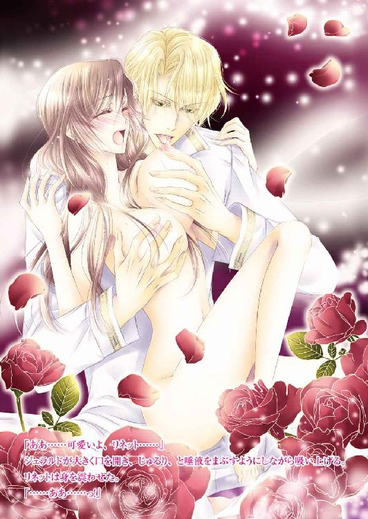
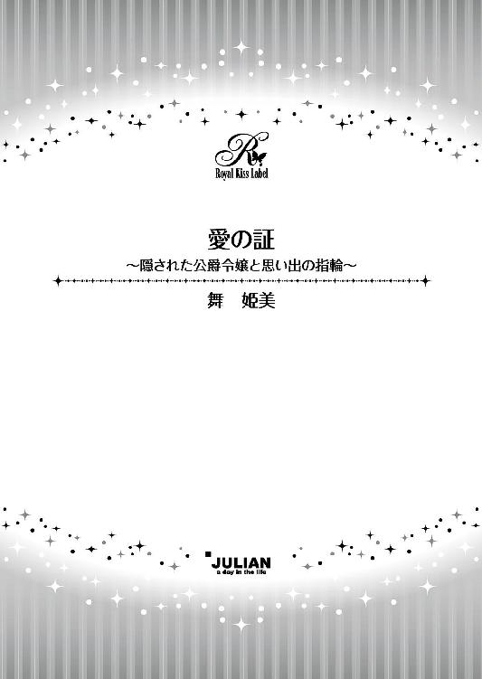
この物語はフィクションであり、実在の人物・団体・事件等とは、いっさい関係ありません。
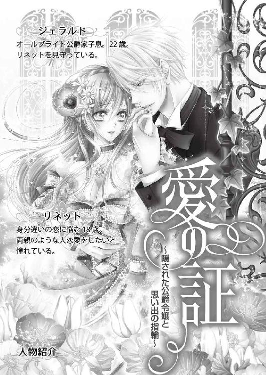
イラスト・水綺鏡夜
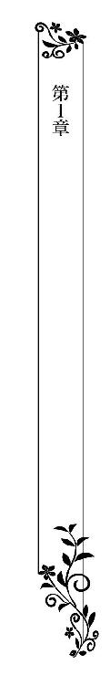
腕にかけた籐籠の中には、ナプキンに包まれた焼き立てのバゲットが香ばしい匂いを上げている。食欲をそそるいい匂いと一緒に、リネットは朝の空気を吸い込んだ。
見上げる空は抜けるような晴天で、実に素晴らしい洗濯日和だ。帰って朝食の準備をしたら、シーツの洗濯をしよう。昨夜母のカレンが熱を出したので、汗を吸い込んだシーツを綺麗にしてやりたい。
最近の母親は体調が悪く、リネットに不安を与えていた。いつまでも微熱が引かず、身体を動かすのが怠くなっているようだった。医者には診せているが原因は不明で、容体は一進一退を繰り返している。おそらく精神的なものではないかと医師は言っている。
母一人、子一人の家族だ。これまで懸命に自分を育ててくれたため、疲れが出ているのかもしれない。
リネットは話でしか聞いていないが、母がこの村にやってきたのには相当の理由があったのだ。それに、もしこのままカレンが死んでしまったら、自分は一人ぼっちになってしまう。
一人きり、という状況がなかなか想像できなくて、リネットは思わず足を止めてしまった。
その背中に、明るい声がかかる。
「おや、リネットじゃないか！ 朝も早くから買い出しかい？」
気さくなそれは、近所に住むサラのものだった。
国の外れの忘れられたかのような小さな田舎村は、住人すべてが家族のような温かさがある。そうでなければ貴族の娘として過ごしてきた母が、一人でリネットを育てることなどできなかっただろう。
「サラおばさん、おはよう！ 朝も早くって言うけど、おばさんたちだってもう働いてるじゃないの」
サラは片手に農具を持っている。畑仕事をしてきたのは一目瞭然で、朝食のために一度自宅に戻るのだろう。農業によって成り立っているこの小さな村では、太陽が昇るとともに働き出すのが大多数だ。
「まあねぇ、畑仕事はお天道様が出ているときにしないといけない仕事が多いからねぇ」
「でも、ボブおじさんはいないのね」
「あの呑んだくれ！ まだ寝てるよ！」
言葉は乱暴でも声音は優しい。夫婦仲がいいことはよく知っているため、リネットは声を立てて笑ってしまう。
「そういや親戚から林檎をたくさんもらったんだよ。あとでうちの奴に届けに行かせるよ」
「わあ、嬉しい！ ありがとう！ じゃあ、今日はそれでジャムとアップルパイを作るわ。あとで子供たちをよこしてくれる？」
「そりゃこっちとしても嬉しいねえ。リネットの料理はどれも絶品だからさ」
他愛もない世間話をしながらサラと一緒に途中まで歩いていく。分かれ道に来ると、サラは気遣いの目を向けた。
「......母さんの調子、また悪いんだろ？ 何かあったら遠慮なく言うんだよ」
肩を叩かれながら言われて、とても嬉しくなる。リネットはサラに心配をかけないよう、満面の笑みを浮かべた。
「ありがとう！」
サラと手を振り合って別れたあと、リネットは自宅に向かう。
この村の中で一番奥まったところにある大きめの家が、リネットの住まいだ。村の住居とは一線を画して貴族の別荘のような佇まいなのは、母のカレンがこの家の持ち主であるブライアム男爵の娘だからだという。
だがカレンはブライアム家からは勘当されて彼らとの交流はなく、母娘二人が贅沢をしなければ普通に暮らしていけるだけの金が毎月定期的に送られてくるだけだ。カレンの話によると、身分違いの恋をしてリネットを身籠ってしまったからだという。
幼い頃は自分のせいなのかと悩んだりもしたが、今はそんなことはない。母はいつもリネットに、自分がどれだけ父を愛したか──その結晶でもある娘がとても大切でどれほど愛おしい存在であるのかを教えてくれていた。
そのため、いつの日か両親のような大恋愛をしたいと、憧れにも似た気持ちを抱いてもいた。
（でも変な感じだわ、母さん。結局私も、母さんと同じ身分違いの恋をしてる......）
胸の中に浮かんだ青年の姿に、リネットは心温まるものを感じながらも針でチクチク刺されるような切なさを覚えた。俯いてしまいそうになるのを首を振って堪え、自宅の門扉を押す。
バゲットをまずはしまおうと台所に向かうと、食欲をそそるコンソメの匂いが漂ってきた。まだ朝食の支度をしていないのに──リネットはハッとして、慌てて台所に飛び込む。
「母さん！ どうして起きてるの!?」
カレンは少しやつれながらも美しい頰に、微笑を浮かべながら振り返った。
「おかえりなさい、リネット。パーカーさんのところのバゲットは買えた？」
「朝一番に行ったから余裕よ。それより母さん！ 何をしてるの!?」
「何って朝食のスープを作っているのよ」
昨夜、カレンは微熱が下がらずに苦しい思いをしていたのに、朝食作りなどしている場合ではないはずだ！
木杓で鍋の中身を楽しげにかき混ぜているカレンに、リネットは慌てて走り寄った。
「駄目よ、母さん。まだ寝ていなくちゃ！」
言いながら片手を母親の額に押し当てる。......熱は落ち着いていたが油断は禁物だ。
リネットは母親を促し、その身体を寝室へと押しやった。
「大丈夫よ、リネット。今朝は気分がいいのよ」
「駄目よ。病み上がりなんだから」
「でもリネット、本当に......」
「駄目と言ったら駄目なの！ きちんと治るまでは、ベッドから出ても駄目！」
いつになく強い口調でリネットは言い聞かせる。
「母さんに何かあったら、私は一人ぼっちになってしまうわ。そんなの嫌なの！」
じわりと視界が滲んで、リネットは慌てて瞬きをする。涙が視界を歪ませたことをカレンに気づかれたくはない。
寝室の扉を開け、カレンの寝支度を整えてやり、ベッドに入らせる。先ほどの抵抗はもうなく、カレンはおとなしくされるがままになっていた。
背中にクッションをいくつか入れて、上体を起こすのに楽な体勢にしてやる。
「スープを作ってくれてありがとう。バゲットと一緒に持ってくるわ。少し待ってて」
「リネット」
カレンが呼び止める。立ち上がりかけたリネットは、母親の傍に膝をついた。
カレンは娘の頰に片手を伸ばし、安心させるように優しく撫でる。
「心配ばかりかけてごめんなさいね」
「......そういう言い方はやめて、母さん。私は母さんの娘なのよ。早く良くなってほしいだけなの」
「あなたは父さまに似て、とても優しい子ね」
娘の言葉をカレンはとても嬉しそうな顔で受け止める。少し頰に赤味が戻ってきたように思えて、リネットも嬉しくなった。
「私、父さまに似てるの？」
「ええ、とても。容姿は私に似ているけど、性格は父さま譲りね。あの人もとても優しくて、いつも私のことを気遣ってくれていたのよ」
母親の表情が、また少し明るくなる。まさに恋する娘のそれだ。カレンがいつまでも美しいままでいられるのは、父親との恋の思い出があるからかもしれない。
（もし母さんが父さんにもう一度会うことができたら......もっと元気になれるかしら）
──そう思ったものの、リネットがカレンから聞く父親の話については、人となりや容姿、どれだけ愛しているかということばかりで、具体的に名前や住まいなどは教えてもらっていない。
カレンの不始末によってブレイアム男爵家は社交界から爪弾きにされないようにこうして田舎町に追いやったのだから、父親はかなり身分が高い者だろうということはわかる。カレンがこれ以上父親に迷惑をかけないようにしているのだから、リネットもそれ以上追求できなかった。
「私も、母さんみたいに素敵な人と大恋愛ができるかしら」
「あら......あらあら。大恋愛をしたいと思う相手がいるのね？」
「......どうしてそうなるの!?」
完全な図星に、リネットは瞬時に耳まで真っ赤になって反論する。カレンはまるで少女のような笑みを浮かべながら続けた。
「私はあなたの母親よ。わからなくてどうするの」
「こっ、今回ばかりは母さんの予想は外れているわ！ 朝食を持ってくるわね！」
まるで逃げ出すように台所に向かってしまったら、カレンの言葉を肯定しているのと同じだった。リネットは台所に入ると、まだ赤味の引かない頰を両手で押さえる。
（熱い......）
その原因が誰にあるのか。再び心に浮かんだ青年の姿に、リネットは首を振る。
そして気を取り直すと、母親の朝食と朝の薬を手早く用意し始めた。
通いの使用人を一人程度ならば雇っていけるくらいの送金はある。だがカレンが病を患いその回復がなかなか見られなくなった頃から、リネットは家事のすべてを自分ですることにした。
もしカレンの容体がもっと悪くなってしまったら、今以上に治療費がかかるかもしれない。ブライアム家に頼めば工面してくれるかもしれないが、カレンにその気がない以上、リネットに考えられる方法はそれしかなかった。
普通の貴族令嬢ならば、こんな生活に耐えられないと泣き出しているだろう。だがリネットは貴族生活をしたことは一度もなく、今の生活に不満を抱くこともなかった。
洗い終えたシーツを抱えて庭の洗濯紐に干したリネットは、晴天の下にはためく白さに満足げに頷いた。直後強い風が吹いて、シーツやリネットの癖のない亜麻色の髪、エプロンドレスの裾を大きく揺らした。
悪戯な風は、リネットの方にシーツをはためかせる。湿った布地に一瞬全身を包み込まれて驚き、リネットはよろめいた。
「あ......っ」
尻餅をついてしまう──身体の痛みを覚悟して、リネットは強く目を閉じる。だが予想していた痛みはなく、代わりに背中にとても安心できるぬくもりが感じられた。
抱きとめてくれた逞しい腕と胸の感触に、リネットは慌てて目を開く。
「大丈夫かい、リネット」
低いがとても柔らかな声で言って頭上から顔を覗き込んできたのは、整った顔立ちの青年だった。
陽光を受けると毛先が透けてしまいそうな淡い金髪と、最高級のエメラルドを嵌め込んだかのような緑の瞳。きりりとした切れ長の瞳はとても厳しそうな印象を与えるが、穏やかで優しげな笑みが浮かぶとあっという間にそれが拭われる。
田舎町に来るのに違和感がないようにか、洗いざらしのシャツとサスペンダー付きのズボンに前つばがついた帽子をかぶっているが、彼が持つ上品さは隠せていない。
だからリネットは青年のこの姿を見ると、悪いと思いつつも小さく笑ってしまう。
（だって、お忍びだってすぐにわかるもの）
リネットの笑顔を認めて、青年は怪我がないことに安堵の息をついた。
「よかった、足を捻ったりはしてないみたいだね」
「どうもありがとうございます、ジェラルドさま」
丁寧な言葉遣いで、リネットは礼を言う。青年はリネットをきちんと立たせてやりながら、少し不満げに言った。
「今の私の格好でその話し方はおかしくはないかい？ 今の私は、この村のただの好青年だ」
「ご自分で好青年だなんて仰ることからして、とても不自然です」
「......なるほど。そうだな......」
リネットの指摘に同意しながら、青年は顔をしかめる。その様子にリネットはさらに笑みを深めた。
ジェラルド・オールブライト。オールブライト公爵家の跡取り息子で、今年二十二歳になる。リネットより四つ歳上の彼とこんなふうに親密に話せるのも、幼い頃の出会いがあってこそだろう。そうでなければ公爵家の御曹司と自分が、言葉を交わすことなどできない。
──ジェラルドとの出会いは、リネットが十歳頃のときだ。カレンと二人で薬草を摘みに村の近くの森に入った。ジェラルドはこの村を通過する際、道に迷ってしまっていた。そんなジェラルドと出会い、日暮れであったことから一晩の宿を与え、道を教えてやったのだ。
その後、ジェラルドがわざわざ礼に訪れてくれたことから交流が始まり、こうして彼は定期的にリネットとカレンを訪ねてくれる。
貴族社会の常識はぼんやりとしかわからないが、公爵家子息がこんな田舎に足を運んで問題はないのだろうか。ジェラルドが来ててくれることはとても嬉しいが、彼の評判に傷がつくかもしれないことをリネットはいつも心配してしまう。
村には一人で来ているが、隣町まではちゃんと従者と一緒らしい。ジェラルドなりに変装もしているし、貴族の男として剣術の腕も短銃の腕もあるという。しかし、それでももしジェラルドの身に何かあればと思うと、気が気ではない。
そんなリネットの表情から何を考えているのかわかったのだろう。ジェラルドが微苦笑しながら手を伸ばし、リネットの頰を優しく撫でた。
「リネット、怖い顔になっているよ」
「そ、そうですか？」
「でも私はリネットのその顔も好きだ。私のことをとても心配してくれていることがわかるから」
爽やかな声音で紡がれる言葉は、リネットには恥ずかしくなるものだ。真っ赤になって飛び離れようとするが、ジェラルドの手は後頭部に回ってしまっていて、逃げられない。それどころかジェラルドは長身を屈めるように前に倒すと、リネットと額を合わせてくる。
くちづけも可能なほどの至近距離に、リネットは息が詰まりそうだ。固まってしまったリネットに、ジェラルドは目を閉じて続ける。
「君の家はとても優しくて温かくて、居心地がいいんだ。君たちが嫌だと思わない限り、私は君のところに来たいんだよ」
嫌だなど、そんなことを思うわけがない。
ジェラルドは一度だけの恩義を忘れない、優しくて誠実な人だ。たった一晩の宿ともてなしだけしか自分たちは与えていないのに、カレンが病気になってからは時間が許す限り訪れてくれ、さまざまな援助をしてくれている。
（優しくて、素敵な人。......だけど、好きになってはいけない人）
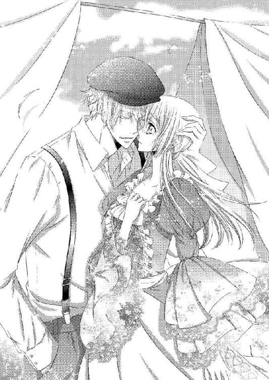
ツキリと胸を刺す小さな痛みを飲み込んで、リネットはジェラルドに微笑みかける。
リネットには想像しかできないが、公爵家子息としての重責がジェラルドにはあるはずだ。それが彼の心に疲労を与えているのかもしれない。それを癒すためにここにやってくるのだとしたら、リネットはいつでも笑顔で出迎えたいと思う。
「ごめんなさい、ジェラルドさま。ただ、公爵家の大事な若様がこんな田舎まで来てくださっているのに......何か危険な目に遭ったらと思うと心配で」
「ありがとう、リネット。でも大丈夫だ。自分の身くらい自分で守れないと、公爵家の若様なんてやっていられないんだよ」
ジェラルドの言葉にリネットの心配はまた強くなる。それではまるで、常にジェラルドには危険があって、しかも危険の種類は様々だということではないか。
一瞬包み込むように抱きしめてやりたくなり、リネットはジェラルドの身体に手を伸ばす。だが指先がシャツの脇腹に触れたところでハッと我に返り、慌てて手を引っ込めた。幸い目を閉じているジェラルドには気づかれていない。
（はしたない以前に、私はジェラルドさまに恋心を抱いたりしてはいけないの）
体裁のために身内から見捨てられた男爵の娘。カレンが令嬢としての知識を与えてくれ、指導もしてくれる。だが今のリネットには必要ないものだし、正式な令嬢教育とは違うだろうから結局は大した役には立たないだろう。
そんな自分とジェラルドが恋仲になるなど、想像するのも失礼だ。だからこの気持ちは、ずっと心に秘めていなければ。
リネットは自分の頰を包むジェラルドの手に、掌をそっと重ねた。これくらいなら、しても大丈夫だろうか。
ジェラルドの閉ざされていた瞳が開き、宝石のように美しい緑のそれがじっとこちらを見つめてくる。
穴が空いてしまいそうなほど見つめられて、ドキドキしてしまう。リネットは顔が赤くならないようにと願いながら、笑いかけた。
「ジェラルドさまが我が家で寛いでいただけるなら、とても嬉しいです。昨日、アップルパイを作ったんですよ。よかったらそれでお茶にしませんか？」
「それはいい。リネットが作るものは何でも美味しいから」
どこか名残惜しげに、ジェラルドがリネットから離れる。
きっとそんなふうに思うのは、自分の勝手な妄想だろう。ジェラルドは分別がある人で、リネットに淫らなことはこれまで一度もしたことがない。
「さあ、中に入ってくださいね。今日はどのくらいまでこちらにいらっしゃるんですか？」
「明日の午後にはこちらを出ないといけないかな。泊まっていってもいいかい？」
「もちろんです！ じゃあ、今夜はジェラルドさまのお好きなものを作りますね！」
歳を重ねるたびにジェラルドは忙しくなっていくようだったから、一晩だけでも一緒にいられるのは嬉しい。少しはしゃいだ声になってしまっていることに気づけないまま、リネットはジェラルドと一緒に家の中に入る。
「カレンさんのお見舞いは、しても大丈夫かい？」
「ええ、是非。母さんもとても喜びます」
社交辞令ではなく心からそう言うと、ジェラルドは嬉しそうに笑ってカレンの寝室に向かおうとする。だがすぐに思い出したように足を止めると、スボンのベルトループに結びつけていた小袋を外してリネットに渡した。
「身体にいい香草茶だ。カレンさんに飲ませたらいいんじゃないかと思ってね」
「あ、ありがとうございます......！」
ジェラルドの優しい心遣いがとても嬉しい。リネットが満面の笑みで礼を言うと、ジェラルドは満足げに頷いてカレンのところに向かった。
リネットは小さな贈り物を、そっと胸の中に抱きしめる。その奥で、とくん、と鼓動が脈打つのを感じる。
（好きになっては、いけない人なのよ）
何度となく言い聞かせながら、リネットは茶の準備を始めた。
その日の夜はカレンもベッドから出ることができ、ジェラルドとともに夕食のテーブルについた。
ジェラルドは訪れるたびに何かしら土産を持ってきてくれるのだが、今回は香草茶の他に若鶏の肉も差し入れてくれた。それで作ったシチューはジェラルドのいつも口にする食事からすれば随分質素なものだと思うが、彼は実に美味しそうに食べてくれておかわりまでしてくれた。
他愛もない話は穏やかで温かいものばかりで、カレンも自分と同じくジェラルドに心の憩いの場を提供しようとしているのがわかる。そのおかげか、笑顔が絶えない夕食になった。
夕食のあとカレンをベッドに寝かせ、夜の薬を飲ませたリネットは、明日の朝食の前準備をして居間に行く。二人がけのソファに座ったジェラルドにそろそろ眠った方がいいと進言しようとして近づいたリネットは、小さく笑った。
（うたた寝してる......）
軽く俯いて、ジェラルドは小さな寝息を立てていた。
少し眉根が寄せられているのは、日々の疲れがあるからかもしれない。そんな表情でもジェラルドの顔立ちには気品があり、リネットの胸をときめかせる端正なものだった。
リネットは胸をドキドキさせながらもすぐに別室からブランケットを持ってきて、ジェラルドの身体にかけてやる。ソファでうたた寝など身体がゆっくり休まらないからベッドに案内した方がいいのだろうとわかっているが、起こすのが躊躇われた。
ブランケットを掛けられても、ジェラルドは目を覚まさない。少ししたら起こしてやらなければならないだろうと思いつつ、リネットは別室から今度は裁縫道具と洗濯物の一部を持ってきてジェラルドの足元に座った。
背中でかすかなジェラルドの寝息を聞きながら、リネットは繕い物を始める。靜かな夜にそうやって針を運んでいると、心がとても穏やかになった。
こんなふうにジェラルドはリネットの家のソファで眠ってしまうときがある。もしかして自邸であまり眠れていないのだろうか。
（眠れていても、眠りが浅いのかもしれないわ）
そんなことを考えていたからだろうか。手元が一瞬揺れて、針先が指先を刺してしまう。
「......つ......っ！」
小さな痛みの声を上げて、リネットは糸がついたままの針をテーブルに落としてしまう。直後、背後からジェラルドが腕を伸ばして手首を掴み上げた。
「刺したのか!?」
「ジェ、ジェラルドさま......っ」
予想外の強い力にリネットは驚いてしまう。ジェラルドはそんなリネットに構わずさらに傷口を見ようと、肩口から身を乗り出してきた。
肩口や背中にジェラルドの身体や体温を感じて、リネットは慌ててしまう。ジェラルドとこんなふうに密着するのは、心臓に悪い。
「ジェラルドさま、大したことはありませ......」
次の瞬間、リネットの声は飲み込まれた。ジェラルドが顔を寄せて、リネットの指先をぱくりと口に含む。
「......っ！」
暖かく湿った口中に吸われ、舌先で傷口を舐められる。濡れた舌が優しく血の雫を舐め取った。
リネットの背筋に、ゾクゾクとした快感が走り抜けた。
「......や......っ」
そんな感覚を覚えてしまう自分が恥ずかしくて、リネットは手を引っ込めようとする。だがジェラルドががっちりと手首を掴んでいるためにできない。
リネットは真っ赤になりながら、ジェラルドに言った。
「も......もう大丈夫です、ジェラルドさま......っ！」
「......っ」
ジェラルドが、ハッとしたように瞳を見張る。リネットが涙目で見返すと、彼は何かに慄いたかのようにそっと指を離した。
「......すまない」
ひどく申し訳なさそうな顔で、ジェラルドが言う。リネットは何だか居た堪れない気持ちになる。
リネットは取り繕うように笑って首を振った。
「わ、私の方こそ大きな声を出してしまってすみません。あの、驚いてしまっただけなんです」
拒絶したわけではないと暗に告げると、ジェラルドは小さく笑った。
「君の傷が心配だとはいえ、私も失礼なことをしてしまった。すまない」
「だ、大丈夫です」
ジェラルドから離された手を、リネットは胸に抱え込む。その手の下で心臓がドキドキと脈打っているのがわかった。
（大丈夫じゃない。この心臓の音が聞こえちゃうんじゃ......っ）
「うたた寝をしてしまったのがいけなかったか。ちゃんとベッドで眠ろう」
ソファから立ち上がりつつ、ジェラルドは言う。そのままいつもジェラルドが泊まる客間に向かっていく背中に、リネットは就寝の挨拶をした。
「おやすみなさい、ジェラルドさま」
「ああ、おやすみ、リネット。夜の仕事はほどほどにするように。君が倒れてしまってはいけないよ」
「はい、ありがとうございます」
ジェラルドの姿が居間の扉の奥に消えるのを待ったあと、リネットはへなへなと座り込んでしまった。テーブルに縋りつくようにして、顔を伏せる。
（な、何だったのかしら、今の......）
ジェラルドは指の治療のために、あんなふうにしただけだ。
実際、ぷっくり膨れて現れた血は綺麗に拭い取られている。小さな針の傷は、もうほとんど見えない。
リネットは針を片付けると、頬を両手で押さえた。火照りは、まだ治まっていなかった。
（どうするの、私......こんなにドキドキしてる......）
ジェラルドが帰っていくとまたいつも通りの日常だ。
家事をこなしカレンの看病をして、村の者たちと交流する。母親思いのリネットは人気があり、村人たちは何かと面倒を見てくれる。
小さいながらも家の傍に畑があり、リネットはそこで野菜を育てている。最近では手際も随分良くなり、採れたての野菜のサラダはカレンの大好物になっていた。
畑に水やりをしていると、サラの息子のジョンが訪ねてくる。手には人参のキッシュが入ったバスケットを持っていた。
「母さんからリネットにだってさ。この前のアップルパイのお礼」
「林檎をおすそ分けしてもらったお礼だから気にしなくてもよかったのに。ありがとう！」
リネットが満面の笑みを浮かべて礼を言うと、ジョンも少し照れくさそうに笑い返す。リネットは水遣りの手を止めた。
「お茶にするわ。よかったらどうぞ」
「......じゃあ、一杯だけ」
嬉しそうな顔をしながらも、少し困ったようにジョンは言う。もしかして迷惑だったのかとリネットが見返すと、ジョンは苦笑した。
「あ、いや......リネットと一緒にいられるのは嬉しいんだぜ！ けど、一応俺も年頃の男だし？ お前を狙ってる若い奴は結構いるし？ その......」
よくわからないながらもリネットはジョンの話をちゃんと聞こうと、向き直って真っ直ぐに見返す。ジョンの顔がみるみる赤くなり──そして突然両手を掴まれた。
「リネット！ あ、あのさ、お前さ！」
顔を真っ赤にしながら必死の口調でジョンが言う。勢いに圧されてしまいながらも必死さが伝わってくるから、リネットはされるがままになっていた。
「どうしたの？」
「お、俺......」
ジョンは小さく息を呑んで気持ちを整えたあと、勢いをつけて続けた。
「お前さ、お、俺の嫁さんに」
「──リネット」
直後、凛と張った呼び声が背後から届いた。よく知っている声だったがいつもの優しく穏やかなそれからはひどく遠い。厳しく威圧的な声音にリネットはもちろんのこと、ジョンまで震え上がってしまう。
振り返れば視線の先にジェラルドがいた。
いつもの村の青年を模した変装ではなく、きっちりと首元にクラヴァットも着けたスーツとフロックコート姿だ。公爵家子息としての気品はもちろんのこと、膝をつかずにはいられないような威圧感を感じる。エメラルドの瞳がリネットたちを冷徹に見つめていた。
ジョンはすぐに膝をつき、帽子を取って胸の前で握り締めた。
「こ、これは公爵さま！ ご機嫌うるわしゅう！」
緊張でがちがちに強張っているためか、何だか挨拶が少しおかしいような気がする。ジェラルドは軽く頷くだけの返事をすると、リネットへと目を向けた。
「時間ができたからカレンさんのお見舞いに来たんだが、お邪魔だったかい？」
ジョンは飛び上がるように立ち上がる。
「は、話は終わったんで！ お、俺、畑仕事に戻ります!!」
「あ......ジョン！ おばさんにお礼を言っておいて!!」
ジョンは一瞬振り返ったものの、ジェラルドと目が合うと逃げるようにして再び前を向いてしまう。自分の隣に立つジェラルドを改めて見上げれば、何だか不機嫌そうだった。
こんなふうに思われる原因がまったくわからないから、リネットは不安になる。何か自分はジェラルドの機嫌を損ねるようなことをしてしまっただろうか。
「あ、あの、ジェラルドさま......」
「何だい？」
ジェラルドがゆっくりと瞬きをしてから、こちらに改めて顔を向けてくる。そのときにはもう、リネットがよく知っている穏やかで優しい笑顔が浮かんでいた。
「あの......私、何かしてしまったでしょうか......」
「それは......」
ジェラルドは一瞬言葉を詰まらせる。リネットは唇を強く引き結び、緊張した面持ちでジェラルドの答えを待った。
ジェラルドはそっと首を振りながらリネットの頬に手を伸ばし、優しく撫でる。
「......君は何も悪くない。仕事が少し立て込んでいたせいか、私に気持ちの余裕がなくなってしまっていたようだ。すまない」
ひとまず自分が原因ではなかったことにホッとしたものの、ジェラルドのことが心配になる。何か自分にできることはないかと考え、リネットはジェラルドの手を引いて家に向かった。
「おいしい紅茶をいれますね。あと、疲れた身体には甘いものがいいらしいですから......昨日作ったクッキーをお出ししますね。あ、マドレーヌもありますよ！」
ジェラルドが繋がれた手をそっと握り返してくる。掌のぬくもりをふいに強く感じて、リネットの鼓動が跳ねた。
「ありがとう、リネット。君の傍は本当に温かい......」
（もっと傍にいられたら）
もっとジェラルドのために色々なことができるのに。だが自分の立場や価値を考えればそれができないこともよくわかっている。
リネットはその気持ちを呑み込み、ジェラルドに優しく微笑みかけた。
夜にはリネットの家を出ると告げてきたジェラルドに、茶と菓子の用意をする。リネットがいれた紅茶を、ジェラルドは香りを胸奥まで吸い込んで味わってから口にした。その様子から疲れが溜まっているのだろうと察することができて、さらに心配してしまう。
それでもジェラルドは、リネットとの他愛のない会話を楽しんでくれる。だからリネットは、楽しくなるような話題を選んでいた。
ジェラルドと小さく声を上げて笑いながら会話を弾ませていると、カレンが姿を見せた。
今日はまた熱が出てしまい、横になっていたのだ。まだ、顔色は悪い。
「母さん！ どうしたの、具合が悪いの？」
リネットの心配げな声に、カレンは淡く笑う。
「大丈夫よ。楽しそうな声が聞こえたから、一人でいるのが寂しくなってしまって」
カレンの言葉にジェラルドが椅子から立ち上がり、申し訳なさげに言った。
「すみません、うるさかったようですね」
「違うわ、ジェラルドさま。娘の楽しい声が聞こえることは、母親にとってはとても嬉しいことなのよ。リネットはあなたといると、いつも楽しげで......」
「か、母さん！」
その言い方ではまるで、自分がジェラルドのことを好きだと教えているようなものではないか。リネットは真っ赤になり、慌てて母親を窘める。
「ジェラルドさまに変なこと言わないで。ジェラルドさま、母さんの言うことは気にしないでください」
「私は、リネットと一緒にいるときが一番楽しいと思っていますからね。カレンさんにそう言っていただけると、私も嬉しいです」
ジェラルドは穏やかな笑顔を浮かべながら答える。それは一体どういう意味なのかと、リネットは頭が真っ白になってしまう。
ジェラルドはそんなリネットの表情に微笑を深めると、カレンに歩み寄った。
「ですがカレンさん、やはりまだ顔色が悪く思えます。横になった方がいい。まだ熱は下がっていないのでしょう？」
リネットも慌ててカレンに歩み寄り、片掌を額に押しつけた。ほんのりと熱い。
母親の顔を改めてちゃんと見れば、ジェラルドの言うように確かに顔色が悪かった。白い顔に、頰だけが紅くなっている。
リネットは母親を支えるように、背中に手を回した。
「母さん。熱があるんだから、ちゃんと寝てなくちゃ」
「でも、ジェラルドさまの声が聞こえたから......お話ししたいことがあって」
「わかりました。では寝室でお聞きしましょう」
ジェラルドがカレンの身体に腕を回し、抱き上げようとする。カレンはそれに恥ずかしげに笑った。
「いやね。そんなふうに病人扱いしないでちょうだ......」
カレンの言葉が不意に途切れ、その身体が前のめりに倒れた。
声にならない悲鳴を上げるリネットの傍で、ジェラルドがカレンを抱き上げる。
「リネット、医者を！」
「......は、はい！」
弾かれたようにリネットは頷く。震える足のせいでもつれそうになりながら玄関ドアに向かうリネットを、ジェラルドが一度呼び止めた。
「リネット」
柔らかく穏やかな呼び声にリネットが振り返ると、彼は緑の瞳に安心させるような力強い笑みを浮かべた。
「大丈夫だ、リネット。落ち着いて。君が医者を呼んでくるまで、私がカレンさんを診ている。だから、大丈夫だ」
医者でもないジェラルドの言葉に、不思議な安心感を覚える。足の震えが落ち着き、リネットは強く頷き返した。
「ありがとうございます、ジェラルドさま。母さんのこと、よろしくお願いします」
ジェラルドが頷くのを確認したあと、リネットは家から駆け出した。
ベッドヘッドの置き時計の音が、規則的に時間を刻んでいく。その音に時折カレンの熱に苦しむ荒い呼吸音が重なった。
リネットは時折汗を拭いてやり、脇の下と額を冷やすタオルを取り替えてやりながら、カレンの傍を離れなかった。
掛け布団の下にある母親の手を握りしめる。小さくて細い。熱のせいでその手は熱かった。
村医者の診断では、いつもの発作のような発熱だという。薬を飲んで安静にしているしか方法はない。わかっているのだが、リネットの胸にはじわじわと侵食してくる不安がある。
（母さんのこの熱、最近よく起こっている......）
そして熱が引いていく期間が、遅くなっている。無意識のうちに考えないようにしていたことが、突きつけられたような気がする。
リネットはカレンの手を強く握り締める。そんなことでカレンの症状がよくなることはないとわかっているのだが、せずにはいられなかった。
（もしも、母さんがいなくなったら）
自分の足元が崩れて奈落に落ちていくような感覚が襲ってくる。リネットは子供のように泣きたくなるのを堪えるため、唇を強く引き結んだ。
ずっと母一人、子一人で生活してきた。村の人たちはとてもいい人たちばかりだが、たった一人の肉親を喪う恐怖はやはりどうしても拭いきれない。血筋的に完全に一人になるわけではないとわかっていても、リネットには母をいない者と扱っているブライアム家を頼るつもりはまだなかった。
「......母さん......私を置いていかないでね......？」
握り返してくる力が感じられないから、さらに不安になる。
涙の一粒が零れてしまいそうになり、リネットは慌てて首を振ってそれを散らした。ここで一度でも泣いてしまったら、誰かに縋りつかなければ立っていられなくなりそうだった。
一人ならば自分のベッドに潜り込んでしまえばいい。だが今日はジェラルドがいる。彼にこれ以上の迷惑はかけられない。
ジェラルドの姿を思い浮かべたリネットは、直後にハッとした。今日は、そんなにゆっくりできるわけではなかったはずだ。
慌てて置き時計を見れば、いつもならばもう夕食をとり終えている時間だった。
夕食の支度もしていない。ジェラルドも何もとっていないはずだ。
リネットは母親を起こさないように気をつけながらも、大急ぎで居間に向かった。
「ジェラルドさま、申し訳ありません！ 私、ずっと放っておいてしまって......」
居間に向かう途中で見つけたジェラルドは、玄関口にいた。ポーチで二人の近侍と向かい合い、何やら会話している。潜めた声は内容まではわからないが、おそらくカレンとリネットを気遣ってくれているからだろう。ジェラルドの手にはバスケットがあった。
近侍は主人の肩越しにリネットの姿を認めると、一歩退きながら丁寧に頭を下げる。一応貴族の娘ではあるが村娘と大差ない自分に対しても、彼らはきちんとした礼をくれた。
ジェラルドが振り返り、微笑みかけた。
「ああ、リネット。うるさくしてしまったかい？」
「......い、いいえ。大丈夫です。それよりも私、ジェラルドさまがお帰りにならなくちゃいけないことに気づいて......お時間、大丈夫ですか？」
この近侍たちはジェラルドを迎えに来たのかもしれない。自分たちのためにジェラルドの仕事の邪魔をしてしまったのかと思うととても申し訳なく、リネットは彼らに頭を下げた。
近侍たちがリネットの態度に微笑みを零す。ジェラルドも同じように笑って言った。
「仕事のことは大丈夫だよ。今、その話をしていたところだ」
「ではジェラルドさま、私たちはこれで失礼します。何かありましたらまたお呼びください」
「ああ。二、三日、頼む」
再び丁寧に礼をして玄関から出て行く近侍たちにジェラルドがかけた言葉に、リネットは驚いた。それはカレンのためにオールブライト家を留守にすることではないのだろうか。予定外の不在をしてしまって、大丈夫なのだろうか。
（ううん、それよりも......ジェラルドさまがお屋敷を留守にする理由が、私たちのことを心配してだったら......！）
優しいジェラルドだ。そうとしか考えられない。リネットは慌てて言う。
「ジェラルドさま、私は一人でも大丈夫です。ですからお仕事に戻ってください」
「駄目だ。今の状況で君を一人になんてできない。かえって心配で仕事が手につかなくなる」
言いながらジェラルドが手にしていたバスケットを渡す。かけられていたナプキンをめくると、中にサンドイッチが入っていた。
「夕食がまだだったろう？ 用意させた。食欲がないかもしれないが、少しは食べないと駄目だ。さあ、おいで。お茶をいれてあげよう」
ジェラルドがリネットの手を引いて、居間に向かう。されるがままになるのは、泣きたくなるのを堪えるためだ。
リネットをソファに座らせ、ジェラルドは一旦台所に行く。リネットはバスケットをテーブルに置いたものの、サンドイッチに手を出す気持ちにはなれなかった。
ジェラルドが茶を持ってきてくれる。リネットがバスケットを見つめたままでいると、ジェラルドがカップを置いて手を伸ばしてくる。頰に優しく触れられて、リネットの我慢もそこまでだった。
堪えようとしていた涙が、ぽとりと落ちる。ジェラルドは手の甲に落ちた熱い雫に一瞬驚いたように軽く目を見張ったものの、すぐに指で目元を拭った。
「......リネット」
呼びかけてくれる声がとても優しくて、いけないとわかっていても甘えたくなる。何かを口にしてしまったらジェラルドを困らせてしまいそうな気がしたから、リネットは唇を強く引き結んだ。
ジェラルドが隣に座り、肩を抱き寄せる。そして濡れた目元に唇を押しつけて涙を吸い取り、舌先で柔らかく舐め取った。
「リネット、声を出さないで泣かれるのを見るのは、とてもつらい。我慢しなくていいんだよ」
「でも......でも」
「カレンさんに泣き声を聞かれるのが怖いのかい？ だったらこうしていてあげよう」
リネットが何か言うより早く肩に回っていたジェラルドの腕に力がこもり、抱き寄せられる。強い力に抵抗など欠片もできず、広く逞しい胸に倒れ込んでしまった。
ジェラルドのぬくもりを強く感じて、リネットの鼓動が痛いくらいに跳ね上がる。反射的に身を起こそうとしたが、ジェラルドの腕に囲われてできない。
ジェラルドはリネットの亜麻色の髪に頰を埋めるようにして抱きしめると、耳元で囁いた。
「これでカレンさんに泣き声は届かない」
「ふ......」
こんなふうに包み込むような優しさを貰ってしまったら、限界だ。リネットはジェラルドの背中に両腕を回してしがみつきながら、泣き出してしまう。
「か、母さんがいなくなってしまったら、ど、どうしよう......っ」
「大丈夫だ。カレンさんは強い人だ。勘当同然になっても君を大切にここまで育て上げた人だ。病気になんかに負けない」
「ひ、一人になるのは、嫌なの......っ」
「君は一人にはならない。カレンさんは元気になる。それに私がいるから」
ジェラルドはリネットの身体を片腕で強く抱きしめ、もう片方の手であやすように背中を叩いてくれる。心の中で我慢していた不安をすべて吐き出してしまうと、とても気分が楽になった。
ジェラルドはリネットをわずかばかりも離すことなく、抱きしめてくれている。そのぬくもりに包まれているととても安心して──やがてリネットは、泣き疲れて眠ってしまったのだった。
どこかで鳴いた一番鶏の声が、リネットを目覚めさせた。うつ伏せで眠っていた身体を少し起こして、まだ眠い目を擦る。昨日泣いてしまったせいで瞼が少し腫れぼったかったが、気持ちはずいぶんスッキリしていた。
ジェラルドに弱音を吐いてしまったことが、恥ずかしい。
だがジェラルドはリネットの身体を抱きしめ背中をあやすように叩き、唇で優しいくちづけを額に与えながらすべてを聞いてくれた。子供のように縋りついてしまったことが、今更ながらに頬を赤くさせる。
早く顔を洗っていつもの自分に戻り、朝食の支度をしよう。ジェラルドを起こし、カレンの様子も見にいかなければ。
自分を包み込んでくれるぬくもりが心地よく、もう少し眠っていたいが──やらなければならないことが多かった。
だがリネットは次の瞬間、大きく目を見張る。自分の身体の下にジェラルドの長身が横たわっていた。
「......え......？」
何が起こっているのかさっぱりわからず、リネットは茫然と動きを止めてしまう。
二人がけのソファに、ジェラルドが仰向けに寝ていた。長すぎる脚の片方は床に落ち、片方はソファの袖から落ちている。
上着は脱いでいて、それはリネットの肩から背中にかかっていた。クラヴァットが解かれ、絹のシャツのボタンが幾つか外されている。はだけたそこから男らしい喉仏のある首筋と引き締まった鎖骨が見えて、リネットは真っ赤になって飛び離れようとした。
だが身体に回っていたジェラルドの腕のせいで、わずかに身を起こせただけだ。ジェラルドに抱きつくような体勢で眠っていたいことに気づき、心臓が激しく脈打ってしまう。
（さ、昨夜、ジェラルドさまは私の傍にずっといてくれたんだわ......）
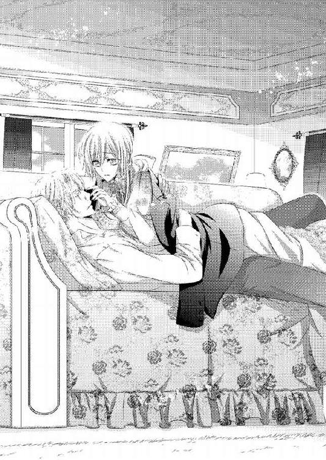
そして泣き疲れて眠ってしまった自分が安心できるように、こうして抱きしめていてくれたのか。
ジェラルドの優しさが嬉しく、ほんの少し切ない。
理知的な額に淡い金の前髪が乱れてかかっていて、リネットはそれを指先でそっと払おうとした。その気配を感じ取ったのか、ジェラルドの瞳がゆっくりと開く。
見事なエメラルドの瞳は、まっすぐ射抜くようにリネットを見返してきた。
一瞬息を呑んでしまうほどの鋭さだ。笑みがないと、こんなにも威圧感があるのか。
朝の挨拶をしなければいけないと思うものの、リネットはジェラルドの威圧感に呑まれて唇を震わせるだけだ。やがてジェラルドが、いつもの優しげな笑みを浮かべる。
「おはよう、リネット。大丈夫かい？」
うっとりと蕩けるような笑みに、リネットの鼓動がまた跳ねる。リネットは慌てて頷いた。
「は、はい。もう大丈夫、です。あ、あの......起きてもいいですか......？」
抱擁の拘束に今、ようやく気づいたようだ。ジェラルドはハッとした表情になると、慌ててリネットを放す。
起き上がれて嬉しいのだが、ジェラルドのぬくもりが遠ざかってしまうのは寂しかった。
（私ったら、なんてはしたないことを......）
「すまない。昨夜、君がとても悲しんでいたから......」
ジェラルドが慌てたように状況を説明してくる。昨夜の取り乱しようはしっかりと覚えているため、リネットは赤くなった。
「わ、私の方こそジェラルドさまに甘えてしまって、すみませんでした。それに、お仕事の邪魔もしてしまって......」
「それは私がしたかったことだからいいんだ」
ジェラルドもソファから立ち上がり、寝乱れた髪を手櫛で整え、着崩れた胸元を元どおりにする。リネットがよく知るきちっとしたジェラルドの姿がすぐに現れた。
一糸の乱れも感じさせない凛とした立ち姿に、リネットは改めてときめいてしまう。
（それに、今の言葉って......）
聞きようによってはリネットのためにしてくれたようだ。もちろんそんなことはなく、気にしていたのはカレンの方だろうが。
「すぐにお茶をいれます。それから朝食の支度をしますね」
「食事の支度はカレンさんの分だけでいい。私たちの朝食はこのサンドイッチにしよう。結局君は昨夜、何も口にしなかったんだから」
差し入れてもらったサンドイッチは手つかずのまま、テーブルに置かれたままだ。リネットは折角の気遣いを上手く受け取れなかったことを申し訳なく思いながら言う。
「折角のご厚意をすみません......」
「私が好きでやったことだよ。謝られるのはかえって困るな」
ジェラルドの苦笑に、リネットは小さく笑い返す。リネットが様子を見るためにカレンの部屋に行こうとすると、ジェラルドもついてきてくれた。
カレンのために、カーテンは開けないでおく。ベッドに横たわるカレンの顔色はまだ蒼白かったが、呼吸はかなり落ち着いていた。
リネットがホッと息をつくと、その気配に気づいたかのようにカレンが瞳を開いた。
「母さん！」
大声を上げてはいけないとわかっていても、叫ぶように呼びながら母親の手を握りしめる。リネットの背後にはジェラルドがいてくれて、カレンを心配そうに見下ろしていた。
カレンは弱々しく手を上げる。リネットに手を握られたまま、娘の頰を優しく撫でた。
「ごめんなさい、心配させてしまったわね」
声は少し掠れていたが、口調はしっかりしている。リネットはさらに安堵しながら首を振った。
「私のことは大丈夫。ジェラルドさまがいてくれたから」
カレンがそっと視線を上げて、ジェラルドを見る。ジェラルドも安心させるように強く頷いた。
「二、三日、こちらにいさせてもらうつもりだ。リネットのことは心配しないで大丈夫です」
「それはとても頼もしいわ。ありがとう、ジェラルドさま」
「母さん、無理しちゃいけないわ。お腹が空いてないなら、もう少し眠って。それとも朝食にする？」
カレンの手を一度撫でてから離し、掛け布団の下に入れる。だがカレンはその手を動かし、リネットにチェストの一番上の引き出しを開けるように言いつけた。
よくわからないながらも、カレンがネックレスにして持っている鍵を借りて開ける。
引き出しの中央には掌に乗るほどの小箱があったが、他には何もない。大切にしているのが感じ取れる。
小箱を取り出してカレンに持っていくと、開けていいと促された。少し躊躇いながらも、リネットは箱を開けた。
中には、指輪が一つ、入っている。銀でできた指輪には、澄み切った空を閉じ込めたかのような美しいアクアマリンがはめ込まれていた。
シンプルなデザインながらも洗練されていて、質のいいもので作られていることがわかる。自分たちのような者が手にすることなどない高価なものだろう。
そんなリネットの背後で、ジェラルドが小さく息を呑む。どうしたのかと振り返るよりも先に、カレンが続けた。
「その指輪をお持ちなさい」
「え......」
リネットが、驚いて母親を見返す。カレンは小さく頷き、小箱から指輪を取って左の薬指に嵌めてくれた。
銀の冷たさが、すぐに自分の体温でぬくまる。意外なことに指輪のサイズはぴったりだった。
カレンは嬉しそうに笑う。
「まあ......あの頃の私と同じサイズなのね」
「母さん、これは......？」
あまりにも高価すぎて、嵌め続けていることがつらくなる。リネットがかすかに震える声で問いかけると、カレンはベッドに深く沈み込みながら言った。
「あなたのお父さまが下さったものよ」
「え......」
母親の思い出話で聞いてはいても、実物を見たことはまだなかった。確かにこんな高価そうな指輪を日常的に着けていたら、よからぬ者に狙われてしまうだろう。
カレンにとっては金銭的な価値よりも思い出としてとても大切な指輪だ。それをどうして今、自分の指に嵌めてくれるのか。
嫌なことしか思い浮かばず、リネットは慌てて指輪を引き抜こうとする。カレンは娘の手を両手で包み込むことで、それを阻止した。
「リネット、よく聞いて。もし私がいなくなったら」
それは母親の死を意味しているのか。そんなことを言わないで欲しいとリネットは反論しようとするが、カレンの真っ直ぐ覗き込んでくるような瞳に、何も言えなくなってしまう。
「この指輪を持って、お父さまに会いに行きなさい。あなたを見れば、すぐに自分の娘だとわかってくれるわ。お父さまがどこのどなたなのかは、ジェラルドさまに聞いて」
ジェラルドは、自分の父親について知っていたのか。いや、カレンから最近聞いただけかもしれない。背後のジェラルドに確認を取るのも何だか怖い気がして、リネットは口を閉ざす。
「お父さまのところに行けば、あなたはしかるべき令嬢として迎えられるはずだわ。あなたのお父さまは公爵なのよ」
（公爵!? 私の父さんが!?）
自分が受け継いでいるものに、仰天する。身分違いの恋だったと聞いてはいたが──公爵と男爵令嬢では周囲が認めないのは仕方ないことにも思えた。
枕に深く頭を沈み込ませながら、カレンは申し訳なさそうに続けた。
「本当はあなたをお父さまに委ねた方が良かったのかもしれないわ。そうすればあなたは立派な公爵令嬢になっていて、こんなふうに苦労させることは絶対になかったのだから......」
「私は幸せよ」
リネットは指輪を外し、きっぱりと言う。カレンは勿論のこと、ジェラルドも驚きの目を向けた。
「公爵令嬢は病人の世話などしなくていいし、家事も畑仕事もしなくてすむのよ」
「私は母さんと一緒に暮らしたいから、看病もするし家事も畑仕事もするの。それが、幸せなのよ。母さんと一緒にいられないんだったら、公爵令嬢になんてなりたくないわ。これは、私にはそういう意味で必要のないものだわ」
「リネット......」
カレンもジェラルドも、リネットのその言葉をとても嬉しそうに受け止めた。
だがカレンは指輪を渡すことを止めるつもりはないらしい。リネットが指から抜いた指輪に鍵を通していた鎖でネックレスにすると、リネットの首にかけてくれる。
「母さん......！」
「これはあなたが持っていなさい。何かあったときのためにも」
「何も起きないわ。だから必要ないわ」
「じゃあ......そうね。あなたが大切な人を見つけてその人の妻になるとき......結婚式でこの指輪を誓いの証として使って」
それはまるで遺言のようだ。リネットは淡い涙が滲んでしまった瞳で母親を見つめた。
言葉にしない怒りと悲しみをカレンは感じ取ったのだろう。小さく笑いながら続ける。
「母さんの我儘を聞いてちょうだいね......」
そのままカレンは癒しの眠りに落ちていく。
もしや容体が急変したのかと心臓が縮み上がるが、呼吸は落ち着いた寝息だ。顔色はまだ悪かったが、表情も穏やかで少し安心する。
「眠ったようだな」
「はい。......母さんの食事は起きてくれたときにします。ジェラルドさまはお食事なさってください」
「リネットも一緒でなければ駄目だ」
結局また気遣われてしまっている。リネットは申し訳なさと嬉しさが混じった笑顔を浮かべて頷いた。
ジェラルドが先に部屋を出て行く。リネットはその背中について行きながら、胸元の指輪をブラウスの下に入れた。
どちらにしても高価なものに間違いはない。変なことに巻き込まれないよう、指輪はむやみやたらに他人に見せない方がいいだろう。
──この指輪は、自分が公爵令嬢であることを示すものらしい。指輪としての価値はリネットの心を動かすものではなかったが、父親に会える手段になるということにはとても心が揺れた。
おそらくカレンは病気のせいで弱気になっている。だから自分にあんなふうに遺言めいたことを言ってくるのだろう。
カレンが元気になるためには、彼女が心にずっと住まわせている父親が効果的のような気がしてならない。父親に会うことができれば、カレンも生きる気力が湧いて元気になるかもしれない。
（......うん。うん、そうよ！ きっとそうよ!!）
だが、相手は公爵だ。指輪があるからといっても、簡単には会えないだろう。財産目当てとして会わせてもらえない可能性も大いにある。
だがここでじっとしているだけならば、何も起こらないのだ。
リネットは自身の提案が一番効果的に思え、まずはジェラルドに父親の名を聞こうとする。居間に戻り昨夜のサンドイッチで一緒に朝食を取りながら、尋ねてみた。
「ジェラルドさまは、私の父親のことをご存知なんですよね？ どんな人なんですか？」
ジェラルドの動きが一瞬止まった。だがリネットが訝しむ前に、再び朝食を続ける。
「カレンさんは何と言っていたんだい？」
「優しくて、いつも母さんのことを考えてくれる人だと聞いています」
「じゃあ、そういう人なんだろう」
声音はいつも通り優しいのに、何だか随分と投げやりな感じに思える答えだ。リネットは訝しげに眉根を寄せながら、続けて問いかける。
「父親の名を知りたいんです。教えていただけませんか？」
「何のために？」
今度こそ完全に動きを止めて、ジェラルドが返す。感情が感じられない硬質な声と表情に、リネットは驚いてしまった。
......こんなジェラルドは、見たことがない。
「君は権力や金は必要ないと言ったはずだ。なのにどうして、父親のことを知りたがる？」
「母さんのためです。今も愛してる人に会えたら、病気で弱気になってる母さんの身体も、もっと元気になると思うんです」
リネットの言葉を、ジェラルドは無言で聞いている。何も言い返されないことにこんなに圧迫感を覚えるとは思わなかった。
一瞬、恐怖にも似た感覚を覚える。それほどに初めて見る無表情のジェラルドは、怖かった。
「い、今の母さんは弱気になってます。そうでなければこの指輪を私に渡したり、自分の余命があと少しだからみたいなことは、言ってきません」
ジェラルドはまだ黙ったままだ。リネットは追い詰められるように早口で続ける。
「気弱になってしまったら、治るものも治らなくなってしまいます。母さんを元気にしたいだけです。お金や地位はどうでもいいんです」
（私がどんなに頑張っても、『父さん』には勝てない）
今のカレンにとっての特効薬は、愛する人に違いないのだ。
「お願いします、ジェラルドさま。母さんを父さんに会わせてあげたいんです」
ジェラルドはじっとリネットを見つめたままで、何も言わない。圧迫感と視線の強さに、目眩すら感じてしまいそうだ。ジェラルドの整った顔は、感情を含まないとこんなにも冷徹に見えるのか。
（初めて見るジェラルドさま......少し怖いけど、ジェラルドさまのことが知れて嬉しい）
それに、リネットに退くつもりはない。母親が良くなるためにできることは何でもしたいのだ。
しばし、どちらも譲らない強い視線で見つめ合う。どれくらいの時間が経ったのかまったくわからない時間のあと、ジェラルドが観念したように深く息を吐いた。
「まったく......ここで自分の私益のためだと言うのであれば、頼みは聞かないんだがな......」
独りごちるようなジェラルドの言葉に、リネットは満面の笑みを浮かべる。
「ジェラルドさま、じゃあ......！」
「君のそのお願いは、全部カレンさんのためだろう？」
リネットが強く頷くと、ジェラルドは苦笑する。ジェラルドは椅子の背もたれに深く身を預けながら続けた。
「私も君と同じことを思わなかったわけじゃない。ただ君はここでカレンさんと一緒に暮らしていた方が、間違いなく穏やかに幸せに暮らしていける。君たちは私の家族のようなものだから、幸せでいて欲しいんだ」
「ジェラルドさま......」
その言葉が自分を気遣ってくれていることだとわかるからこそ、リネットは嬉しい。ジェラルドにとっては家族のような者としか見られていなくとも、いいのだ。
（恋人にはなれなくても、家族にはなれるもの）
「ジェラルドさま......心配してくださってありがとうございます」
「......いや、礼を言ってもらえるようなことはしていない。むしろ、罵られることを私はしている」
急にジェラルドの口調がいつになく弱気になる。驚いて見返すと、ジェラルドは大きく息をついて、視線を落とした。
明らかにリネットの視線から目を背ける仕草だ。
「君は、私をひどい男だと言うだろう」
「ジェラルドさま」
リネットはテーブルの上に置かれたままだったジェラルドの手を、そっと両手で包み込む。掌の中のジェラルドの手が、少し震えているように感じられた。
「ジェラルドさまはひどい人ではありません。いつも私や母さんに、本当の家族のように接してくださいます。母さんも私も、ジェラルドさまがいてくださるからとても心強いです。ですから何でも仰ってください。私たちのところでしか自由になれないのでしたら、私たちに我慢することなんて一つもないですよ」
「リネット......」
ジェラルドが、ため息のようにリネットの名を呼んでくる。その声音がいつになく甘いものを含んでいて、リネットの鼓動が小さく跳ねた。
なんだか恥ずかしくなってリネットは手を引っ込めようとするが、ジェラルドが素早く掴んで逃さない。気づけば彼の大きな手に自分の手を包み込まれてしまっている。
「君の父親は、レイモンド・オールブライト公爵という」
「オールブライト......」
父親の名を初めて知り、リネットはそれを口の中で何度か繰り返す。馴染みのある姓に、リネットはすぐに目を見張った。
ジェラルドと同じ姓だ。
「そう。私と彼とは血の繋がりはないが、オールブライト家として繋がりがあるんだ。彼は私の義父であり、現オールブライト家当主なんだよ」
「え......」
予想外のことを教えられて、リネットは大きく目を見張った。
自分の手を包み込むジェラルドの指に、さらに力が篭る。まるでリネットの手を離さないとでも言うようだ。
「君が彼の本当の娘だということを、私は知っていた。だが彼もカレンさんも、君が貴族社会に属することを良しとしなかった。二人は貴族社会の自由にならないしきたりに縛られて、別れてしまったわけだから。私は彼の親友の息子でね。事故で両親を亡くしてしまったとき、彼にオールブライト家の後継ぎとして引き取られたんだ」
血の繋がりがないというのは、そのためか。だがリネットが現れればオールブライト家を継ぐ正当な後継者はリネットになる。
（もしかして、私が後継者だと名乗らないように監視してた、とか......？）
悪いことも挙げればいくらでも想像できる。だがリネットは心の中で首を振った。
今までジェラルドが自分たちにしてくれたこと、自分が彼に恋心を抱いたこと、母親がやって来る彼をいつも笑顔で迎え入れていたこと──それが、ジェラルドが悪人ではないと信じる力をくれる。
「私は君を害する存在ではない。君が自由に伸び伸びと生きていって欲しいと願っているんだ」
「はい、ありがとうございます。ジェラルドさまが私たちを見守ってくださっていることは、私と母さんが一番よく知っていることです」
恐る恐るといったように顔を上げたジェラルドに、リネットは満面の笑みを浮かべる。ジェラルドは少し眩しそうに瞳を細めた。
「信じてくれてありがとう、リネット」
「いいえ。お礼を言うのは私たちの方です。いつも見守ってくださってありがとうございます、ジェラルドさま」
リネットの言葉に、ジェラルドがホッと安堵の息をつく。ジェラルドほどの男がリネットに嫌われるかもしれないことを、本気で心配しているようだった。
「私は生まれたときから庶民の......それよりは少し裕福に生活していますけど、庶民であることには変わりありません。ジェラルドさまを見ていると貴族の方々が大変なんだということはよくわかりますし、そんな生活は疲れてしまうから遠慮します」
少し冗談っぽく続けたリネットに、ジェラルドが少し笑う。
「綺麗なドレスや美しい宝石、美味しい食事に寝心地のいいベッド、華やかな舞踏会......そういうものに興味はないのかい？」
「興味がないと言ったら嘘になりますけど......でも私は、声を上げれば聞こえる程度の広さのお家で、ジェラルドさまと母さんとこのテーブルでお茶を飲んでいる方が幸せです」
ジェラルドが、嬉しそうに笑う。その笑顔を見ると、リネットも嬉しくなった。
「わかった。では君はオールブライト家の息女になるつもりはないとして、彼に会わせよう。君を、オールブライト家に連れて行くよ」
リネットはジェラルドの瞳を強く見返して、頷いた。
「はい。よろしくお願いします」
カレンのことは村長家族に頼み、リネットはジェラルドがこちらに来るときにいつも一緒にいる従者たちと合流するために、彼らが待っている隣町の宿に向かう。カレンは娘の行動に無理だけはしなくていいと言ってくれたが、やめるつもりはなかった。
ジェラルドもカレンのことを頼んでくれ、頼みに対する充分過ぎる報償も村長たちに与えてくれた。リネットはとても申し訳なく思って頭を下げた。
「君たちのためなら安いものだ」
ジェラルドの言葉に気負いはなく、心からそう思ってくれていることがわかる。それが、嬉しかった。
リネットを屋敷に連れて帰ると聞いて従者たちは少し驚いたようだったが、特に反対らしい言葉は言ってこない。ただ心配げな目を向けられただけだ。
「ジェラルドさま、大丈夫でございますか。もしソフィーさまがこのことを知られたら......」
悪意や敵意からではなく本当に心配してくれている声音だったが、ジェラルドに耳打ちされた言葉が気になってしまう。
（母さんのためにと思っているけど、やっぱりジェラルドさまに迷惑をかけてしまうのだわ......）
「言わせておけばいい。オールブライト家に出入りできるのは彼女の力ではなく、彼女の娘の力だ。何か言われたら私の大切な客人だと、そう言い返せ」
リネットの知る彼からは想像もつかない冷酷さで、ジェラルドは命じる。従者たちは立場的にその命令を聞けるわけではないらしく、ひどく困ったように苦笑した。
（このジェラルドさま......あのときと一緒......）
以前にサラの息子と二人きりで話していたときの冷たい態度とそっくりだ。リネットですら身が震えてしまったほどだった。
カレンとの連絡役として一人残し、リネットはジェラルドがここまで乗ってきた馬車に同席する。四輪馬車は大人四人が楽々座れるゆったりとした室内で、扉にはオールブライト家の紋章が派手にならない程度に彫られていた。
馬車の装飾も派手になり過ぎない凝ったもので、リネットは気後れしてしまう。一応自分が持っているワンピースで一番いいものを着てきたが、この馬車の中に入るのは場違いだった。そんなリネットの気持ちに気づいているのか、ジェラルドはリネットの片手を自ら取って車内に導いてくれる。
車内は深い藍色の天鵞絨張りで、同じ色のカーテンを閉めてしまえば外の空間と切り離される。だが天井部分は全面ガラスでできていて、そこから入る太陽の光が車内を明るくしてくれるため、圧迫感はなかった。
座った椅子も柔らかく、馬車のものとは思えない。居心地がいいはずなのに落ち着けないのは、自分が場違いだからか。
「どうかしたかい、リネット？ 具合でも......」
「い、いいえ、大丈夫です！ ただ、慣れていないから落ち着かなくて......」
ジェラルドの心配に、リネットは思わず正直に答える。ジェラルドは小さく苦笑した。
「そうだな。君はこんな小さな箱に納まるような子ではないよ」
「すみません！ もしかして何か乗り方の作法とかがあるんでしょうか!?」
カレンが教えてくれたマナーの中にそんなものはなかったような気がするが、自信はない。ジェラルドの言葉にひどく心配になる。
ジェラルドは驚きに軽く目を見張ると、楽しげに笑った。
「そんな作法はないから安心しなさい。そうではなく、君は自由だということだよ」
「自由......ですか？」
そんなふうに自分のことを思ったことがないため、リネットは小首を傾げてしまう。ジェラルドはそんなリネットの仕草にも温かい笑みを零したが、それ以上のことは言わずに軽い世間話をしてくれた。
ジェラルドのことを気にしつつも、リネットはそれらの話に付き合う。リネットにとっては幸せな時間だったが、だんだんとジェラルドの頰から笑みが消えていった。
硬質で近寄りがたい雰囲気が、ジェラルドを包み込み始める。リネットの知らない彼だ。
（私の知らないジェラルドさま......でもそれが、ジェラルドさまにとっては日常なのかもしれない）
だとしたら、いつでも自分らしくいられないということだ。
自由に生きられないことを想像すると、とても辛いことだろうと思う。そのジェラルドが自分とカレンの存在で少しでも心安らかになれるのならば、できる限り傍にいたいと思う。
「......そうだ。王都に着いたら行きたいところに連れて行ってあげよう」
ジェラルドの話によれば、彼の屋敷は郊外とは言え王都の一部になるという。国王にも一目置かれている上位貴族のオールブライト家は、何かあればすぐに城に駆けつけるのが役目でもある。だからこそ、本邸は王都の傍にあるのだという。
王都となれば、この国の中心地だ。多くの人や物が集まり、そして出て行くのだろう。
王都がどういうところなのか知識としては知っていても、いざ行きたいところとなるとすぐには出てこない。リネットはしばし困り顏で悩んだ後、いいことを思いついて言った。
「あの......ハーブティーのお店に行きたいです」
「ハーブティー？」
「はい。母さんの身体に効きそうなものを幾つか買いたいなって。王都のお店ともなれば、いろんな種類のハーブがあると思うんです」
医療面からだと、リネットにできることはほとんどない。だがハーブならば料理や病気予防などに使えるようにと、自分で育てていた。
例えばカレンが咳をしているときには、鼻通りや胸がスーッとするミントを多く配合した茶などを飲ませてやると、随分楽になる。だが、リネットのハーブ作りは独学だ。育てられるものにも限界がある。
自分では作れないものをこの機会に手に入れたい。
「わかった。お勧めの店を調べておこう」
「ありがとうございます！」
「それで、リネットの分はどうなんだ？」
「私は特に欲しいものはないので、大丈夫です」
「折角王都に出てきたんだよ？ 一日くらい観光するのも......」
「ジェラルドさまと一緒にいられれば、それで十分です」
本当に心からそう思うから、リネットは答える。ジェラルドが軽く目を見開いたあと、とても嬉しそうに笑った。それは、リネットがよく知るジェラルドのものだった。
「まったく君には......いつも敵わないな」
ジェラルドの笑顔に思わず見惚れてしまい、リネットはハッとして慌てて目を背ける。こういうとき、馬車内の狭さは居た堪れないものだと気づく。
「も、もうそろそろお屋敷でしょうか」
照れくささを隠すために、リネットは窓の方を向きながら問いかける。カーテンを開けてもいいかと聞こうとするよりも早く、ジェラルドがリネットの傍に身を寄せてきた。
耳元に吐息が触れそうなほど近くにジェラルドの存在を感じて、心臓がドキドキする。ジェラルドが半分ほどカーテンを開けて、景色を確認した。
「ああ、もうオールブライト公爵家の敷地内だ」
「......え!?」
何でもないことのようにジェラルドは答えてくれるが、リネットはひどく驚いてしまう。
郊外に向かっていると言っていたから、景色に建物がなくなっていくのはわかる。リネットが見る景色は綺麗に整えられた庭園で、芝や花々が区画ごとに芸術的配置を計算されて植えられていた。鑑賞に充分すぎる景色に人影はなく、公園とでも思っていたリネットはそれを不思議に思っていたほどなのだ。確かに私有地でこれだけの広さがあれば、人影がなくても当然だ。
馬車は庭園内を真っ直ぐに貫くような幅広の道を進んでいく。その先にあるのは、半円を描く四階建ての豪邸だ。窓も幾つあるのか一見しただけではわからない。
あまりにも自分の生活からかけ離れているものを目にすると、感嘆よりも掃除が大変そう......などと、少しズレた感想を抱いてしまう。
「オールブライト公爵邸だ。君が本来引き継ぐものの一部だよ」
「や、やめてください......！ わ、私はただのリネットです。こ、こんなお屋敷に住んでいるお嬢さまでは......」
屋敷の佇まいに圧倒されて、リネットは畏怖すら感じてしまう。ジェラルドはカーテンを閉めて、椅子に座り直した。
「本当に君は欲がないな。自分がこんな大きな屋敷の令嬢だとわかれば、舞い上がってしまうのではないのかい？」
「むしろ大変そうだなと思います......」
リネットたちのところに来るときは、ジェラルドは基本的に仕事のことは持ち込まない。それでもこれまで交わしてきたジェラルドとの会話から、貴族の仕事が決して華やかなものばかりではないことが垣間見えた。
お金が湯水のように湧いてくるわけではない以上、華やかな生活を保つためにもそれなりにしなければならないことが多々あるに違いない。
「そうかもしれないな......」
ジェラルドが神妙な声音で言う。会話が優しく途切れた頃合いを見計らったかのように、馬車の進みが緩やかになった。
ジェラルドがその様子に優しく笑いかける。
「そろそろ着くよ」
「は、はい......っ！」
完全に気後れしてしまい、リネットの身体は緊張でガチガチになってしまう。ジェラルドはそんなリネットの頰に指を伸ばして撫でながら、安心させるように言った。
「本来、この館に居るべき人間は君なんだ。だから何も気後れすることはない。それに、私もいる」
「......はい。ありがとうございます」
ジェラルドの低く心地よい声が、心を落ち着かせてくれる。
（そうよ。ここで私が怯んでいては、ジェラルドさまの面目が立たないわ）
平民の自分が迎え入れられることは、生立ちがなければ絶対にありえないことだ。それはこの館にいる者たちの不審や奇異の目をジェラルドに向けさせることになる。
リネットはきゅ......っ、と唇を強く引き結ぶ。
御者が開けてくれた扉から出ようとすると、ジェラルドが先に降りてそこに留まり、リネットに片手を差し出した。
「リネット、手を」
なるほど、女性をエスコートするのが男性の嗜みなのか。何だかお姫さま扱いされているような気がして、気恥ずかしい。
リネットは慣れないながらもジェラルドの手に自分の掌を乗せ、馬車から降りた。
馬車は玄関にたどり着いていて、大扉の前に揃いのお仕着せを着た召使いたちがずらりと並んで出迎えてくれている。
「お帰りなさいませ、ジェラルドさま」
綺麗に声を揃えた挨拶に、リネットは気圧されて一歩退いてしまいそうになる。その背中にジェラルドが片手を添えてくれた。
ジェラルドの掌のぬくもりが、萎縮してしまいそうになる心を励ましてくれる。リネットは唇を引き結ぶと気を取り直し、きちんと自分の力で立った。
「ああ、今戻った」
「こちらのお嬢さまは？」
女召使いの中の一人が、リネットに不躾にならないように目を向けてくる。
「ああ、私の客人だ」
「リネット・ブライアムです。よ、よろしくお願いします」
リネットの挨拶に応えて、召使いたちはそれぞれ頭を下げた。
ジェラルドはリネットの肩を抱いて、開かれた玄関扉の中に入る。リネットは妙な粗相をしないよう、おとなしくジェラルドに従った。
玄関ホールは吹き抜けになっていて、螺旋階段が各階と繋がっている。見上げれば大きなシャンデリアが下がり、それが天窓から入り込む陽光を受けてキラキラと輝いていた。
数歩進むと、大理石の床上に落ち着いた色合いのえんじ色のカーペットが敷かれている。廊下や階段にはそのカーペットが敷き詰められていた。
階段下には男性用のお仕着せを着た初老の男が、穏やかな笑顔を浮かべてジェラルドを出迎えていた。温かみを感じるグレーの瞳が、しかしリネットの姿を認めると大きく見開かれた。
「カレンさま......？」
かすかにそう呼ばれたような気がして、リネットも目を見張る。だが彼は次の瞬間には落ち着いた表情になり、ジェラルドに向かって頭を下げた。
「お帰りなさいませ、ジェラルドさま。お客さまですね？」
「ああ。私がいつもとても世話になっている人のご息女だ。失礼のないよう、大切にもてなしてほしい」
「かしこまりました。ではすぐにお茶をお持ちいたします。お嫌いなものは何かございますか？」
「あ、あの、そういうお気遣いは結構で......」
自分がここにいることがあまりにも不相応に思えてしまい、リネットは気遣いを受けることにも気後れしてしまう。だが彼は柔らかな笑顔を浮かべながらも、きっぱりと続けた。
「ジェラルドさまのお客さまです。きちんとしたおもてなしをしなければ、私どもがジェラルドさまにお叱りを受けます」
そんな理由で叱られるなど、リネットには考えつかない。貴族社会は、これが普通なのだろうか!?
狼狽えながらもジェラルドを見れば、彼は苦笑しながら軽く肩を竦める。リネットの疑問にそうだと答える仕草だった。
リネットは小さく頷いた。
「わ、わかりました......では、お言葉に甘えさせていただきます。た、食べられないものはありませんから......」
「そうですか。かしこまりました」
彼が応接室の扉を開けて、中に案内する。
応接室はとても広く、中央にテーブルセットが一つだ。猫足が優美なビロード張りのソファが、長方形のテーブルを囲むように幾つか置かれている。テーブル面には全面に蔦が絡みつく薔薇模様が彫刻され、その上にガラスが貼られていた。
ソファに置かれているクッションにも金糸や銀糸の細かな刺繍が施されており、繊細な糸を引っかけてしまいそうな気がしてリネットはそれを自分から遠ざけてしまう。ソファは馬車のそれよりも格段に座り心地がよかったが、何だか落ち着かない。
「使わないのかい？」
「な、何だか気後れするので！」
「ここにあるものは、君が使っていいものなんだよ。遠慮はいらない」
「そんなことありません......。な、慣れないので......っ」
リネットの言葉にジェラルドが苦笑する。
「慣れればいい」
「簡単に言わないでくださいっ！」
今度はジェラルドは楽しそうに少し声を立てて笑った。ここに来るまでに感じていた硬質な空気が少し緩まったような気がして、リネットはからかわれているのかもと思いつつも同じように笑い返してしまう。
そんな中、先ほどの初老の彼が茶と菓子を持ってきてくれた。ジェラルドの楽しげな様子を見て、少し驚いた表情を見せる。
「どうした、グレイ」
「いいえ、何でもございません。何かありましたらお呼びくださいませ」
決して出張った様子は見せず、グレイと呼ばれた彼は一礼して退室する。本来ならば茶の世話をするのは彼の役目になるのだろうが、慣れない環境に緊張の連続であるリネットにしてみればジェラルドと二人きりの方が気が楽だった。
三段重ね皿には、チョコレート、クッキー、プチケーキ、スコーンなどが、ところ狭しと並べられている。見た目にも鮮やかな色取り取りの菓子たちは、リネットの乙女心をくすぐってくるものたちばかりだった。
「好きなものを好きなだけ食べていいんだよ」
「じゃ、じゃあ......いただきます」
アイシングでカラフルにデコレーションされたクッキーを口に運び、味わう。濃厚なバターと程よい甘さのバランスが絶品で、リネットは満面の笑みを浮かべた。
「美味しいです！」
「それはよかった。こっちのケーキはどうだい？」
勧められるままにプチケーキを口にする。フワフワのスポンジに、ミルクがたっぷり含まれたクリームとバニラビーンズの効いたカスタードが口一杯に広がって、幸せな気持ちにしてくれる。リネットは小さな子供のような笑顔になっていた。
「これも美味しいです！」
リネットの反応にジェラルドはさらに楽しげになる。それどころかリネットに皿の上の菓子をあれこれ食べさせ、全種類を一口ずつ制覇してしまうとグレイに新しい菓子を用意させるほどだ。
いくらなんでも食べきれない。しかも全部一口ずつでは無駄になる。リネットは慌ててジェラルドを止めた。
「こ、このくらいにしてください、ジェラルドさま！ お菓子が無駄になってしまいます」
「たくさんありますので、どうぞお気になさらずにお食べください」
グレイの言葉にジェラルドが頷く。リネットは小さく目眩に似た感覚を覚えた。
（お、お金持ちの考えだわ......）
「駄目です。食べ残したりしたら、せっかく作ってくれた方に申し訳ありません。だから、食べきれる量だけをください」
「......リネット......」
リネットの少し強い語調にジェラルドとグレイはどちらも満足げな笑みを浮かべた。
「では、今お出ししたもので終わりにさせていただきます」
グレイの言葉にリネットはようやくほっと安堵の息をつく。立ち去ろうとしたグレイはリネットのカップが空になっていることに気づくと、新たな茶を注いでくれた。
礼を言うリネットを、ジェラルドはじっと見つめている。あまりにも熱っぽく見つめられてしまい、リネットは気恥ずかしくなって問いかけた。
「な、何ですかっ？」
「いや......君がいてくれて嬉しいと思っただけだ」
ジェラルドの言葉に、リネットは赤くなる。ジェラルドはそんなリネットの反応に楽しげに笑うと、グレイに問いかけた。
「落ち着いたら、父上にお会いしたい。彼の今日の予定は？」
「はい、陛下から視察の依頼をいただきまして、クレマール地方の製糸工場へ向かわれました。本日より一週間、お戻りにはなられません」
「......!?」
会えると思っていた人物が留守であることに、リネットは目を見張る。ジェラルドも少し困ったように目を伏せた。
「そうか......視察に行くことは聞いていたが、それが今日からだったとはな......」
「お仕事に、ちょうどいい具合に区切りがついたとのことで......」
公爵をカレンに会わせたいためにこちらに来たのだが、今回は出直した方がいいのだろう。リネットは落胆の気持ちを隠せずに、そっと片手で自分の胸元を押さえる。
ワンピースの布地越しに、鎖で下げた指輪の感触が感じられた。
（母さん......）
ジェラルドがしばしリネットを見つめたまま沈黙する。何かを考え込んでいるような様子のあと、言った。
「リネット、せっかくここまで来たんだ。父上が戻るまでここに滞在するといい」
「え......？」
「カレンさんのところには、私から医師を手配しておく。何かあればすぐに知らせることも、変わらない。父上は多忙な方だ。ここで会える機会を逃せば、先延ばしになると思う」
この豪勢な館に滞在するという提案に、喜びよりも気後れを覚えてしまう。絶対に何か粗相をして、ジェラルドに迷惑をかけてしまいそうだ。
カレンのことも心配だ。ジェラルドの気遣いで大変なことになる可能性は低いかもしれないが、心配は完全には拭えない。
だが、勇気を出してここまで来ているし、多忙な公爵に会うにはそれしかないのだろう。リネットは決心が揺るぎないうちにと、頷いた。
「ご迷惑をおかけいたしますが......お言葉に甘えさせていただいてもいいでしょうか？」
「だから、君がこの家で気を遣う必要はまったくないんだよ」
ジェラルドが笑いながら言い、グレイを見やる。
「彼女は私の大切な人だ。賓客扱い以外は許さない」
ジェラルドの威厳ある命令に、リネットはドキリと鼓動を震わせる。そこにあるのは家族愛でしかないのに、まるで恋人を扱うような響きを感じられてしまうのだ。
（駄目よ、リネット。ジェラルドさまの優しさに甘えてはいけないわ）
グレイは深く頭を下げた。
「畏まりました。ご満足いただけるよう、務めます」
食卓は長く、その両端にリネットとジェラルドの食事が用意されていた。グレイに案内された食堂はとても広く豪華な作りをしているが、リネットとジェラルド、そしてグレイと給仕の召使いが二人だけしかいない。
明らかに人数に対して広すぎると、リネットは茫然としてしまう。
（こ、これじゃおしゃべりの声も聞こえないんじゃ......それとも貴族のしきたりでは食事中は喋ってはいけないの!?）
カレンから教えられたマナーには、そこまでのことはなかったような気がする。だが、それぞれの家でのマナーというのもあるのかもしれない。そんな食事に耐えられるだろうかと、リネットは身震いしてしまう。
ほぼ同時に食堂に入ってきたジェラルドが、テーブルの状況を見てため息をついた。
「ああ......これでは駄目だ。位置を変えろ。リネットの席は私の隣だ」
召使いたちは少し驚いたようだが、すぐに言われた通りにする。リネットの席は上座のジェラルドの隣になった。
ちゃんと目を見て話せる位置に座れて、リネットはほっとする。
「すみません、ジェラルドさま......」
「大丈夫だ。家にいるときと同じように過ごそう。リネットともっと会話を楽しみたいからね」
何だかとても甘やかしてもらえているようで、申し訳ない。だがこうして見る限り、ジェラルドが楽しげなのが救いだった。
リネットたちの前に、彩りも鮮やかで食欲をそそる食事が運ばれてくる。最初こそその品の良さと豪華さに気後れしてしまっていたが、口にすれば舌が蕩けてしまうような美味しさにすぐに笑顔になった。
「美味しいです......！」
「それは良かった」
リネットの反応に、ジェラルドはホッとしたように笑みを返す。
「私からすれば君が作ってくれる料理の方が美味しいんだ。他はみんな味気なく感じられてしまってね」
「そんなこと......私の料理よりこちらの方がとってもとっても美味しいのに」
褒めてくれるのはとても嬉しいが、居た堪れなくなる。ジェラルドは実に優雅にスープを味わったあと、苦笑した。
「私にとっての食事は、マナー勉強の教材でしかなかったから」
「......？」
ジェラルドの言葉の意味がよくわからず、リネットは首を傾げてしまう。ジェラルドはそれ以上の説明はせず、次に届けられた料理を勧めた。
触れられたくないことなのだろうと何となく感じられたため、リネットもその話の先は聞かない。ただジェラルドが自分の家に来たときのような楽しい気持ちになれるように心がけた。
「リネットさまがご滞在中、お世話をさせていただきます」
案内された客間に入ると数人の召使いたちが待っていて、リネットに向かって頭を下げてきた。自分の世話をするとはどういうことなのかと戸惑うリネットを召使いたちは取り囲み、隣室に連れて行く。
そこはバスルームだったが、リネットは驚いてしまう。まさか客間に普通にバスルームが備えられているのか!?
「入浴のお手伝いをさせていただきます」
「手伝いって......きゃっ！」
召使いたちが慣れた仕草でリネットの服を脱がせた。自分でできると言う間もないほどの早業だ。
そのまま猫足のバスタブに促され、薔薇の花びらが浮かべられている湯に入る。
「お湯加減はいかがですか」
「とっても、気持ちいいです......」
丁度いい加減の湯からは、ふんわりと薔薇の香りがした。きつ過ぎないその香りは、リネットの心を解す。
召使いたちがリネットの髪を洗い始める。これもとても気持ちよく、うっかりすると眠ってしまいそうだ。
髪を洗い終えればバスタブに一度立たされ、身体を洗われた。さすがにそれはとても恥ずかしくて断ろうとしたのだが、「ジェラルドさまにお叱りを受けてしまいます」と言われてしまうとされるがままになるしかない。
柔らかで肌触りのいいスポンジと、たっぷり泡だった薔薇の香りのする石鹸で丁寧に洗われたあとは、ベッドで香油を塗りこまれる。
「女性は、夜のお手入れに手を抜いてはいけませんわ」
そういうものなのかと、リネットは心地よさにうっとりしながら身を委ねる。
「ですがリネットさまはあまりその必要はないかもしれません。お肌もとてもすべすべですし、プロポーションも申し分ありませんわ」
褒めてもらえて、お世辞でも嬉しい。リネットはネグリジェを着せてもらいながら礼を言う。
ネグリジェはしっとりと肌を包み込んでくれる絹で仕立てられたものだ。袖はなく、胸元にたっぷりとギャザーを寄せてアンダーバストの位置で緩やかに絞り、足首まで届く裾が流れ落ちる。まるで童話の中のお姫さまにでもなったような気分だ。
丁寧に梳かしてもらった亜麻色の髪は一つにまとめられて、右の肩口から胸元に緩やかに流れ落ちるようになっている。何だか自分ではない感じだ。
（何か......変じゃないかしら......）
そう問いかけようとする前に、召使いたちが感嘆の声を上げた。
「まあ......！ どこかの国の姫さまのようですわ！」
「これは......リネットさま。ぜひ、明日はドレスをお召しくださいませ」
リネットは慌てて首を振る。きっと裾を踏んで転んだり、どこかに端を引っ掛けて破ってしまったり、何かで汚してしまうに決まっている！
「そんな、無理だわ!!」
リネットの悲鳴のような声に、召使いたちはひどく残念そうな顔をした。その背後で、ドアがノックされる。
「リネット、まだ起きているかい？」
「ジェラルドさま！」
今のリネットのよりどころはジェラルドだ。無意識の内に満面の笑みを浮かべて自ら扉を開けようとすると、召使いたちが慌てて止める。
「リネットさま、こちらを......」
たっぷりのレースで縁取りされたガウンを肩にかけられて、ハッとする。この格好はとてもロマンチックで可愛いのだが、身体のラインがくっきりと出てしまうものでもあった。
リネットがガウンの前をきちんと重ねると、召使いが扉を開ける。昼間と同じ服ではあったが上着を脱いだジェラルドが、少し遠慮がちに問いかけてきた。
「入ってもいいかい？」
「もちろんです。ここはジェラルドさまのお館なんですから」
自分にわざわざ確認など取る必要はないとリネットが言うと、ジェラルドは困ったように苦笑した。
「そういう意味ではないのだけれど......」
召使いたちもどこか同情したような目をジェラルドに向けつつ、退室していく。ジェラルドは自らワゴンを押して室内に入ってきた。
そこにはホッと吐息を零してしまいそうになる柔らかな香りがする茶が用意されている。ジェラルドはテーブルセットにリネットを座らせ、カップを手渡した。
「いい香り......」
「眠りやすくなる香草茶だ。今日は色々と疲れただろう？」
慣れない状況に、確かに疲労は感じる。だがジェラルドが何かと傍にいてくれて構ってくれるから、そんなに嫌ではない。
「いつもよりもジェラルドさまが近く感じられて、むしろ嬉しいです」
「......そうか」
少し伏し目がちになりながら、ジェラルドは微笑む。その微笑がとても心に染み入るようで、リネットの鼓動が跳ねた。
「私も、君がこの館にいてくれることが嬉しい」
ときめきが、その言葉でさらに強くなる。リネットも微笑んだ。
香草茶を口にしていると、柔らかな香りに心がゆっくりと解れていく。確かにこの茶を飲んでベッドに入れば、心地よく眠れそうだ。
「とてもいい香りですね」
「私がいつも飲んでいるものだ。あまり薬に頼りすぎるのもどうかと思ってね。薬以外のものを探していたときに、君が淹れてくれたハーブティからヒントを得て、その手の者に色々と調合させて見つけた配合なんだよ」
「......それって......」
ジェラルドは何でもないことのように話してくれるが、彼があまりよく眠れていない日常を過ごしていたことを教えるものだ。リネットはカップを置いて、心配げにジェラルドを見る。
「......ジェラルドさま、今は......大丈夫なんですか？」
「......」
ジェラルドがハッとした顔になり──それから苦笑した。
「困った。リネットにはあまり嘘がつけない」
それだけ自分に心を開いてくれていると思ってもいいのだろうか。
だが何よりも心配なのは、ジェラルドの身体だ。どれほど忙しいのだろうか。
「リネットがそんなに心配することはないよ。もう慣れてることだ。子供の頃からだしね」
「......そんな昔から......？」
「余計な話をして眠れなくなってしまうのも申し訳ない。さあ、もうおやすみ」
それ以上話すつもりはないらしく、ジェラルドが立ち上がる。リネットも慌てて立ち上がり、ジェラルドを扉まで送った。
「おやすみなさい、ジェラルドさま」
ジェラルドが頷いて、リネットにそっと屈み込む。額に就寝のくちづけをしたあと、ジェラルドは楽しげに続けた。
「そういう格好のリネットも、素敵だ。どこから見ても深窓の令嬢のようだよ」
「そんなことありません。見た目だけ変わっても中身が変わらなければ、それは真実の姿ではありませんから」
だから自分は、深窓の令嬢などではない。言外にそう意味を込めると、ジェラルドは正確にリネットの言葉を受け止めて苦笑した。
「本当に君は......大事なことは何かをきちんと知っている」
ジェラルドのくちづけが、今度は頰に落とされる。一瞬唇にくちづけられるのかと思ってしまったほどだ。
「明日は私が用意したドレスを着てもらえないか。着飾ったリネットを見れる貴重な機会だから」
確かに、村に戻ったらこのような華やかな生活にはまったく縁がなくなってしまう。ジェラルドが楽しげに見えるから、リネットもなんだか断りづらい。
「わかりました。こちらでお世話になっているお礼をしたいと思いますし」
「そうか。よかった」
ジェラルドがもう一度頰にくちづけて、立ち去っていく。その足取りがいつも以上に楽しげに思えたから、リネットは小さく笑った。
（こんなこと思うのは失礼かもしれないけど......子供みたいだわ）
そしてそんなジェラルドを見ることができるのが、とても嬉しかった。
（......確かに、ジェラルドさまの用意したドレスを着るって約束したけど......!!）
やってきた召使いたちは数人で、目覚めたリネットを起こすなりすぐさまドレスに着替えさせた。
「急拵えでご用意させていただいたドレスで申し訳ございません。今度は是非、リネットさま用のドレスを仕立てさせてくださいませ」
召使いたちがそんなことを言いながら、手早く支度を整えていく。だがリネットにしてみれば、着替えるのにこんなに時間をかけるのは初めてだった。
下着となるシュミーズ、ドロワーズ、コルセットは自分もよく知っているものだ。だがその上に真っ白なアンダードレスを着せられ、ペチコートを履かされ、淡いピンク色のドレスを着せられる。
見えないはずのアンダードレスにまでふんだんにタックとレースが施され、これだけでも充分なドレスになるような気がした。
薄いピンク色のドレスは、ふんわりとスカートが広がる形になっている。ギャザーをたっぷりと寄せたスカートの裾には、小さな真珠が縫い付けられていた。これだけでもどれだけのお金がかかっているのかと想像すると、目眩がしそうだ。
ウエストはきゅっと絞られていて、リネットの細さを強調している。アンダーバストのあたりまでは細いリボンの編み込みがあり、胸の膨らみの下でリボンが結ばれて、それがリネットの胸を嫌味なく強調していた。
胸はギャザーを寄せてふんわりと包み込まれ、息苦しさはない。袖はまっすぐな形をしていたが、手首にレースが三重にも縫い付けられていて、まるで花びらの中から手を出しているような感じだった。
それだけには止まらず、髪もちゃんとセットされる。
テコで毛先を緩く巻いて、髪全体に真珠のピンを散りばめるように挿した。本当にリネットの髪に真珠の雨が降っているような感じだ。
首元にはサテンリボンでできた大粒の真珠が下がったチョーカーを着けられる。サテンリボンには小粒のダイヤやサファイヤ、ルビーなどの色のある宝石たちが模様を作り出すように縫いつけられていた。
耳元にはイヤリングだ。こちらはシルバーの台座に細い鎖が垂れ下がり、鎖の先端に真珠がつけられていた。
貴族の令嬢にしては、少し落ち着いた感じの格好だろう。だがリネットは自分の身体に纏い付くものたちの金銭的価値を考えると、どうにも落ち着かない。
加えて、薄化粧までさせられる。そこまでしなくていいとお願いしたのだが、召使たちは「ドレスをここまで着込んだのですからお化粧までちゃんとしないと、顔だけ浮いたようになってしまいます」と反論されてしまい、何も言えなくなってしまった。
召使いたちが満足げに息をついて、リネットを椅子から立ち上がらせる。すぐに全身を映し出せる鏡が用意され、リネットはそこに映った自分の姿を見て、驚きの声を上げてしまった。
「......これ......私......!?」
鏡の中で驚いた顔をしているのは、リネットが思い描く令嬢のものだ。
召使いたちに促されて、リネットは鏡の前で一周してみる。......間違いなく、自分の姿だった。
「はい、そうです。リネットさまです」
「......こんなに変わるのね......」
「まあ、そんなこと......！ リネットさまは、もともととてもお綺麗でございます！」
「......ど、どうもありがとう......」
多分にお世辞だとは思うが、言ってもらえると嬉しいことに間違いはない。召使いたちはリネットの足元に、ドレスと同じ生地が張られたパンプスを置いてくれる。
室内履きからそれに変えて、リネットは歩く。
だがヒールの高さが思った以上にあって、一瞬足首をひねってしまいそうになる。召使いの一人がリネットの片手を取り、歩くのを手伝ってくれた。
「ご、ごめんなさい......ありがとう」
「いいえ、お気になさらず。リネットさまは、ジェラルドさまの大切なお方だとお聞きしておりますから」
ジェラルドの話題が出るだけで、胸がきゅんっと痛くなる。だがその痛みの表情も朝食の席に着く前に綺麗に消すことに努めた。ジェラルドに変な心配をかけたくない。
今日の朝食は庭のテーブルセットに用意されていた。天気もよく明るい光が降り注ぐ外での食事は、ピクニックに通じるものがあってワクワクする。ジェラルドはすでに席に着いていて、新聞を読んでいた。
だがリネットがやってくるとすぐに気づいて、顔を上げてくれる。そしてリネットの姿を認めると、どこか驚いたような顔をしたあと──とても嬉しそうに笑った。
「とても素敵にできてる。元がいいからだな」
全身くまなく見られて、とても恥ずかしい。だがジェラルドが楽しげだからいいのかな、とも思う。
「......へ、変じゃ......ないですか......？ こういうものを着るのは、初めてなので......」
「よく似合っている。サイズは大丈夫かい？」
「少し緩く感じますけど......大丈夫です」
「家に戻る前に、幾つか君のサイズに合わせたドレスを仕立てよう。仕立て屋を呼んでおいてくれ」
朝食の給仕をしてくれていた召使いの一人に、ジェラルドが命じる。リネットは慌てて彼を止めた。
「そんな......ジェラルドさま！ そんなことをしていただかなくても......！」
「別に構わないだろう？ リネットがこんなに綺麗になるんだったら、もっと色々なドレスを着てもらいたい」
ジェラルドの言葉は弾んでいる。それがわかるから、リネットも申し訳なく思いながらも言われるままにしてしまう。
その日の午後にはジェラルドが呼んだ仕立て屋がやってきて、様々な布地やデザイン画を見せてくれた。どんなものがいいかと聞かれるが、リネットはどのようなものがいいのかもわからず、戸惑ってしまう。
ジェラルドは急ぎの仕事を手元に置いて傍にいてくれたのだが、リネットが戸惑っている様子を見るとこちらの好みを反映したデザインや色合いを選んで代わりに答えてくれた。
（ジェラルドさまったら......）
自分の好みを理解してくれていることが、嬉しい。
「そうだな......このデザインもいい。ああ、この布地ならばこのデザインで。あと、装飾品もいくつか用意して......ああ、カタログがあるのか。ならばこれと、これと......」
「ジェ、ジェラルドさまっ！ 何着用意されるんですか!?」
「まあとりあえず十着は」
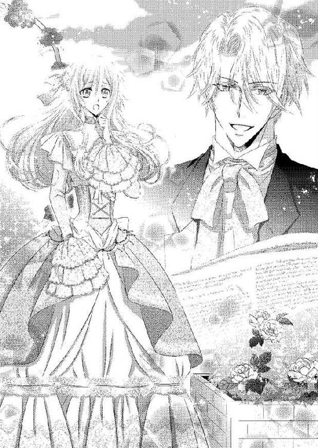
さらりと当たり前のように答えられて、リネットは目眩を覚えてしまう。ちょうど休憩の茶を持ってきたグレイが、苦笑しながら続けた。
「リネットさま、ジェラルドさまのお好きにさせてくださいませ。ジェラルドさまがとても楽しそうですから」
言葉の後半は、リネットにだけ聞こえるようにしたものだ。
そっと目を向ければ、ジェラルドは本当にグレイの言う通り楽しそうに仕立て屋と打ち合わせをしている。それを見ると、リネットも何も言えない。
（それに、嬉しいことに変わりはないわ）
「わかりました、グレイさん。ジェラルドさまのお好きなようにしていただいて結構です」
リネットからの許可を得たジェラルドに、制御というものはなかったらしい。それから夕方近くまで、仕立て屋はリネットのドレスや装飾品の打ち合わせをジェラルドとしていたのだった。
合間に仕事を挟みながらも、ジェラルドは始終楽しげだった。対してリネットの方は慣れない採寸でぐったりしてしまっている。
「いや、楽しみだ。すべて君に似合うものを選んだからね」
夕食まで、まだ間がある。グレイが用意してくれた茶を飲みながらジェラルドが楽しげに言うから、リネットも自然と笑みが零れた。
「私も楽しみです。でもあんなにたくさん作っていただいて......本当に申し訳ないです」
「気にすることはない。私の楽しみでもある。それに、明日には一着、届けてもらえることになっているから」
「......え!?」
そんなに早くドレスというものは出来上がるのだろうか。いや、きっと違う。リネットは仕立て屋が帰り際に少々青ざめていたのを思い出し、心の中で彼に謝った。
他愛もない話をジェラルドとする穏やかな時間が流れる。そのとき、グレイが少し強張った表情で姿を見せた。
「......ジェラルドさま」
呼びかける声も、いつもより強張っている。リネットはその様子から何かがあったことを感じ取り、ジェラルドに言った。
「ジェラルドさま、私のことはお気になさらないでください。お仕事でしょう？」
「......いや、客なんだ」
「お客さまですか？ だったらお待たせするのは......」
ジェラルドは少し迷ったように視線を彷徨わせたあと、リネットを見返す。どこか決意を感じる瞳に、リネットは思わず息を詰めた。
「君にも会って欲しい」
「わかりました」
拒むことはジェラルド自身をも拒むように思えて、リネットはすぐに頷いている。ジェラルドはリネットを連れて、グレイが案内した応接間に入った。
室内には美しい金髪の令嬢が座っている。リネットたちが姿を現わすとすぐに立ち上がり、スカートをつまんで腰を落とした。
丁寧で美しい礼だった。その仕草だけで、彼女が紛れもない貴族階級の令嬢であることを思い知らされる。
自分がジェラルドの隣にいることが、とても恥ずかしく感じられる。金髪の令嬢はジェラルドの隣に居るリネットを一度誰だろうと問いかけるように見たものの、すぐに優しい笑顔を浮かべた。
「こんにちは、ジェラルドさま。お客さまだったのですね。お邪魔して申し訳ございません」
「私は今、客人の接待中だ。何の用だ？」
普段の彼とは違う心ない態度に慌ててジェラルドを見上げると、彼はひどく冷たい瞳で彼女を見返していた。......リネットが背筋に冷たい汗を感じるほどの冷酷な瞳だった。
彼女は少し困ったように苦笑する。伏し目がちになった青い瞳に傷ついた光が宿るのを、リネットは見逃さない。
「......あ、あの......大丈夫ですから。邪魔なんかじゃありませんから......」
思わずそう言うと、令嬢は少し驚いたようにリネットを見返して、嬉しそうに笑った。
「お気遣いいただいてありがとうございます。ご挨拶が遅れてしまって申し訳ありません。私はアリシア・ランズベリーです」
「あ......私はリネット......」
「君の相手をしてやれる時間がない。今日は帰ってくれないか」
すぐさまジェラルドが割り込み、会話を遮る。リネットはジェラルドが放つ威圧感に息を呑み、口を噤むしかなかった。
「申し訳ありません。すぐに......この手紙を、お渡しに来ただけですから」
アリシアはそんなジェラルドの態度から歓迎されていないことを嫌でも感じ取ったのだろう。申し訳なさげに苦笑しながら、ハンドバッグから一通の封書を取り出してテーブルに置いた。
「お母さまからお預かりいたしました。明日の夜、当家で開かれるパーティの招待状です」
「明日の夜？ ずいぶんと急だな」
ジェラルドが封書を手に取る。その仕草に、アリシアがほっと安堵の息をつく。
「急なご招待で、申し訳ございません。母が、そうでもしないとジェラルドさまがお断りするかと心配していたので......」
自分のせいでパーティに出られないのならば、申し訳ない。リネットは慌てて言った。
「ジェラルドさま、私のことならばどうぞお気になさらないでください。私は一人でも大丈夫ですから」
「でしたらお客さまも、ジェラルドさまとご一緒にどうぞ」
リネットの言葉が救いになったかのように、アリシアが言ってくる。思ってもみなかった事態の転がりように、リネットは狼狽えた。
そんなつもりはまったくなかったし、何よりもジェラルドのような──貴族の中でも上流の彼が参加するようなパーティに出席など、したいとも思わない。作法など知らないし、緊張のあまり絶対に何か粗相をしてしまう！
「い、いえ、私は......っ!!」
「是非そうしてください」
断りを入れるよりも早く、アリシアは言い重ねてくる。どうしたらいいのかと困ってジェラルドを見上げると、彼は相変わらずの鉄面皮で言った。
「婚約者が招待したパーティに他の女性を同伴するのは、叔母上が許さないだろう」
「え......？」
ジェラルドの言葉にリネットは大きく目を見開く。
今、ジェラルドは何と言ったのか。それはジェラルドとアリシアが婚約者同士であるということか。
唇が震えそうになり、リネットは緩くそれを噛み締める。あり得ないことではない。
（ジェラルドさまのお歳やお立場を考えれば、そういった方がいないことの方がおかしいわ）
「......アリシア、君も叔母上が勝手に決めた男に嫁ぐことに何の疑問も抱かないのか。ただ血統を残すために、叔母上が父上に進言した婚約だぞ」
さらに続けられた事実に、リネットは息を飲む。二人の婚約は互いが望んだものではないのか。
「......私には、お母さまに逆らう力なんてありませんもの。ジェラルドさまには望まぬことで、申し訳ないとは思います......」
アリシアはどこか疲れたように微笑み、立ち上がった。
「お客さまがいらっしゃっているのに、申し訳ありませんでした。よろしければ是非、我が家のパーティにいらしてくださいませね」
リネットに変な気遣いをさせないためか、アリシアは明るい声で言う。リネットはどう返事をしたらいいのかわからず、ひとまず取りなすように笑顔を浮かべ返した。
グレイがアリシアを玄関ホールまで送っていく。ぱたん、と扉が閉まれば、応接室にはリネットとジェラルドの二人だけだ。
ジェラルドもアリシアと同じように疲れたようなため息をついて、ソファに深く沈み込んだ。
リネットはその隣に座り、気遣いの目を向ける。
「ああ......すまない。嫌なところを見せてしまったね」
「いいえ、大丈夫です。それよりもジェラルドさまの方が......」
「アリシアに罪はない。それはわかってる」
ジェラルドの手がリネットの手を握りしめてくる。ここでは変な誤解を生んでしまうかもしれないと思ったが、自分たち以外誰もいないことを理由にしてそのままにさせた。
「とても優しくて人のことを思いやる人だ。だがその優しい性格のために、叔母に利用されるばかりでもある。叔母は我が家の財産や権力を狙っていてね。アリシアを私の妻にしたいんだ。私が養子であるため、オールブライトの血を濃く残すことを理由に、叔母が自分の娘を婚約者として提案した。今のところ、私にそれを拒むことはできない。父上も、反論はできなくてね」
「政略結婚、ですか......」
「そうだ。私たち貴族は、家のために血を残す。想う相手と結ばれることの方が稀なんだ。それは、君もよくわかっているだろう？」
自分の両親が、その証の一つだ。リネットは頷くしかない。
貴族社会は様々なことで制約があるのだと、リネットは悲しくなってしまう。自分がことさら自由に生きているとは思わなかったが、こうして彼らの生活を垣間見ただけで自分は彼らよりもずっと自由に生きているとわかる。
（でも本当なら、私が背負わなければならないことだった......？）
カレンの身分が低いために、彼女はオールブライト家に迎え入れられなかった。だがこの家の直系の血は、リネットに受け継げられている。
本当ならばジェラルドのこの息苦しいような生活も、自分が受けるべきものだったのではないか。
「ジェラルドさま、私......」
「君のせいではないよ」
リネットの言いたいことがわかっているかのように、ジェラルドが先回りする。リネットはジェラルドとつないだ手に、力を込めた。
「でも、私......」
「君がもっとも君らしく居られるところを、私は選んで欲しいと思ってる。そのためには私自身がどうなろうと構わないんだ」
ジェラルドはそう言って、リネットの頭に軽くくちづけてくれる。
（でも、どうしてそんなにまでして......）
幼い頃に彼の手助けをし、その後は遊びに来てくれる彼に自分たちなりのもてなしをしただけだ。それなのにこの尽くしようは、行き過ぎているようにも思える。
自分は、ジェラルドにそんなにまでしてもらえるほどの人物ではないのに。
（優しい人だから）
「ジェラルドさま。先ほどのアリシアさまとのやり取り......わざと冷たくなさってますよね？」
ジェラルドは微笑んだまま答えない。その仕草が何よりもリネットへの答えになっていた。
「アリシアさまの方からジェラルドさまを嫌がってくれるといいと思ってるいらっしゃるんでしょう？ ジェラルドさま側からお断りすると、色々と角が立ちますし」
「君が思いたいように思ってくれていい」
ジェラルドははぐらかすように続けるだけで、答えを教えてはくれない。だがそれもジェラルドらしいと、リネットは笑った。
「ジェラルドさま、パーティには行きましょう。アリシアさまが折角誘ってくださったんですし、私、そういうパーティは見たことがないんです」
ジェラルドが悪く言われないようにするためには、やはり誘われたパーティには参加するのが無難だろう。自分と一緒にいることで何か詮索されるかもしれないが、もとより何もないのだから問題はないはずだ。
自分はレイモンドに会ってカレンを見舞ってほしいとお願いできれば、オールブライト家を去る人間だ。
（それに......これは私のわがままだけれど、母さんのところに戻るまでに、ジェラルドさまのいろんな顔を見たいの）
ジェラルドは観念したように軽く肩を竦め、リネットの髪を撫でた。
「君が私のことを気遣って言ってくれていることがよくわかる。優しい人だ」
ジェラルドの緑の瞳が、眩しげに細められる。その眼差しに言いようのない甘さが感じられて、リネットの心はときめいた。
それを気づかれないようにしながら、リネットは笑って言う。
「何を仰っているのか、わかりませんわ」
パーティに参加すると決めたとはいえ、作法などさっぱりわからない。付け焼き刃だとわかってはいるがジェラルドにできる限り恥をかかせたくはなくて、リネットはグレイに最低限のマナーを教えてもらった。
昨日来た仕立て屋が、出来上がったドレスを一着持ってきてくれたので、それを着ることにする。昨日のドレスとは違い、身体にぴったりと合ったものでとても着心地がよかった。
パーティ用ということで、襟元が大きく開かれている。藍色を主にしたドレスはバッスルスタイルで、リネットには少し大人っぽい。袖がないドレスのため、同色の長手袋を着ける。髪も高い位置にまとめ上げて、ダイヤがついたピンを刺した。その他にも大粒のダイヤを一粒だけ鎖で繋いだネックレスと、同じダイヤ粒のイヤリングを着ける。
こうしたドレスに身を包んでいると、とりあえず格好だけは恥ずかしくない令嬢に見える。鏡の中の自分が相変わらず戸惑った表情をしていることに気づき、演技でも堂々としなければと気をつけながら、別室で待ってくれていたジェラルドと合流した。
グレイに手を引かれて姿を見せたリネットを、ジェラルドはとても嬉しそうに──眩しげに見返した。
「とても、素敵だ。昨日の君も綺麗だったけれど、今日の君はもっと綺麗だ」
「ド、ドレスが、素敵だから......」
「いや、君自身が素敵だからだよ」
手放しの褒め言葉は行き過ぎのような気がしたが、やはり嬉しい。リネットはほんのりと頰を染め、照れくささから俯き加減になってしまう。
ジェラルドはそんなリネットの手を取り、玄関ポーチに向かった。
「今日のパーティは内輪のものだから、リネットも気軽にしていていい。君を私の客人だとアリシアも言っているはずだから、心配することはない」
自分のためにジェラルドが気配りをしてくれたことが嬉しく、同時に申し訳ない。
「色々と気を遣わせてしまってすみません、ジェラルドさま」
「気にしなくていい。君と一緒にパーティに行けるなんて思わなかったから、私はとても楽しいよ。君を思う存分着飾らせてあげられるしね」
「む、無駄遣いはいけません！」
今夜の格好にもどれだけのお金がかかったのかと思うと、リネットは気が遠くなりそうだ。これ以上ジェラルドに負担をかけたくないのに、彼はまったく聞くつもりがないらしい。
「オールブライト家の資産には、何の影響もないよ」
「それでも、です！ 人はそれぞれ相応のお金を使用すればいいんです！」
「そうだな。君の言う通りだ」
リネットの言葉に感じ入ったように、ジェラルドは頷く。何がジェラルドの心に響いたのかわからなかったが、ひとまず考え直してくれたことにホッとした。
オールブライト家の馬車に乗り、ランズベリー家へと向かう。内輪のパーティだと聞いたが馬車はもう十台近く停まっていた。
案内人の召使いがジェラルドの姿を見つけると、すぐに案内してくれる。名乗らずともジェラルドの顔はこの家では誰もがわかっているらしい。ただ、同行しているリネットに対しては訝しげな目を向けられてしまったが。
自分が場違いである自覚が、急激にやって来る。ジェラルドのおかげでごまかすことができていたが、そんなに上手くはいかないらしい。
心が萎縮してしまいそうになると、ジェラルドがきゅっ、と、手を握りしめてくれる。
（だ、大丈夫。ジェラルドさまが一緒にいてくださるんだから）
ランズベリーの館はオールブライトに比べれば小さい。それでもリネットからすれば、豪邸だ。
整えられた庭に面したホールが会場となっていて、華やかさに目がチカチカしてしまいそうになる。
正装姿の貴族階級の面々たちは、それぞれに流行を追いかけたお洒落をしている。特に女性たちの華やかさには圧倒されるほどだ。
室内楽を奏でる楽団たちも、天井から下げられているシャンデリアのきらめきも、テーブルに用意されている料理の数々、グラスに満たされているシャンパンやワインの色合いも、リネットにしてみれば別世界に入り込んでしまったようだ。
今更のようにスカートの下の足が、がくがくと震えてくる。加えてジェラルドが姿を見せると皆の注目が集まり、それだけ彼の人気の高さを実感すると同時に──リネットへの不審の視線も感じられてしまう。
（だ、駄目よ、リネット。ここでオドオドしてしまったら、ジェラルドさまに恥をかかせてしまうわ！ 私は今、貴族令嬢なのよ！）
はったりでも何でも、ジェラルドに迷惑をかけないようにするためならば、やれる。リネットは踵に力を入れ、笑顔を浮かべた。
（お喋りはジェラルドさまにお任せして、私はこうやって笑っていればひとまず大丈夫のはず......）
顔なじみと思われる者たちが、次々とジェラルドの前に歩み寄ってきて挨拶をしてくる。ジェラルドは表面上はにこやかに接しているものの、リネットの知る彼に比べればひどく儀礼的だった。
特に少しでもリネットに話しかけようとすると、冷酷さも加えて対応してくる。おかげで次の会話が続かず、ひどく気まずい思いで立ち去らざるをえない者もいた。大抵それは、異性なのだが。
（そもそも女の方は、私がジェラルドさまの何なのかを知りたいだけみたいだし......）
一通りの挨拶が終わると、ジェラルドはリネットに近くを通りかかった召使いのトレーから取り上げたグラスを差し出した。
「落ち着かなくてすまない。疲れなかったかい？」
グラスを受け取りながら、リネットは笑い返した。
「私は大丈夫です。それよりも私......粗相とかしてませんか？」
「まったく問題ない。それに、ここにいる誰よりも綺麗だ」
「ほ、褒めすぎです......」
照れくささに身悶えしそうだが、ジェラルドの纏う空気が先ほどよりも柔らかくなったから良しとする。誰も話しかけてこないことを幸い、リネットはジェラルドとの他愛もない話を交わした。
しばらくそうしていると、ジェラルドの空気がまた硬質なものに変わった。さりげなく守るようにリネットを背にしたジェラルドのところに、一人の女性が歩み寄ってくる。
カレンと同じくらいの年頃だろうか。だがカレンとはまったく違い、顔立ちは美しく整っているものの、表情も眼差しもキツい。
（誰......？）
とりあえず、ジェラルドとは面識がありそうだ。リネットは無難に貴族の令嬢としての礼をする。
彼女はそんなリネットを冷たく一瞥しただけで、すぐにジェラルドに向き直ると眦を釣り上げた。
「ジェラルド、これはどういうことなの。婚約者がいるパーティに別の女を連れてくるなんて、非常識だとは思わないの？」
怒鳴りつけるほどではなかったが、怒りの空気は感じられる。自分のせいでジェラルドに迷惑をかけてしまっていることを突きつけられ、リネットは慌てて謝ろうとした。
だがそれよりも早く、ジェラルドが辛辣に返す。
「非常識なのは叔母上でしょう。こんなところで声を荒立てたりすれば、何事かと思われます。アリシアにも妙な勘繰りを入れられてしまうのでは？」
「......っ」
視線で刺し殺しそうな鋭い瞳で、彼女はジェラルドを睨みつける。だが直後には笑顔の仮面を着け、その変わりようにリネットは圧倒されてしまい、すぐには何かを言うことができなかった。
「初めて見るお顔のようね。ようこそ」
リネットは慌ててスカートを摘み直し、軽く腰を落とす。
「お、お招きいただきましてありがとうございます」
「こちらは私の叔母のソフィーだ。アリシアの母親だよ」
言われてみれば、目元や鼻筋に面影が重なる。だがアリシアの柔らかく優しい雰囲気からは真逆の空気を感じるため、すぐには親子だとわからなかった。
「......それで、こちらの方は？」
さっさと名乗れと急かされているように思え、慌ててリネットは唇を動かそうとする。しかしながら今度はアリシアの呼び声が遮ってきた。
「まあ、リネット！ 来てくれたのね!!」
出鼻を挫かれて声を見返せば、ペールグリーン色のドレスを着たアリシアがこちらに小走りに走り寄ってくる。リネットの隣に並ぶと、満面の笑みを浮かべた。
「会えて嬉しいわ。ねえ、こちらにいらして。女同士のおしゃべりをしましょう！」
少々強引にアリシアはリネットの腕を取り、ジェラルドたちから引き離そうとする。アリシアの意図がわからず、リネットは戸惑うばかりだ。
「あ、あの、でも......」
「ジェラルドさまばかりリネットを独占するのはずるいですわ。いいでしょう？」
ジェラルドは特に反論しない。代わりにソフィーが怒りを滲ませた声で言った。
「アリシア、しっかりしなさい。自分の婚約者が異性を連れてきているのですよ」
「あら、お母さま、お気になさることはありません。リネットはジェラルドさまが大変お世話になっている方のご令嬢で、私ともお友だちなんですよ」
ねえ？ とにこやかに同意を促され、リネットはわけがわからないながらも頷いた。
「ですからお母さまが心配されることはないんです。さあ、リネット。あそこに美味しいお菓子があるの。行きましょう」
「あ、あの、失礼します」
半ば引きずられるようにして、リネットはアリシアについていく。
ジェラルドが何も言わないところを見ると、アリシアにされるがままになるのが今は一番いいのだろう。ソフィーが慌てて娘を呼び止めようとするのを、ジェラルドが会話で止めていた。
正直な気持ちを言えば、助かった。ソフィーの威圧的な態度と、こちらを明らかに敵対視している瞳に長時間も晒されることは、ジェラルドのためならば耐えるつもりとはいえ、慣れない環境ではくじけてしまいそうになる。
アリシアはリネットを空いている長ソファに座らせた。会場内を歩いていた召使いのトレーからグラスを二つ取って、片方を渡してくれる。
礼を言って受け取り、一口を飲む。冷たいシャンパンのフルーティな香りが喉を滑り落ちると、ほっとした。
「強引に、ごめんなさい」
「いえ、大丈夫です。むしろ助かりました。私、ソフィーさまにはあまり好かれていないような感じがしたので......」
ソフィーの立場を考えれば、当然のことだろう。リネットは思わず正直に答えてしまい、ハッと我に返る。これでは正直になり過ぎで、アリシアに失礼だ。
「す、すみません......っ！」
慌てて謝ると、アリシアは困ったように笑いながら首を振った。
「いいの。失礼なことをしたのは、お母さまの方だわ。ごめんなさい、あなたに嫌な想いをさせてしまって」
アリシアがぺこりと頭を下げてくる。身分的なことを考えればアリシアがそんなことまでしなくていいのにと、リネットは慌てて言った。
「や、やめてください、アリシアさま！ 私は大丈夫ですから」
「......お母さまは、ジェラルドさまの傍に私以外の女性がいることがとても嫌なの」
顔を上げながら、アリシアが呟く。幸いこちらに話しかけてくる者もいなかったため、リネットはグラスをテーブルに置いてアリシアに向き直った。
「それは仕方のないことです。ジェラルドさまの婚約者はアリシアさまで、ソフィーさまはアリシアさまのお母さまですから。アリシアさまの立場が危うくなりそうな人がいれば、心配されるのも当然です」
リネットの誠実な慰めの言葉に、アリシアはしかしあまり晴れやかな顔にはならない。
「あなたは優しいわ、リネット。ジェラルドさまが大切にされるのもよくわかるわ」
「あの方がまだ少年だった頃に、私の母が少しだけお助けしただけです。ジェラルドさまはお優しい方ですから......その恩を今でも大事にしてくださっていて、私なんかにも色々と気を配ってくださるだけなんですよ」
あの出会いの出来事がなければ、ジェラルドとの関わりが生まれることもなかった。自分の生まれも知らず、カレンの愛情をたっぷりともらって普通の村娘として一生を終える。元々がそういう人生なのだから、たとえジェラルドに想いを抱いていても何かを望むつもりはない。
「リネット......オールブライト家は伝統と歴史もあり、国王陛下から非公式の仕事も任せられるほどの家なの」
「......はい」
だからジェラルドはいつも忙しくしているのか。......それなのにここ数日は自分に付きっきりになっているが、大丈夫なのだろうか。
「私......オールブライト公爵夫人には、なりたくないの......」
誰かに聞かれないようにするため、アリシアの声は小さい。
「ア、アリシアさま......？」
「私では、そんな大役は担えないわ。ジェラルドさまの手助けなんて到底できないし、ジェラルドさまの御心に安らぎを与えることもできない。お母さまはオールブライト家の利権が欲しいだけで、私を......っ」
声は小さかったが、アリシアの憂いが溢れ出しそうになる。恐らくは立場上、誰にも言えなかったことなのだろう。
自分は通り過ぎていくだけの人物だから、言ってしまったのかもしれない。
（ああ......ジェラルドさまたちは、大変なんだわ......）
多くを持っている者が幸せとは限らない。何もなくとも、幸せになることはできる。
リネットはアリシアの両手を、包み込むようにそっと握りしめた。
「アリシアさま、大丈夫です。ジェラルドさまは優しい方ですから......一度、その気持ちをお話ししてみたらどうでしょう？ きっと良い助言をくださると思います」
「そんなこと......できないわ。ジェラルドさまはこの政略結婚を嫌がっていらっしゃるのよ」
「でも、アリシアさまに冷たくなさっているのは、わざとだと思います。アリシアさまのことを思えば、家のために望まぬ結婚をしないように......」
そこまで言ってから、リネットはもう一つの可能性に気づく。もしやジェラルドはアリシアのこうした気持ちにも気づいているのではないか。
そう言うと、アリシアは驚きに目を見張ったあと──柔らかく微笑んだ。
「あなたは本当に......ジェラルドさまのことをよく知っているのね」
「そ、そんなことは......」
「あなたみたいな人がジェラルドさまのお傍にいるのが一番いいと思うわ」
リネットは慌てて首を振る。
「私は、ただの村娘ですから！」
母方の身分を継いだとしても、男爵だ。公爵のジェラルドには不相応だ。
「残念だわ......本当に」
「ありがとうございます......」
複雑な気持ちでリネットは取り敢えず礼を言う。今のリネットには、このくらいしか言えなかった。
リネットに胸の内を吐き出せて少しスッキリしたのか、アリシアは笑顔を取り戻す。
「あなたがジェラルドさまと結ばれることがあったら、私、いつでも身を引くわ」
「そんなことはありえません」
「可能性の話よ。もしも、くらいは夢見てもいいでしょう？」
アリシアが笑いながら反論する。解れた笑顔は柔らかく穏やかで、アリシアの人の好さを表して魅力的だった。
「ねえ、リネット。よかったら、私とお友だちになってくださらない？」
「そんなこと......いけません！」
「ジェラルドさまの大切な人だもの。それに、リネットといると何だかとても心地いいの」
（友だち）
アリシアの申し出は、リネットにはとても嬉しいことだった。まだ少しの間しか会っていなくとも、アリシアの心の優しさが感じられる。
リネットはアリシアに微笑みかけた。
「私なんかでよろしければ......」
「嬉しい！ 私、年頃のお友だちがあまりいなかったから」
アリシアはリネットの両手を握りしめ、本当に嬉しそうに言う。別に女性たちに嫌われるような性格はしていないのに、友だちが少ないとは不思議だ。
リネットの表情から、心の問いかけに気づいたのだろう。アリシアは少し困ったように笑った。
「......私は、ジェラルドさまの婚約者だから」
貴族の令嬢ならば、誰もがジェラルドの妻の座を望み、狙うのだろう。そんな彼女たちにとってアリシアは、最大のライバルだ。邪魔な存在でしかないが、そんな理由でアリシアを嫌っているなんて。
リネットはアリシアを励ます気持ちをこめて、手に力を加える。
「アリシアさまは優しくて素敵な方です。それなのに友だちになれる機会を自分の方から消してしまってるなんて、とてももったいないと思います」
リネットの熱がこもった言葉を聞いて、アリシアは少し驚いたように目を見開いた。だがすぐに嬉しそうに笑い返してくれる。
「ありがとう、リネット。リネットがそう言ってくれると、不思議と力が湧いてくるわ」
「す、すみません、生意気なことを言って......」
「いいえ。だからジェラルドさまがあなたを大切にするのね」
そんなことはないと反論するより早く、アリシアが立ち上がった。アリシアの方をちらちらと見ている青年がいたからだ。
「少し、踊ってくるわ。リネットはここに座っていれば大丈夫よ。きっともうすぐジェラルドさまも戻ってこられると思うし」
結構な数の女性陣に囲まれていたのだ。そんなすぐに彼女たちがジェラルドを解放するとは思えない。
だがリネットの予想に反し、アリシアが席を離れてからしばらくして、ジェラルドが戻ってきた。
「大丈夫か？ 何もなかったか？」
あまりの早さに驚いてしまいながらも、リネットは首を振る。
「アリシアさまが一緒にいてくださったので......あ、あの、よろしいのですか？」
ジェラルドがリネットの隣に腰を下ろし、新しい飲み物を召使いから貰う。リネットには今度はアルコールが入っていない飲み物を渡してくれた。
搾りたてのブラッドオレンジのジュースだ。ほんの少しだけ苦味が感じられて爽やかだ。
「アルコールは念のため、止めておこう。強い方ではないだろうからね」
確かに、ジェラルドの言う通りだ。そんなところにまで気を遣ってくれることが、嬉しい。
ジェラルドの方は、シャンパンを口にしている。グラスを傾ける仕草も優美で、リネットは思わず見惚れてしまった。
ジェラルドが視線に気づいたのか、こちらを見返してくる。急に気恥ずかしくなり、リネットは慌てて視線を逸らした。
「それで、何がいいのかって？」
会話を中途半端に止めてしまっていたことに気づき、リネットは慌てて続ける。
「ジェラルドさまとお話しされたい方がたくさんいらっしゃいましたから......その方々のことは放っておいていいのかと」
ジェラルドにも、外交的な付き合いはあるはずだ。それが自分のせいで疎かになるのは申し訳ない。
しかしジェラルドは何でもないと笑う。
「隙あらば第二夫人にでもしてもらおうとしているご令嬢ばかりだ。まともに全部相手をしていたら、このパーティが終わる時間になっても解放されない」
ジェラルドの答えにリネットは唖然としてしまう。
第二夫人と言えば聞こえはいいが、その実は愛人だ。それでもいいと言うほどに、ジェラルドの傍にいることは魅力的なのだろう。日陰者でもいいからと言われるほどにジェラルドには女性がやってくることに気づかされて、リネットは胸に痛みを覚える。
（それだけ、ジェラルドさまは素敵な方だから......）
「彼女たちの相手をしているくらいだったら、君の傍にいたい」
当たり前のように、ジェラルドが言う。リネットはほんのりと頬を染めた。
「せっかくのパーティなんですから、アリシアさまと踊ってきたら......」
「残念ながら、今はそういう気分じゃないんだ。少しゆっくりしたい」
「まるでアリシアを誘いたくないような言い方ね」
リネットたちの背後から、棘を含んだソフィーの声が上がる。心臓が飛び上がってしまいそうなほどドキリとして振り返れば、優雅な歩き方でこちらにソフィーが近づいてきていた。
ジェラルドは堅い笑顔を浮かべる。
「背後から盗み聞きですか、叔母上。いい趣味とは言えませんが」
「娘の婚約者に変な虫がつかないように見張っていただけです。あなたがアリシアを大事にしないから、私がこんなことをする羽目になっているのよ」
すべての原因はジェラルドにあるというような口ぶりだ。リネットは何とか反論しようとして、慌てて口を噤む。自分がここで下手に言葉を挟んだせいで、ジェラルドの立場が悪くなるのは嫌だ。
ジェラルドはリネットに一度目配せし、安心させるように微笑んだ。染み入るような微笑に、心が温かくなる。
ソフィーはリネットへと目を向ける。アリシアとは正反対のきつい眼差しが、リネットの姿を値踏みするかのように見つめてきた。
「あなた、どこのご令嬢かしら？ さきほどは聞き忘れてしまったから」
やはり聞かれるのか、と思いつつ、リネットはジェラルドを見る。ジェラルドが軽く頷き、代わりに答えた。
「リネットはどこの令嬢でもありません。私が困っていたときに助けてくれた、とても心優しい娘さんです。それからずっと、私に癒しを与えてくれる方だ」
それはいくらなんでも誇張しすぎだと、リネットは焦ってジェラルドを止めようとする。だがジェラルドはまったく構わない。
答えを聞いたソフィーは一瞬ぽかん......とした表情になったあと──眦を釣り上げた。
「どういうことなの、ジェラルド。あなた、貴族でもない娘に入れ込んでいるというの？」
パーティの真っ最中のため、かろうじて怒鳴りつけることは防げたという感じだ。抑えられた声には、リネットへの敵意はもちろんのこと、ジェラルドへの憤りも感じる。リネットはせめてジェラルドが悪く思われないように弁明しようとするが、上手く言葉が出てこない。
「あ、あの、あの......ジェラルドさまと私は、変な関係ではなくて......」
「お前に聞いていないわ、黙りなさい」
ひどく威圧的な声は、リネットを萎縮させるに十分だった。リネットはドレスのスカートをぎゅっ、と強く握りしめる。
（ジェラルドさまは、何も悪くないのに......！）
ひどく申し訳ない気持ちでジェラルドを見れば、こちらは大した痛手も覚えていないらしく、実に涼しげな顔をしている。
「リネットに失礼なことは言わないでいただきたい。彼女は私の大切な人なんです」
「貴族の娘でもない者に入れ込んでいるとでも？ 嘆かわしいわ、ジェラルド。平民の血をこのオールブライト家に入れることは、絶対に許しませんよ。それでなくとも、あなた自身がオールブライトの後継ぎとしては至っていないのですからね」
ソフィーの言葉は、ジェラルドまでも貶めるものだった。リネットは、思わずソフィーに言い返してしまっている。
「今のお言葉、取り消してください」
強い口調のリネットに、ソフィーは少し驚いて目を見張る。だがすぐに、小馬鹿にしたように軽く鼻を鳴らした。
「取り消す必要はないわ。ジェラルドはそもそも、オールブライト家の養子で、兄様の血は一切継いでいないのよ。血の濃さからいったら、アリシアの方が後継ぎには相応しいの」
「血の濃さなんて関係ありません。オールブライト家を守り、その役目をきちんと果たせることが後継者の資質だと思います。ジェラルドさまは、ご自分のお役目をきちんと果たしています！」
「......っ」
リネットの勢いに圧されて、ソフィーが軽く上体を引く。リネットは先ほどまでの萎縮感を押しのけ、ソフィーをまっすぐに見返した。ジェラルドのことを馬鹿にされることが、とにかく嫌だった。
「......あなた、ジェラルドの妻の座を狙っているの？」
不信感に眉根を寄せて、ソフィーが問いかける。どうしてそうなるのかと、リネットは赤くなりながら言い返した。
「そんなこと......考えていません！」
「あら、そうなの。あわよくば、とでも考えているのかと思ったわ。そうでなければそんなに必死になるのもおかしいし」
リネットはソフィーの言葉に、さらに呆然としてしまう。誰かのために必死になることは、すべて損得によるものだと思っている言葉だ。
（それとも貴族って......こういうものなの......？）
だとしたら、何とも虚しい。リネットは悲しい気持ちで口を噤む。
言い負かせたとでも思ったのか、ソフィーが勝ち誇った笑みを浮かべた。
「でも、残念ね。お前では初めからアリシアとは勝負にならないわ。アリシア以外の者を妻にするには、あの指輪を持つ娘でなければならないもの」
（指輪......？）
ソフィーの言うものとは違うとは思うが、母親から譲り受けたものがリネットの胸にはある。ドレスの胸元を、リネットはそっと掌で押さえた。
「ジェラルド、もう諦めてしまった方がいいわよ」
「ご忠告ありがとうございます。ですが、不要なものですね。叔母上、あなたの方こそ、娘の本当の幸せとは何なのかを考えた方がいいのではありませんか？」
「考えているからお前を諌めているのよ」
ソフィーの返しにジェラルドは大きくため息をつく。
「やれやれ、叔母上のご機嫌を損ねてしまったようだ。これ以上叱られないうちに、姿を消させていただこうか」
ジェラルドがリネットの手を取り、立ち上がらせる。促されて断る理由もなく、リネットは従った。ソフィーの傍に居続けることは、結構な精神力を使用する。
「ジェラルド、まだ話は終わってな......」
「私の方はもうありません」
キッパリと冷酷なまでに言い切って、ジェラルドはリネットの手を引きダンスの輪の中に入っていく。ダンスはひとまずワルツのステップを習ったが、付け焼き刃のそれではきちんと踊れるわけもない。
「ジェラルドさま、私、ダンスは......！」
ジェラルドに恥をかかせたくなくて、リネットは慌てて言う。ジェラルドは小さく笑い、リネットの腰に片腕を絡めて引き寄せた。
「君なら大丈夫だ。さあ」
ジェラルドがリネットの手を取って一歩を踏み出す。不安でいっぱいになりためらってしまったリネットだったが──ジェラルドが動き出すと驚くほど軽やかに動けた。
少しぎこちないステップも、ジェラルドのリードで止まることはない。それどころか、ジェラルドと動きを重ねるにつれて、リネットの動きもよくなっていく。
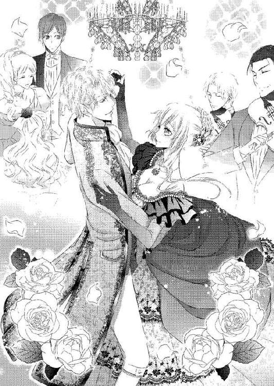
『リネットさま、ダンスを踊らなけれはならなくなってしまったときは、ジェラルドさまにすべてをお任せください。本来、男性のリードが完璧ならば何となくでも踊れてしまうのです』──グレイが教えてくれた言葉が思い出される。
（それが、こういうことなのね......！）
だんだん楽しくなってきて、リネットの頰に満面の笑みが浮かんだ。それを見て、ジェラルドも楽しそうに笑い返してくれる。二人のワルツを見ている側も、同じ気持ちになってくる感じだった。
シャンデリアのきらめき、淑女たちの色とりどりのドレス、舌が蕩けてしまいそうな食事に品のある笑い声、ワルツの演奏──まるで、何かの物語の中に入り込んでしまったかのようだ。
「リネット、少しは楽しんでくれているかい？」
「はい！ とっても！」
リネットの言葉を聞いて、ジェラルドが少しほっとしたように息を吐く。もしかしたらソフィーの件を、申し訳なく思ったのかもしれない。
（ジェラルドさまのせいじゃないのに）
「ジェラルドさまは、楽しいですか？ お相手が、私ですけど......」
「パーティに参加して楽しいなんて思ったのは、今回が初めてだ」
ジェラルドの答えに、リネットはさらに笑みを深める。
きっと今夜限りの夢だ。ジェラルドがそう言ってくれれば、嬉しい。
「でしたらもっと楽しみましょう、ジェラルドさま。折角の素敵な時間なのに、勿体無いです。私はジェラルドさまが楽しそうにしているところを、もっとたくさん見たいです」
「君は本当に......」
ジェラルドが、何かに感じ入った声を発する。その後に言葉が続いたように思えたが、楽団の近くに近づいたため、楽曲で聞こえなかった。
アリシアとその後も合流し、楽しいおしゃべりの時間も過ごす。アリシアはジェラルドと二人きりだと気後れと緊張からろくな会話が生まれないようだったが、リネットが間に入るとそれも随分解消されるらしい。
ジェラルドと話すというよりは、リネットを介して彼と話している感じだ。互いに望んでいないとはいっても婚約者同士なのに、これでいいのかと心配になる。
（婚約者......）
今更のようにその事実を思い、リネットの胸がツキリと痛んだ。
だが、そんなことで胸を痛めるのはお門違いだろう。自分はオールブライト家の令嬢として名乗りをあげるつもりはないのだから。
今更名乗りを上げても、オールブライト家も困るだろう。そもそも父であるレイモンドは、カレンが自分の血を継ぐ子を産んだことも知っているのかどうかわからないのだ。
（私の存在はもしかして、オールブライト家にとってはいない方がいいのかしら......）
知らずに後ろ向きな考えになってしまい、リネットは慌てて首を振る。馬車の手配を召使いに言いにいったジェラルドが戻ってきたら、自分の落ち込んだ表情にすぐに気づいて、とても心配するだろう。
リネットは少し落ち着いたところに行きたくなり、バルコニーへと目を向ける。一緒にいたアリシアが問いかけてきた。
「リネット、どうしたの？」
「あ......ちょっと、新鮮な空気が吸いたくなって」
「まあ......人酔いでもしたのかしら。大丈夫？」
アリシアの優しさに、リネットは微笑む。
「少し外の空気を吸えば大丈夫です。席を外しますね」
「わかったわ。気をつけて」
バルコニーに出ると、パーティ会場とは世界が変わったような感じになる。ざわめきが遠くなり、人がいないためか空気も澄んで少し冷たく感じる。大きく息を吸い込むと、胸の中が浄化されていくようだ。
（興奮してるのかな......）
今夜のことは、いつものリネットの日常では決して経験できないことばかりだ。ジェラルドにどこかのお姫さまのように扱われて、今まで以上にドキドキした。少しは落ち着かないと、とリネットは外気を大きく吸い込む。
しばらくそうしていると、火照った心も落ち着いてきた。リネットは頃合いを見て、アリシアのところに戻ろうとする。すると、バルコニーに正装の青年が踏み込んできた。
ジェラルドもアリシアもいないため、一人で彼の対応ができるのかと不安になる。少なくともジェラルドに迷惑をかけないようにしなければ。
リネットは挨拶をして青年の前から立ち去ろうとする。
グレイの教えに、こういうところで異性と二人きりになるべきではないと言われている。貴族階級のマナーには、リネットの知らないことがおそらくまだ沢山あるのだろう。
慣れないヒールで立ち去ろうとしたところ、青年が腕を掴んできた。あまりにも突然のことにリネットは驚き、思わずその手を振り払ってしまいそうになる。
だがすぐにジェラルドの姿が思い浮かび、堪える。もしもジェラルドの知り合いだとしたら、失礼なことをしてしまうことになるからだ。
青年と向き合ったリネットは、こちらをじっと見つめられて肩を縮めた。
「あ、あの......？」
「あ......これは、失礼！ 間近で拝見すると美しさがひとしおで、見惚れてしまいました」
「......」
歯の浮くような台詞とは、こういうことを言うのではないだろうか。美しいのはジェラルドが用意してくれたドレスだと思うリネットには、青年の言葉は過剰な褒め言葉にしか聞こえない。
リネットは小さく笑って首を振った。
「褒めてくださって、ありがとうございます。過分なお言葉......恐縮です」
「何と謙虚なお心だ。姿だけではなく内面も美しいのですね」
ここまで言われてしまうとどう反応すればいいのかわからない。褒めてもらっているのだが、青年の言葉は芝居かかっていて、抵抗というか──疑惑を抱いてしまうのだ。
「あ、ありがとうございます。あの、手を......」
「ジェラルド殿とご一緒にいましたよね？」
さすがジェラルドだ。注目されていたのは異性からだけではなかったらしい。
「はい。今回、特別にご一緒させていただきました」
リネットを見つめていた青年が掴む手に、力が込もる。
「あなたはジェラルド殿の恋人なのかな？」
リネットは軽く目を見張る。ジェラルドにアリシアという決められた婚約者がいることを、知らないのだろうか？
「ジェラルドさまにはアリシアさまという婚約者がいらっしゃいます。私は恋人などではありません」
「そうですか。今晩の約束は入っていないのですね？」
約束とは何のことか。青年との会話が噛み合わず、リネットは訝しげに眉根を寄せる。
「このまま、帰らせていただきますけど......」
「それは勿体無いですよ。僕と楽しい夜を過ごしましょう」
「あ......っ」
強く腕を引かれ、リネットは青年の胸に倒れ込む。慣れないヒールのせいで足首を捻り、小さな痛みが走った。
慌てて上体を起こそうとするが、青年はリネットの身体を抱きしめている。初対面の異性に突然こんなことをされて、リネットは動揺した。
「あなたに目をつけていたんですよ。多分、それは僕だけじゃない。ダンスに誘ってみようと思ったのにジェラルド殿が傍をなかなか離れないから......」
青年の唇が頭頂に触れ、リネットは身震いした。
（気持ち悪い......！）
「ジェラルド殿の愛人の座を狙っているのでしょう？ あなたはとても魅力的だ......僕と一晩、楽しみましょう」
青年の言葉に、リネットは茫然とする。これは──リネットを娼婦か何かのように見ている言葉ではないか。
青年の手がゆっくりと怪しげに、腰や背中を撫でてくる。リネットは弾かれたように身を捩り、青年の抱擁から逃れようとした。
「誤解です！ 私はそういうことを望んでいません！」
「純情ぶるのもいいですね。それとも火遊びは初めてですか？ 一度覚えてしまうと、なかなかにいいもので......」
「──その子は諸侯の下賎な遊びにお付き合いできる子ではないんだが」
地面を這ってくるような、低い響きの声が届く。リネットの腕を掴んでいた指が、直後に離れた。
青年はひどく気まずそうな顔をして、リネットから一歩離れる。
肩越しに見返せば、ジェラルドがやって来る。その瞳は鋭く、青年を酷薄に睨みつけていた。
リネットですら、身震いしてしまう恐ろしさだ。だがジェラルドの姿に、ホッとする。
ジェラルドはリネットの傍で足を止めた。
「その子は私の大切な人だ。私は自分が気に入っている人を横から掠め取られるのは好きではないが？」
「掠め取るだなんて......滅相もありません。少し酒が過ぎたようです。失礼」
ある意味修羅場のような状況ではあったが、青年は結構落ち着いた口調で言って立ち去っていく。こうした言い訳に慣れているような感じだ。
（それとも......こういうことは、貴族の方たちには普通なことなの......？）
席を外すと告げたときにわざわざ気をつけてと言ってきたアリシアの警告が、胸に蘇る。そうならば、あの警告も当然だ。
「リネット、大丈夫かい？ 何もされていないか？」
ジェラルドがすぐに手を差し伸べて、問いかけてくる。本当は泣きたくなるほどにホッとしているのだが、リネットは笑顔を浮かべてその手を取った。
「大丈夫です。ただ少しからかわれただけで......あっ」
足首に小さな痛みが走り、リネットの身体がよろめいた。とっさにジェラルドが抱き留めてくれる。
「どうした!?」
「あ......大丈夫です。さっき少し足を捻ってしまって......ヒールのある靴を履いたことがなかったから......恥かしいです」
この靴に慣れていないことが、ジェラルドと住む世界が違うことを教えているようだ。
（いくら貴族の血が流れているといわれても、生活してきた世界が違いすぎていたら......やっぱり令嬢になんてなれないわ）
リネットが大丈夫だと改めて笑いかけようとした直後、ジェラルドが軽々と横抱きに抱き上げてきた。突然のことに驚いて、リネットはジェラルドの首にしがみついてしまう。
「このまま帰ろう。酷くなってからでは遅い」
「だ、大丈夫です！ ほんの少し捻っただけですから......！」
あまり大袈裟にしたら、アリシアが心配する。なのにジェラルドはリネットを降ろす気配がまったくなく、そのままホールに戻ってしまう。
ジェラルドの姿に視線が集まったのはすぐのことだ。興味、嫉妬、羨望など、様々な感情を含んだ視線を全身に浴びてリネットはひどく居たたまれなくなり、身を縮める。そんなリネットの耳元で、ジェラルドが低く囁いた。
「恥ずかしければ私の胸元に顔を伏せているといい」
確かにそうすれば、少しは楽になりそうだ。リネットはジェラルドの優しさに甘えさせてもらう。
逞しい胸元からふわりと艶めいたフレグランスが感じられ、胸がドキドキした。
「まあ、リネット！ どうしたの!?」
すぐにアリシアが近づいて、心配そうに尋ねてくる。ジェラルドが簡単に状態を説明すると、アリシアの顔はますます心配げになった。
「あの......ジェラルドさまは少し大袈裟なんです」
「でも、大事にするに越したことはないわ。気をつけて」
アリシアの優しさに改めて笑みを返し、リネットはジェラルドに抱き上げられたまま馬車に乗る。
オールブライト家に着く頃には、足首の痛みはまったくなくなっていた。それをちゃんと伝えたのに、ジェラルドはまたリネットを抱き上げて屋敷に入る。
部屋まで運ばれて、ベッドの上に優しく降ろされる。壊れ物でも扱うかのような仕草に、リネットはかえって居たたまれなくなってしまう。
医師の資格も持っているというグレイを呼んで、ジェラルドは足首を診させる。リネットの靴を自らの手で脱がせてくれたほどだ。
グレイの診断はリネットとほぼ同じで、明日には問題なく歩けるだろうとのことだった。だが念のためと、リネットの膝から足裏にかけて丁寧にマッサージをしてくれた。意外に疲れていたようで、マッサージのあとは足もスッキリする。
グレイは立ち去ったものの、ジェラルドは部屋に留まったままだ。まだ心配げな顔をしているジェラルドに、リネットは笑いかける。
「ジェラルドさま、そんなに心配していただくことはありません。このくらい、家事をしてたりしたらいくらだってありますから」
「それだけを心配してるんじゃない。君に手を出そうとした不届き者がいただろう」
まるで自分を娼婦のように扱ってきた青年のことを思い出し、リネットは小さく身震いする。あのときジェラルドが現れなかったら、どうなっていたのだろう。
（ジェラルドさまに、余計な心配をさせてはいけないわ）
青年に不躾に触れられた嫌悪感になんとも嫌な気持ちになったが、リネットは笑った。
「ジェラルドさまに同行されるのは、アリシアさまのような方でないと誤解を受けてしまうんですよ。私はやっぱりただの村娘で、単に綺麗な格好をしていただけですから」
「......リネット」
「きゅ、急に迫られて驚きましたけど......あんなところで変なことはできないと思いますし、単に私のことをからかっていただけだと思いますから」
「......」
ジェラルドは無言でリネットを見つめている。瞳に浮かぶものが心配するものから怒りのそれに変わっていくのが、一番近くにいるからこそ、よくわかった。
（ジェラルドさま......？）
ジェラルドの手が、リネットの髪に伸びる。結い上げてはいたが幾筋か解れた髪があり、それをジェラルドは指に絡める。
こちらを見つめる視線は怖いくらい真剣なのに、触れる仕草は優しくて甘い。何だかちぐはぐに思えるジェラルドの動きを、リネットは息を詰めるように見守ってしまう。
「君は本当に、自分の魅力というものに気づいていないんだな」
ジェラルドの指が動き、耳の裏を擽ってくる。小さな動物でもあやすような仕草に、しかしリネットは胸がざわつくような感覚を覚えた。
（気持ちいい、なんて......）
異性に触れられてそんなふうに思ってしまうなんて、はしたない。そんな自分を知ったら、ジェラルドは幻滅するだろう。彼はリネットを心の安らぎとしての存在だと、言ってくれているのだから。
「あ、の......ジェラルドさま、私、着替えをしないと......」
そう言えばジェラルドも離れてくれるだろう。だがジェラルドはリネットの予想に反して、指先を首筋に降ろす。
つつ......っ、と肌をなぞられて、リネットは震えた。あの青年に密着されたときは嫌悪感しかなかったのに、ジェラルドに触れられるともっとしてもらいたくなる。
「今夜のパーティで、君は男たちの視線を集めていたんだ」
「え......？」
そんなこと、まったく気づかなかった。ジェラルドの方が女性たちの注目を集めていたはずだ。
ジェラルドの指が今度は上がって、リネットの頰を撫でてくる。
「気づかなかった？」
「はい......」
ジェラルドの指がリネットの唇に移る。指先が形をなぞるように動き、甘い疼きが全身に生まれた。
このままではいけないことになりそうで、リネットは焦って身を引こうとする。直後、ジェラルドがリネットの上に覆い被さってきた。
「あ......っ！」
仰向けに倒れ込んだが、ベッドの柔らかさが受け止めてくれて痛みはほとんどない。思わず閉じてしまった瞳を開けば、目の前にジェラルドの身体があった。
自分を押し倒すジェラルドの逞しい身体の圧迫感に、小さく息を呑んでしまう。
「君を見ていた男たちは、あわよくば君と仲良くなりたいと思っているんだ」
「そ、そんなこと......私なんか、単にもの慣れていない様子が珍しかっただけで」
「君はそういうところが世間知らずなんだ。君と仲良くしたい男たちは、君をこうやってベッドに押し倒してくちづけて、ドレスを脱がせてしなやかで甘い身体を思うままに貪りたいと思っているんだ」
瞳の奥を食い入るように覗き込みながら、ジェラルドが言う。酷薄なジェラルドも彼の一面だとわかるが、このジェラルドには少し恐ろしい感じを抱く。......いや、怖いのはジェラルドではなく──この先を、知ってしまうこと？
（この先を、知ってしまったら......）
ジェラルドへの想いが溢れてしまいそうで、怖い。
ジェラルドの指先がリネットの唇をなぞり──唇の間にそっと指先を潜り込ませてきた。唇の裏を指で撫でられ、驚いて開いてしまう。
「ジェ......んぅ......っ」
ジェラルドの名を呼ぼうと開いたそこに、さらに指が入り込んできた。呼びかけたら指を噛んでしまいそうで、躊躇ってしまう。
リネットの小さく開いた口から、舌先がのぞく。赤く湿ったそれで、リネットはジェラルドの指を押した。
指を引き抜いて欲しいという要望だったが、ジェラルドにはそうは思えなかったらしい。
「君の舌......こんなに小さくて可愛いのか......」
感じ入ったように言って、ジェラルドが突然くちづけてきた。
「......っ!?」
指は引き抜かれていたが、驚きのあまりに口を閉ざすことを忘れてしまう。ジェラルドの形のいい薄い唇が押しつけられ、そこからするりと舌が入り込んできた。
初めて知る他人の舌の感触に、リネットは大きく目を見張った。
軽く眉根を寄せ、目を閉じたジェラルドの端正な顔が、これ以上はないほど近くにある。睫毛の数も数えられそうだ。
（何......？ 今、私......何をされて......？）
ジェラルドが一度、わずかに唇を離した。だがすぐにまた唇を重ねて、貪ってくる。
舌が歯列をなぞり、上顎や舌の裏側まで舐め擽ってきた。
リネットは反射的にジェラルドを押しのけようと、逞しい胸に両手を当てる。だが力を込める前にジェラルドがリネットの片手を掴み、指を絡めるようにして強く握りしめてきた。空いている手は、ただジェラルドの胸に押しつけたままになってしまう。
「んふ......っ、んんっ」
ジェラルドの舌が、リネットの強張った舌を搦め捕ってくる。濡れた舌を舐め合わせるように擦りつけられていると、不思議と甘くふわふわするような感覚に包まれた。
自然とベッドに沈み込むようにして、力を失ってしまう。
「ん......んんっ」
呼吸が苦しくなるほどに舌が潜り込み、リネットは空気を求めてさらに口を開く。ジェラルドはほんのわずかでも離れるのは許さないというように、飲み込むようにくちづけを深めた。
息が苦しい。なのに、気持ちいい。
ジェラルドの舌がリネットの舌を引き出し、甘噛みしてくる。新たな愛撫の感触に、リネットはひくんっ、と震えた。
互いの唾液が熱く混じり合い、溢れそうになる。
「んく......っ」
リネットの喉が動くと、ジェラルドの舌の動きがますます激しくなった。口中をかき混ぜるかのように官能的に舌が動き、リネットの味をジェラルドが飲み込む。
一度味わうと何かの箍が外れてしまったかのように、ジェラルドは唇を重ねてきた。
ジェラルドの身体の重みが、さらに強く感じる。息苦しさから顔を背けようとすれば逃げているとでも思われてしまったのか、ジェラルドの片手がリネットの顎を掴んで固定してきた。
身体が溶けてしまいそうな感覚に、頭がぼうっとしてくる。そのあとにはぐったりと全身から力が抜けてしまい、リネットはされるがままになるしかなかった。
「......は......っ」
舌先を最後まで触れ合わせるようにして、ジェラルドが唇をようやく離す。リネットは軽くのけぞるようにしてシーツに沈み込み、胸を大きく上下させ、薄く開いたままの唇から荒い呼吸を繰り返した。
くちづけで濡れた唇を舐めて、ジェラルドがうっとりと見下ろしてくる。
「......綺麗だ......」
ジェラルドの手が、肩口を撫でてくる。異性として褒めてもらえたことが嬉しくて、胸がキュンとときめいてしまう。
（ジェラルドさまも、素敵......）
情熱的に食い入るように見つめてくる緑の瞳も、くちづけで少し濡れた唇も、自分を軽々と押さえ込める逞しい身体も──男の艶というものが匂い立つようで、ドキドキしてしまう。
「君を見ていた男たちはこんなふうに君にキスをして、魅力的な身体のラインを撫でて」
ジェラルドの大きな掌が、リネットの肩口から二の腕を撫でる。優しい仕草は心地よく、心臓が高鳴りながらもリネットは甘い息を吐いた。
「......ああ......」
「君の、胸に触って......」
ジェラルドの両手が、すくい上げるようにして胸の膨らみを捕らえてきた。
コルセットで腰をいつも以上に締めているために、胸が強調されている。その膨らみをドレスの布地の上から、ゆるゆると揉みしだかれる。
「あ......っ」
恥ずかしさからリネットは身悶えする。逃げ腰になってしまったがゆえなのだが、ジェラルドにとっては煽りにしかならなかったようだ。リネットを見つめる瞳にさらに熱がこもり、指の動きも激しくなる。
十本の指が感触を確かめるように力を込めてくる。指先が膨らみを押し潰すように動き、布地越しでもひどく淫猥に見えた。
リネットはジェラルドの愛撫の手から何とか逃げようとするが、身体の力が抜けてしまって上手くいかない。
「ジェ、ジェラルドさま......っ」
「......ああ......ドレス越しでもわかる。君の胸の先端が、固くなってきた」
「......あっ！」
布地越しでも正確にジェラルドの指が膨らみの先端をとらえる。人差し指と親指で、クリクリと側面を擦り立てるように弄られて、リネットは初めて知る快感に仰け反ってしまった。
軽く胸を突き出す仕草になり、ジェラルドがどこか嬉しそうに笑った。
「気持ちいいかい？」
指がまた悪戯に動き、固くしこり始めたそこを爪で引っ掻くようにしてくる。初めて知るピリリと痺れるような快感にリネットはどうしていいかわからず、泣きそうな顔になりながらジェラルドを見返した。
ジェラルドが、小さく息を呑む。
「......そう、その顔だ。あの男たちは皆、君のそんな艶っぽくて可愛らしい顔を見たいと思ってるんだ......」
「......んう......っ」
ジェラルドがリネットの唇に、再び激しいくちづけを与えてくる。舌を絡め合うくちづけの気持ちよさだけでもどうしたらいいのかわからないのに、胸の愛撫も止まらない。
「ん......んふ、ふ......っ」
「......はぁ......リネット......」
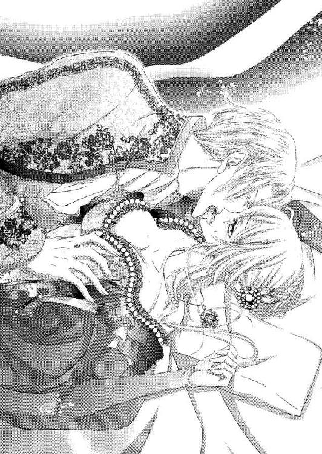
くちづけの合間に囁かれる声が熱くて少し掠れていて、それが鼓動を高める。胸を揉んでいた手が片方だけ外れ、リネットの脇腹から腰に下りた。
唇を離して、ジェラルドが言う。
「あの男たちはさらに君の......この、秘められたところを暴こうとしているんだ」
「え......あ......駄目......っ！」
ジェラルドの片手がたっぷりとしたスカートをたくし上げつつ、中に入り込む。フリルやレースの中から片足だけ剥き出しになり、リネットは慌てた。だがジェラルドの身体が相変わらずのしかかっているために、何もできない。
ジェラルドは剥き出しにした大腿を撫で上げて、奥に進む。足の付け根まで這い上がった指は、下着の薄い生地越しに恥丘を撫でてきた。
他人の指をそんなところに感じるのは初めてだ。リネットはそれ以上触れられないように腰を引くが、押し倒されている格好では逃げられない。
ジェラルドの指先がふっくらとした恥丘を優しく撫でる。
「女性はここで、男を受け入れる。わかるかい？」
指がさらに奥へと進む。布地越しに秘裂に進み、上下に撫でてきた。
「ん......ふ......っ」
不思議な快感がやってきて、リネットは唇をきつく引き結ぶ。甘く疼くような気持ちよさにあられもない喘ぎを上げてしまいそうだ。
ジェラルドはリネットの顔をじっと見下ろして、指を動かし続ける。穴が空いてしまいそうなほどの熱い瞳に、ゾクゾクしてしまう。
今、自分はどんな顔をしているのだろうか。きっと変な顔をしているに違いない。その顔をジェラルドに見られるのはたまらなく恥ずかしかった。
「い、や......見ない、でくださ......」
「......リネット......君は感じると、そんな可愛い顔をするのか......」
ジェラルドの指の動きが、強くなる。布地越しに割れ目の中に指先を押し入れるようにしながら、擦ってきた。
「......っ!?」
割れ目から、蜜が滲み出し始める。それが下着の布地を湿らせていき、ジェラルドの指にも熱を与えてきた。
リネットはジェラルドを縋りつくように見つめながら、嘆願する。
「......い、や......やめ......っ」
濡れていっていることを、知られたくない。ジェラルドにいやらしい娘だと、思われたくない。
ジェラルドはしかしリネットの表情に煽られたのか、指をさらにぐにぐにと蜜壺の中に押し入れるようにしてくる。
蜜でぬるついた布地が入り込んでくる感触も、疼きに似た感覚を与えてくる。ジェラルドは秘裂のすぐ上にある小さな粒のような花芽を、指の腹で撫で回してきた。
「......あ......っ!?」
今まで以上に鋭くやって来た快感に、リネットは大きく目を見開く。ジェラルドはリネットの反応を確認するように──花芽を摘み、押し揉んできた。
「は、あ......っ、ああ......っ」
甘く上がった声は、本当に自分のものなのか。リネットはジェラルドの腕を掴む。何かに縋らなければ、自分がわからなくなりそうだった。
淡い涙目になって与えられる快楽を何とかしのごうとするリネットの表情は、男の欲情を煽るには充分すぎるものだった。ジェラルドはそれに当てられたように瞳に獣じみた光を浮かべると、リネットの唇に噛みつくようなくちづけを与えてくる。
「んう......んふっ、んー......」
「リネット......リネット、可愛い。君の乱れるさまが、こんなに可愛いなんて......」
くちづけの合間に囁かれて、リネットの快感も高まる。
舌を絡め合うくちづけを交わしながら、ジェラルドは下肢を弄り続けた。布地越しでも蜜で濡れているために、ジェラルドの指の動きが強く感じられる。
「ん......んあ......」
ジェラルドの指が、リネットの荒くなる呼吸に合わせて激しさを増す。花芽をきゅうっ、と強く押し潰され、一気に絶頂がやって来る。
「......あ、あぁ......あぁぁ！」
リネットの身体が自然と仰け反り、腰が突き上がる。目の前が白くなるような感覚のあと、リネットはぐったりとベッドに沈み込んだ。
初めての絶頂を迎えてリネットの呼吸は荒く、身体は小刻みに震えてすぐには落ち着かない。ジェラルドはその呼吸が落ち着くまで、優しく髪を撫でながら唇に柔らかいくちづけを与え続けてくれた。
「リネット......とても、可愛かった......」
「んぅ......ん......」
「君を......私のものに、できたら......」
合間に熱い囁きを交えて、時折舌を潜り込ませて貪るようにくちづけてくる。だがすぐに気づいて、それ以上は進まないように堪えた。
それを何度か繰り返されていると、リネットの呼吸も落ち着いてくる。
その頃合いを見計らって、ジェラルドがゆっくりと身を起こす。リネットはベッドに沈み込んだまま、動くことはできなかった。
「......ジェラルド、さま......」
涙目で見返すジェラルドは、先ほどの情欲や獣性など想像もできないほどにいつもの凛とした姿だ。
「......わかったかい、リネット。今の君は、男に情欲を持たせるのに充分すぎる魅力がある。これからはもっと気をつけなさい」
リネットに厳しい叱責を強張った声で言ったあと、ジェラルドは乱したドレスを整えて、ベッドから降りる。
「召使いを呼ぼう。着替えをして、今夜はもう眠るんだ」
「......は、い......」
ジェラルドは肩越しに振り返り、おやすみの挨拶をしてくれる。
いつもと変わらないのに、何かが変わってしまった。変わってしまったのは、何なのか。
（......どうしよう......私......）
ジェラルドが扉の奥に消える。リネットの瞳に、涙が滲んだ。
（私、ジェラルドさまのこと......前よりももっと好きになってしまってる......）
ジェラルドにくちづけられた唇や、その手と指で愛撫された肌や下肢が、疼くように熱を持っている。その熱を持て余してしまい、リネットは熱い息をついた。
（ジェラルドさま......）
しばらくベッドに横たわって、ジェラルドの与えた熱を散らそうとする。落ち着いてきた頃合いを見計らったかのように、こちらに近づいてくる召使いたちの足音が聞こえてきた。
「リネットさま。お休みのお手伝いに参りました」
リネットは起き上がり、いつも通りの自分を心がけながら、答えた。
「はい。よろしくお願いします」
自室に戻る手前で、ジェラルドはグレイが控えていることに気づいた。ジェラルドが目を向けると、グレイはそっと歩み寄ってドアを開けてくれる。
「着替えのお手伝いを」
軽く頷いて二人で室内に入ると、グレイはすぐにジャケットを脱がせてくれた。
ジェラルドは幼い頃から自分に仕えてくれている家令にすべてを任せる。グレイはジェラルドを盛装からガウン姿に変えながら言った。
「何か、ございましたか？」
ジェラルドは無言のまま、グレイを見返す。グレイは脱がせたジャケットらを腕にかけて、小さく笑った。
「リネットさまが来られてからとても楽しそうでしたのに、今宵は難しいお顔をされています」
「......そうか。すまない」
オールブライト家の嫡男として迎え入れられたときより、ジェラルドは公爵家を継ぐものとして理性的に理知的にと厳しく教育されてきた。特に召使いたちに──自分の部下たちに、自身の乱れた心内を気づかれるようにしてはいけない。それは、弱さになるからだ。
弱さを他者に見せることは、自身に付け込まれる隙を与えることになる。オールブライト家を手に入れようとする輩は様々に居て、彼らに手を出されないようにするために常に強く在り続けなければならないのが主としての役目なのだ。
鉄仮面のようにすら見えるジェラルドの固くなった表情にグレイは痛ましげに眉根を寄せたが、何も言わなかった。自分が今しなければならないことを終えたあと、ジェラルドに一礼して退室する。
ジェラルドは一人部屋に残されたあと、ソファに深く沈み込むように腰を下ろした。
（リネットに......ひどいことを、した......）
リネットの無防備さと、異性に対する世間知らずなところ、そして何よりも自分の魅力に気づいていないことに──苛立ち、理性の箍が外れてしまった。
いつもはリネットを守る立場として、包み込むように優しく大切に扱ってきた。そのために、理性を保つ自信はあった。オールブライト家の嫡男としての教育は、ジェラルドにその自信を与える厳しいものだったからだ。
なのにそれを容易く打ち砕いてしまいそうなほど、彼女は徐々に目を見張るほどに美しくなっていった。
外見はもちろんのこと、内面の素直さや優しさを反映したかのような美しさには、何度も見惚れてしまった。そのたびに、自分の心にいくつもの鎖をかけて窘めてきた。
それが今夜のパーティの一件で、ああも簡単に崩されてしまうとは。
ジェラルドは片手で自分の額を覆い、大きく嘆息する。
「......私も、まだまだということか......」
──リネットに初めて会ったのは、少しばかりの好奇心だった。両親を亡くし父親の親友であるレイモンドに引き取られ、ジェラルドはオールブライト家嫡男としての教育を彼自身から厳しく指導された。
マナーや各分野への勉強はもちろんのこと、オールブライト家の主人としての心の強さを持つことや、貴族社会では気の緩みを持ってはいけないことなどなど──当時、まだ幼かった自分には相当に辛いものだった。もしかしたらレイモンドに嫌われているのではないかと思ったほどだ。
今となってはレイモンドが不器用な性格で、万が一自分がいなくなったとしてもジェラルドが一人で生きていけるように育ててくれたのだとわかるのだが。
そんなレイモンドが、ジェラルドに何度か話をしてくれたのがカレンのことだった。
彼が愛した人のこと、二人の間に娘が生まれていること。カレンを深く愛しているからレイモンドは未だ妻を持たず、正統な後継者を作ることをしない。親戚たちからはそのために散々口うるさく言われていることは、ジェラルドでも知っていた。それでもレイモンドは決して彼らの言葉に耳を傾けなかった。
そんなに愛しているのならばオールブライト家に迎え入れればいいと、ジェラルドが一度言ったことがある。だがレイモンドは首を振り、ジェラルドの言葉も受け入れなかった。
「貴族社会が私とカレンの仲を認めなかった。そんな中にカレンが巻き込まれ、心を疲弊させるのは見たくない。カレンとリネットには、彼女たちの心を病ませてしまうかもしれない煩わしい苦痛を味あわせたくはないんだ。自由に、幸せに、生きて欲しいのだよ」
（それでもあなたの心はカレンさんに在り続ける。そうでなければ、あんな部屋は作らない）
ジェラルドですら出入りを禁止されている部屋のことが、胸をよぎる。
まだ少年だったジェラルドは、厳しいレイモンドがそれほどに心許す存在というものに会いたくなった。どんな人なのかを、知りたくなった。
だからこっそりとカレンたちの居場所を調べ、行ってみた。迷子を装ってカレンとリネットに接触し──カレンには、そのあとすぐにバレてしまったのだが──温かく優しいもてなしを受けた。レイモンドがカレン以外を妻としないのもわかるような気がした。
よく笑い、くるくると感情豊かに表情を変えて、人懐っこいリネット。その人懐っこさに裏はなく、いつだって他人を思いやる気持ちだけが見えていた。ジェラルドが綺麗に隠していたはずの心の疲労にも気づいて、そっと寄り添うように傍にいてくれる。ブレイアム家に居るときは、心に仮面をつける必要がない。
リネットは、オールブライト家の正統なる後継者だ。だが彼女はその座に返り咲くことを、望んでいない。どのような権力も、湯水のような金銭も、リネットの心を動かすことはないからだ。
リネットが本来あるべき場所に戻るつもりならば、ジェラルドはどんな協力もするつもりだ。そのために自分がこの家を出ていかなければならなくなったとしても、何の問題もない。
（リネット。君が一番良いようになればいい）
リネットが後継者になれば、アリシアもまた、自分の婚約者という立場から解放される。あるいはリネットが、あの指輪を持って自分の隣に来てくれることが一番いいのだが......。
（いや、それは私の都合のいい我儘だな......）
ジェラルドはソファから立ち上がり、テーブルに用意されていたワインのデキャンタを傾ける。グラスに一杯注いだ赤いそれを一気に飲み干すと、そのままベッドに向かった。
今夜は何も考えずに眠った方がいい。それが、リネットのためだ。そうでなければまたリネットに、あんなひどいことをしてしまいそうだ。
ベッドに入り、目を閉じる。リネットの唇、吐息、潤んだ瞳、柔らかな身体、戸惑いながらも感じてしっとりと濡れた花芽──それらを思い出さないようにしながら、ジェラルドは眠りに落ちていった。
召使いに起こされる前に目覚めたのは、あまりよく眠れなかったからかもしれない。それでもジェラルドに余計な心配はかけたくないから、リネットは鏡で目元を確認する。寝不足の顔にはならずにすんだようだ。
召使いがやってきて、リネットに朝の支度をしてくれる。新しい服が届いていたらしく、リネットの身体にぴったりと合うワンピースが着せられた。
ドレスの華やかさは控え目になっていたが、真っ白なワンピースだ。胸元にピンタックがたっぷりと入り、真珠のボタンがずらりと並んでいる。ふんわりと膨らんだ袖口やスカートの裾にはトーションレースがたくさんついていて、とても可愛らしい。背中で結ぶリボンも大きめで、まるで綺麗なお人形さんに着せるそれのようだ。
自分には不相応に思えるのだが、鏡の中の自分は戸惑った顔をしていてもとても似合っている。どれだけジェラルドは自分のことをよく考えてくれているのだろうか。
（嬉しい。でも......私はこの屋敷を出て行く人間なんだから）
これ以上好きになっては、駄目。リネットは改めて自分にそう言い聞かせ、朝食の席に向かう。
ジェラルドはどんな態度をしてくるだろうか。それを少し不安に思いながら食堂に入ると、ジェラルドは読んでいた新聞から顔を上げて笑いかけてきた。
「おはよう、リネット。疲れは残っていないかい？」
優しくいたわりに満ちた笑顔と声は、いつも通りの──リネットのよく知るジェラルドのものだった。昨夜、ジェラルドが与えてきた淫らな愛撫のことなど、まるで想像できないほどにいつも通りだった。
それが少し寂しいような気持ちになり、リネットは慌てて応える。
「おはようございます、ジェラルドさま。昨日はパーティに連れて行ってくださって、ありがとうございました。それに、このワンピースも......」
ジェラルドの隣の椅子を、グレイが引いてくれる。リネットが腰を下ろすと、すぐに朝食が運ばれてきた。
ジェラルドはコーヒーカップに手を伸ばす。
「とても可愛くてよく似合っている。作ったドレスやワンピースは、帰るときに全部持っていくといい。それは君のために作ったものなのだから」
帰るときに。ジェラルドから言われると不思議と胸にチクチクとした痛みを与えてくる。
（嫌な子だわ、私。自分はこの屋敷に戻るつもりはないと思っているのに......）
リネットは笑って頷いた。
「ありがとうございます。そうさせていただきます」
レイモンドが不在でも支障がない状態になっているとはいえ、やはり主人の空白を埋めなければならないこともある。この日、ジェラルドは近くを通りかかったというレイモンドの仕事上の深い付き合いがあるという男性の接待をしているという。たまたま図書室で本を読んでいたリネットは、部屋に戻る途中で召使いからそれを聞いた。
（接待......ご自宅とはいっても、休まる暇がないみたいだわ......）
これではせっかく家でゆっくりしたいと言っても、できないだろう。リネットは自室につながる廊下を歩きながら、考えを巡らせた。ジェラルドの心が解れることをしてやれるといいのだが。
（......ジェラルドさま、私が淹れたお茶を喜んでくれたわ。終わる頃合いを見計らって、お茶を淹れて差し上げよう）
くるりと方向転換をして、リネットは厨房に向かう。
この屋敷では客人として扱うようにと言われているリネットが顔を出したことに、召使いや料理長たちはとても驚いて追い返そうとしてきた。ジェラルドのためだと言っても聞かず、とにかく彼に叱られたくないの一点張りだ。
（ジェラルドさまは、不用意にお叱りになる方ではないのに......）
「どうかしましたか」
ちょうど近くを通りかかって騒ぎに気づいたのか、グレイが顔を見せてくる。召使いたちが助けを得たとばかりにグレイに詰め寄り、リネットの無謀さを叱責しながら何とかして欲しいと懇願した。
（そ、そんなにひどいことをしてるのかしら......）
あまりの恐れように、リネットは唖然としてしまう。事情を聞いて得心がいったグレイは、低く笑いながら頷いた。
「ああ、わかりました。そういうことですね。ですがリネットさまがお茶を淹れること自体はまったく構わないんです。ジェラルドさまも喜ばれます。ぜひそうしてくださいませ」
「私たちがお客さまにそんなことをさせたわけじゃないと、ちゃんとご説明くださいね、グレイさま！」
傍にいて変なことを言われたら困るとでも言いたげに、召使いたちは皆、厨房から出て行ってしまう。がらんと広いそこに取り残されたリネットは、グレイに茶と茶器の場所を教えてもらいながら、茶を淹れた。
「......何だか色々とすみません、グレイさん......」
ジェラルドのためにしたいことが、この屋敷では色々と面倒な誤解を招いてしまうらしい。貴族社会とはそういうものなのだと言われてしまえば仕方ないのだが、随分と面倒で生きずらい。
「お気になさらず。むしろリネットさまが嫌な想いをされたらと思うと、それが心配です」
「嫌な想いなんて......ただ、身分差っていうのはこんなに心にも距離があるんだなと思いました」
「......仕方のないことではあるのですが......」
（仕方のないこと）
そうだ。そういう生き方が決まってしまっているのならば、仕方のないことだ。でも、とリネットは考えてしまう。
身分の差とか関係なく、もっとその人の本質を見れるようになればいいのに、と。
ワゴンを押してジェラルドの部屋に向かっていると、来客対応が終わったらしいジェラルドが姿を見せた。いつも通りの姿だったが、リネットはジェラルドの表情に少しだけ滲む疲労を感じ取れている。
「お客さまはお帰りになりましたか、ジェラルドさま」
「ああ、新たな茶はいらない」
ジェラルドの言葉に、リネットは笑って首を振る。
「違いますよ、ジェラルドさま。これはジェラルドさまのために淹れたものです」
「......私の？ リネットが淹れてくれたのかい？」
リネットが頷くと、ジェラルドは笑った。
「じゃあ、いただこう。ありがとう」
ジェラルドの笑顔がとても嬉しそうだったから、リネットも嬉しくなる。
ジェラルドがワゴンの傍に歩み寄り、一緒に部屋に向かっていく。二人で並んで歩いていく様子を見たグレイは淡く微笑むと、そのまま足を止めて二人を見送った。
「リネットには私のことが何でもわかってしまうみたいだ。ちょうどリネットの淹れてくれたお茶を飲みたいと思っていたところだったんだ」
「それはよかったです。お仕事関係のお客さまのお相手をしていたら、疲れてしまうのではないかと思って」
「......リネット」
ジェラルドの指が、リネットの頰に触れる。す......っ、と優しく撫で下ろされて、リネットは軽く息を呑んだ。
（キス......され、る......？）
して欲しい。いえ、したら駄目。二つの相反する気持ちが、リネットの瞳を揺らがせる。
それを見て、ジェラルドが慌てたようにハッと我に返る。そしてすぐに手を離した。
「......さあ、行こう」
「......はい」
ホッとしたような残念なような気持ちが、やってくる。だがリネットはそれを呑み込んで、ジェラルドとともに歩を進めた。
（どうしよう......ジェラルドさまのこと、どんどん好きになる......）
この屋敷にやってきて、まだ数日だ。レイモンドが帰宅する時期にはもう少し時間がかかる。早く帰ってきて欲しい。
（そうでないと、ジェラルドさまと間違いを起こしてしまいそうで......）
リネットは悶々とした気持ちを何とかしようと、屋敷の庭を散歩することにした。
オールブライト家の庭は公園のように広く、散歩をするにはうってつけだ。ジェラルドに一言断ってから、リネットは庭を歩いていた。
だが考え事をしていたせいで、屋敷の敷地内の奥深くに入り込んでしまったらしい。気づくと、見慣れない場所に来てしまっていた。
「......あ、あら......？」
キョロキョロと辺りを見回してみるが、まったく思い当たらない場所だ。屋敷と廊下で繋がってはいるが、小さな部屋が一つだけ離れのように建てられている。もしかしたらここに、誰かがいるかもしれない。
屋敷の見知った場所に戻る道筋を教えてもらえたらいいと、リネットはその小部屋に近づく。
ノックをしてみたが、反応はなかった。ドアノブを回してみたが、鍵がかかっている。誰も中にはいないのだろう。
リネットはがっかりしながらもなんとなくその部屋が気になり、窓の方に回ってみた。窓にはカーテンが引かれていたが、きちんと閉まっておらずに隙間が空いている。中に人がいるだろうかと何気なくその隙間から室内を確認して──リネットは、小さく息を呑んだ。
（母さん......？）
ちょうどその隙間から見える壁に、一枚の肖像画が飾られていた。こちらを見つめて柔らかく微笑む姿は、カレンのものだった。
今のカレンよりも若い。だがその笑みは、年齢を経ても変わっていない。まるで少女のような笑みを、リネットはよく知っている。
その笑みはいつも、カレンが愛した人の話をしているときに見せるものだからだ。
（私の、父親の話をするときの顔）
ではこの肖像画のカレンが見ているのは。
（......レイモンド・オールブライト......？）
──自分の、父親なのか。
リネットは思わず窓ガラスに顔をくっつけるようにして、室内をもっとよく見てみる。
この程度の隙間では、室内をはっきりと確認することはできない。だが小さな小物などが置かれているのがわかる。......女物が多いように思えるのだが、生活感がまるで感じられなかった。
それらを、飾っているようにしか見えない。使っている形跡を感じられないのは、リネットの気のせいだろうか。
（あら......あそこに......）
肖像画が飾られている壁には、サイドボードがある。そこに、台座にはめ込まれた指輪が見えた。
隙間から入る陽光を受けてキラリと光ったその指輪は、リネットが首に下げているものと同じ──ように見える。
そして、肖像画のカレンが嵌めている指輪と同じだと。
「......リネット！」
ふいにリネットの背中から、アリシアの声が投げかけられた。いけないことをしているところを見られたことにビクッと身を震わせながら振り返れば、こちらにやってくるジェラルドとアリシアがいた。
二人が並んでいる姿を見て、ツキン、と胸が痛む。だがその痛みには気づかないふりをした。
アリシアがリネットに駆け寄ってくる。
「リネット、こんなところにいたの？ 探してしまったわ！」
「こ、こんにちわ、アリシアさま。どうしたんですか？」
「とても可愛いものが我が家に来たものだから、リネットにも見せたくなってしまって」
満面の笑みを浮かべながら、アリシアが言う。自分に会いに来てくれたことが、嬉しい。
「それにリネットとまたおしゃべりをしたかったの。だから、遊びに来たの」
「嬉しいです、アリシアさま。私もアリシアさまとお話しできるの、楽しみにしていました」
「お庭のガーデンセットにお茶とお菓子を用意しているの。行きましょう、リネット」
アリシアが先導するように、先に歩き出す。その背を追いかけて歩き出したリネットの傍に、ジェラルドが並んだ。
「こんなところまで散歩していたのかい？」
「あ......いえ、その......考えごとをしていたせいか、迷ってしまって。お庭が広いと、こういうときに困りますね」
「あの部屋を、見たね？」
「......っ」
ジェラルドの問いかけに、リネットは小さく息を呑む。別にジェラルドは怒っている感じではなかったが、覗き見をしていたところを見られて気まずい気持ちがリネットの心を萎縮させた。
「......すみません......」
「いや、構わない。君は彼以外にあの部屋に入れる唯一の人だと思っているから」
「......母さんの、肖像画が飾ってありました」
リネットが言うと、ジェラルドは小さく頷いた。
「ああ、そうだ。今のカレンさんもとても美しいけれど......あの肖像画のカレンさんも、とても美しい人だ」
「それに、いろいろな小物が、ありました。指輪、も......」
ジェラルドが、口を噤む。アリシアのことを気にするように、ジェラルドは先に行く婚約者の背中を見遣った。
リネットたちがついてくることを信じているようで、アリシアは一度も振り返らない。数歩先に行くのは、リネットとジェラルドのやり取りの邪魔をしないためだろうか。どちらにしても小声で交わす自分たちの会話は、アリシアまで届かないだろう。
「あの部屋は、彼の宝箱のようなものだ」
「宝......箱......？」
「そうだ。カレンさんとの思い出の数々が、飾られているんだ。カレンさんと一緒に使ったティーセット、食器、彼女に贈った小物と同じもの、彼女が彼に贈ったもの......出かけた場所の木の葉、摘んだ花、一緒に見た本などだったかな。あの部屋に入れるのは彼だけだから、私も話を聞いたことしかないんだが」
リネットは話に驚いて、軽く目を見開く。それはまるでレイモンドが、今でもカレンを愛しているようではないか。
「ジェ、ジェラルドさま、それって公爵さまは母さんのことをまだ......？」
「私はそうだと思っている。そうでなければ、私を後継ぎにする必要がない」
「そんなに公爵さまは母さんを想って下さっているのに......」
すべてカレンが辛い思いをしないために、彼女を傍には置かなかった。レイモンドの想いの深さがよくわかる。
リネットは緩く唇を噛みしめる。ジェラルドが気遣わしげにこちらを見返した。
「彼は、カレンさんが中傷を受けたり、貴族間の噂の種にならないようにしたんだ」
「それはわかっています。でも、母さんがこんなふうになっているんだから......」
「本当は、彼自身が手元にカレンさんを呼び寄せて看病したかったんだろう。だが彼は、自分が近づくことはカレンさんのためにならないと考えた。だから、私を使っているんだ」
「......え......？」
「私が君たちの許に折々に通っていることを、彼は知っている。私を通して君たちのことを知り、カレンさんが拒まない程度の援助をしているんだ。カレンさんも彼のことを思っているから、大きな援助をもらいそうなときはきっぱりと断っているし」
リネットの視界が、ふいに歪んだ。それが涙のせいだと気づいて、慌てて俯く。泣き顔などを見られたら、ジェラルドが心配してしまう。
（思い合っているのに、一緒にいることができないなんて......）
リネットは胸元をそっと片掌で押さえた。
ブラウスの下には、カレンから託された指輪がある。肖像画のカレンが嵌めていた指輪は間違いなくこれだろう。
（公爵さまが母さんに贈った、愛の証）
ジェラルドの手が伸びて、リネットと手を繋ぐ。アリシアがいつ振り返るがわからないのにと慌てて手を引っ込めようとするが、ジェラルドが離す様子はなかった。
ジェラルドの手に、力が篭る。リネットの心を気遣ってくれる力だった。だからこそ、さらに泣きたくなってしまう。
「君は、二人に愛されて生まれてきた子供だ」
「は、い......ありがとうございます、ジェラルドさま」
なんとか溢れそうになる涙を呑み込んで、リネットは笑いかける。その笑顔を見たジェラルドが小さく息を呑むようにしたあと──不意に、身を屈めてきた。
え？ と思う間もなく、リネットの少し濡れた目元にジェラルドの唇が触れた。風のように柔らかく、一瞬で通り過ぎるかすめるようなくちづけだ。
リネットは一瞬何が起こったのかわからず、ぼんやりと指先でくちづけられたところを押さえてしまう。ジェラルドは何も言わず、再び歩き出す。
（い、今......ジェラルドさま、私に......？）
「ジェラルドさま、リネット！ どうされたの？」
いつまで経っても追いついてこないことを心配して、アリシアが振り返ってくる。ジェラルドがその瞬間に手を放した。
「いや、何でもない」
リネットも慌てて頷き、ジェラルドとともにアリシアの傍に歩み寄る。先ほどジェラルドにされたくちづけのことは極力考えないようにして、アリシアとの他愛もない話をしながら庭のガーデンセットに到着した。
レース生地でできたパラソルの下に、ガーデンセットはある。てっきり自分たちだけかと思っていたリネットは、透かし彫りが施された椅子に座っているソフィーの姿を認めて、危うく足を止めそうになってしまった。
茶の一式が用意され、ソフィーは召使いの一人に給仕されながら茶を飲んでいる。アリシアたちが近づく気配に気づくと顔を上げ、リネットが一緒にいることを認めると途端に睨みつけるような鋭い目を向けてきた。
明確な敵意はわかりやすくて対応しやすいが、ずっとこれを向けられ続けるのかと思うと、心の疲労感は結構強い。
「叔母上もいらっしゃっていたのですか。アリシアは一人で外出もできないのですね。オールブライト家の次期女主人になろうとしているのに、情けないと使用人たちに思われないといいのですが」
アリシアはひどく申し訳なさそうな顔で、リネットとジェラルドを見る。その表情から、ソフィーが無理矢理ついて来たのだと、予想できた。
リネットはアリシアを安心させるために首を振り、笑いかけた。ほっと安堵した笑顔が大人びた雰囲気を緩め、随分と可愛らしく感じられる。
「変な虫があなたの周りをブンブンと飛び回っているようだったから、機会があれば叩き潰してやろうと思って」
綺麗な顔から、とんでもなく毒を含んだ言葉が吐き出される。その瞳がじっとこちらを見つめてきて、リネットは内心で小さく震え上がった。
「小さな虫なら自分で追い払えます。叔母上は私にもアリシアにも、過保護です」
「それは仕方のないことだわ。何しろ過去に前例ができてしまっているのですからね」
前例。それが、何のことを言っているのかがもうわからないリネットではない。父の人となりはよく知らないからどう怒ればいいのかわからないが、カレンのことを馬鹿にされるのは嫌だった。
（それに、公爵さまだってあの部屋を大切にしているということは、母さんのことを大切にし続けているってことなのに......！）
ここは一言、言ってやらなければ。
リネットは怒りのままにソフィーに言い返そうとする。それを言うことでこの場の空気がまずくなってしまうかもしれないことは、考えられなかった。
ジェラルドが止めないのをよしとして、リネットは勢いよく口を開く。
「あ、あの！」
「リネット、見て！」
アリシアが会話に割り込むようにして言い、リネットの目の前に小さなバスケットを差し出した。突然のことにどう反応すればいいのかわからなくなり、リネットは茫然と目を見開いたまま硬直する。
アリシアはすぐさまバスケットの蓋を開ける。そこからひょこっ、と顔を出したのは、愛らしい子猫だった。
リネットの荒んだ気持ちが一気に溶けていくほどの愛らしさだ。リネットははしゃいだ声を上げてしまう。
「可愛い......っ！」
「そうでしょう？ 私の飼い猫が子供を生んだの。とても可愛いからリネットにも見せたくて」
リネットの怒りが逸れたことに、アリシアは安堵の声で続ける。バスケットから子猫を出し、リネットに抱かせてくれた。
アリシアの気遣いに気づいて、リネットはハッとする。胸の中のふわふわと温かい柔らかさを包み込みながら、リネットは言った。
「アリシアさま、ありがとう」
「私は何もしていないわ」
すべてをわかっているかのような口調で、アリシアは笑い返す。リネットは子猫を抱いたまま、ジェラルドに言った。
「ジェラルドさま、アリシアさまと遊んで来てもいいですか？」
ソフィーの傍にこのままいたら、嫌な子になってしまいそうだ。リネットの気持ちを察したジェラルドは、優しい笑顔を浮かべて頷く。
「私の見えるところにいるのならね」
「はい、ありがとうございます！」
リネットはアリシアと一緒に席を離れて芝の方に向かう。柔らかい芝の上にスカートが広がらないように気をつけながら腰を下ろし、子猫を遊ばせた。子猫は最初だけ緊張のためか身を強張らせていたが、すぐに楽しげにはしゃいだ。
アリシアは子猫のために、房のついた棒や小さなボールなどを一緒に用意していた。それらを使って子猫とじゃれ合い、声を立てて笑い合う。
「可愛いでしょう？」
「はい、とっても！ 猫、飼いたくなります！」
リネットは子猫の頭を優しく撫でる。あっという間に仲良くなった子猫は、身軽にリネットの胸元に飛びついてきた。
受け止めて引き離そうとすると、子猫は嫌がってブラウスにしがみついてくる。
「あら、まあ......リネットが気に入ったのかしら」
「そ、それは嬉しいですけど、この格好はちょっと......」
リネットは苦笑して子猫を掴む手にそっと力を込める。子猫はますます意固地になってしまったようで、さらに爪を立てた。
気づいたときには遅く、子猫の爪がブラウスのボタンに引っかかっている。そのまま力を込められてしまえばボタンが二つほど引きちぎられてしまい、胸元が緩んでしまった。
「あ......っ！」
子猫がしがみつくものをなくして、リネットの膝にぽてっ、と落ちてしまう。リネットは慌てて子猫を抱き上げ、なだめるように背中を撫でた。
「ごめんね、びっくりしたね。大丈夫だからね」
プルプルと震えていた子猫は、リネットの声と優しい掌の動きですぐに落ち着きを取り戻す。リネットはアリシアに子猫を渡した。
「リネット、あなたは大丈夫!? 怪我はしていない!?」
「あ......引っかかれたりしたわけではないので大丈夫です」
見下ろせば胸元が緩んで、そこから指輪のペンダントが見えてしまっている。そして、シュミーズで包まれた胸の膨らみも。
リネットは慌てて胸元をかき合わせる。アリシアが何か羽織るものを用意しようとするよりも早く、ジェラルドがこちらにやって来ながらジャケットを脱いでいた。
ジェラルドのぬくもりが宿った上着が、ふわりとリネットの肩を包み込む。ジェラルドが前身頃をかき合わせながら立たせてくれた。
「とんだ悪戯っ子だ。仕置きが必要だな」
「まだ子猫です。何が良くて何が悪いのかは、これから覚えていくんですから」
ジェラルドはリネットの言葉に仕方なさそうに頷いて、苦笑する。
「ではこれで許そう」
アリシアの腕の中にいる子猫の額を、ジェラルドはつんっと指先でつつく。
ジェラルドはリネットの肩を抱いて、促した。
「着替えをした方がいい」
「はい、ありがとうございます」
「リネット、ごめんなさい」
ひどく申し訳なさげに謝ってくるアリシアに、リネットは笑って首を振る。アリシアのせいでも子猫のせいでもない。
「楽しいですから大丈夫です。少し、席を外させていただきますね」
ジェラルドにはこの場に留まってもらおうと思ったのに、一緒に来るつもりのようだ。ソフィーが何と思うだろうかと心配になり、そちらに目を向ける。
ソフィーは、椅子から立ち上がってこちらを見ていた。その瞳は驚きに大きく見開かれている。リネットを見て驚いているようだったが、原因がわからない。
「その、指輪......」
独白が、耳に届く。指輪とはカレンに渡された胸のこれのことだろうか。
リネットは知らずに握りしめてしまっていた指輪のことを、ソフィーに話そうとする。だがそれを遮るようにジェラルドが歩き出した。
肩を抱かれているため、ジェラルドに従うしかない。リネットは慌ててジェラルドについていきながら彼を見上げて、小さく息を呑む。
ジェラルドの端正な横顔は、今まで見たことがないほどに厳しいものだった。
「見つかった、か......」
低く呟かれた声は、かすかなものだ。だがジェラルドに意識を向けていたリネットの耳には届く。
「ジェラルドさま......？」
気遣うように名を呼びながら、ジェラルドの腕にそっと触れる。ジェラルドはすぐにこちらを向いて、安心させるように笑いかけた。
「何でもない」
「本当に？」
「ああ。君は、何も心配しなくていい」
きっとそんなことはないのだろう。だが、リネットにはジェラルドの心配がどこにあるのかわからない。ただ、迷惑にならないようにしたいと、思うことしかできない。
（やっぱり私は、ここにいてはいけない人間ね......）
泉に投げ込まれた小石のように、周囲に波紋を広げるだけで何も生み出さない。そんな価値のない人間なのだ。
早く公爵さまが帰ってきますように──父と呼べない人のことを思いながら、リネットはジェラルドを追いかけた。
夕方、随分陽が傾いてもアリシアが帰る様子はなかった。
アリシアとはあのあと、リネットの部屋で他愛もない女同士の会話に花を咲かせ、時間がそんなに経っていたことにも気づけなかったほどだ。頃合いを見計らってお代わり用の新たなティーポットを持ってきた召使いのおかげで、窓の外の色合いが夜の訪れを迎え始めていることに気づかされる。
「まあ、私ったらこんな遅くまで......！」
時間の経過にアリシアは驚いたあと、小首を傾げた。
「お母さまはどうされたのかしら」
あれからアリシアとともに自室にこもっていたため、ソフィーが何をしているのか気にもしなかった。アリシアは名残惜しげに立ち上がる。
「随分と長居をしてしまって、ごめんなさい。お母さまを呼んでくるわ」
「私もご一緒します」
アリシアと別れるのは、リネットも名残惜しい。その気持ちが、リネットに言わせた。アリシアは嬉しげに笑って頷き、二人で部屋を出る。
ちょうどそのとき、こちらにやってくるジェラルドの姿があった。今のジェラルドの顔は、一瞬背筋に震えがやって来るほどに剣呑だった。
呼びかける言葉を飲み込んでしまったリネットの代わりに、アリシアが言う。
「ジェ、ジェラルドさま。どうかなされましたか？」
ジェラルドがリネットたちの前でぴたりと足を止め、苛立たしげな吐息を零した。ジェラルドの怒りを感じて、リネットはアリシアとともに小さく身を震わせた。
「アリシア、今夜は帰らなくていいことになった」
「えっ？」
意外そうにアリシアが小さく声を上げる。リネットにしてみればアリシアと一緒の時間が増えるのは嬉しいのだが──これまでのジェラルドのことを考えると、進んで彼女を引き止めるようなことはしなさそうだったのに？
「叔母上が少し気分が悪いと仰った。今夜は我が家に泊まってもらうことになった」
ジェラルドの言葉を聞いて、アリシアは心配そうに眉根を寄せた。リネットはアリシアに優しく笑いかける。
「一晩ゆっくりお休みになれば、きっとよくなります」
「ありがとう、リネット。でも、私が心配しているのはそうではなくて......」
軽く小首を傾げるようにしてアリシアを見返すと、彼女は少し躊躇いがちに口を閉ざした。そしてすぐに、気を取り直したように笑う。
「ごめんなさい、何でもないわ。どちらにしても、ジェラルドさまたちのお手を煩わせることになるのは間違いないもの。帰るようにします」
具合が悪いというのに無理に帰らなくてもいいのではないか。リネットはソフィーの体調を心配して、眉根を寄せる。
だがジェラルドとアリシアは何か通じ合ったように互いに頷きあっている。言葉にしなくてもわかり合っているような空気が感じられて、リネットは改めて二人の関係が『婚約者』だということを思う。ちくりと胸が痛くなった。
アリシアの奮闘は成功せず、ソフィーは体調がよくなるまでオールブライド家に滞在することになった。ソフィーの性格のきつさを考えると決して進んで一緒にいたいとは思えないが、それでも病人ならば早くよくなってもらいたいと思う。
ジェラルドはソフィーのためにかかりつけの医者を呼び寄せたが、診断では特に問題はないとのことだった。その話を聞いてジェラルドの表情はますます剣呑になる。
夕食を終え、アリシアと別れたリネットは、少し迷ったもののジェラルドの部屋を訪れてみた。婚約者が夜に他の女性と一緒いるなどとアリシアが知ったら胸を痛めるかもしれないと、リネットは誰にも見つからないように気をつけて、ノックをする。
すぐに返事がないことが、なんとなくジェラルドの警戒を感じさせた。リネットがしばらくそこで待っていると靴音がして、ジェラルドがそっと扉を開ける。
視線の先にリネットの姿を認めると、ジェラルドは少し驚いた顔をして慌てて扉を大きく開いた。
「リネット......!? どうしたんだい!?」
リネットに何かあったのかと心配してくれている声だ。リネットは慌てて安心させるように笑いかける。
「あ......いえ、私は大丈夫なんです！ ジェ、ジェラルドさまが大丈夫かと思って......」
「私が？」
ジェラルドが新たな驚きの表情で問い返してくる。もしかしたら自分の気のせいだったのかもしれないと思えてしまい、リネットは頬を赤くした。
「あ、あの......私の気のせいだったのならそれでいいんです。ただ、ジェラルドさまが何だか気持ちがささくれだっている感じがしたので......何かあったのならば、愚痴でも何でも聞きますよって思っただけで......」
言っているうちに、さらに恥ずかしくなってきた。これが本当に自分の勘違いだったら、どれだけジェラルドのことを自分勝手に見ているのか。
だがジェラルドはリネットを食い入るように見つめたあと──ふいに、手を伸ばしてきた。
「......あ......っ」
リネットの肩と背中にジェラルドの腕が触れ、攫うように引き寄せてくる。突然のことに反応が遅れ、リネットはジェラルドの胸の中に倒れ込んだ。
その背後で、ぱたん......と扉が閉じた。
突然室内で二人きりになった上にこんなふうに密着してしまうと、ドキドキして困る。それに、またあんな際どいことがあったら。
だが、ジェラルドはリネットの身体をふんわりと包み込むように抱きしめるだけだ。あのときのように淫らに、その手が、その唇が、動いて触れる気配はない。何か心休まるものを抱きしめて安心しているようにも思える。
「......本当に君には......敵わないな......」
耳元で低く呟かれて、身が震えてしまう。ジェラルドの声の低さと甘さに、鼓動がさらに高く跳ねた。
（でも、ジェラルドさまにこうして抱きしめてもらうと、とても温かい気持ちになれるの）
リネットはジェラルドの胸にもたれかかって、目を閉じて甘えたくなる。それを堪え、されるがままになっていた。
しばし、二人とも無言でそのままでいる。やがてジェラルドがそっとリネットを放した。
「ありがとう、リネット。君はいつも私のことを心配してくれるんだな」
「......ジェラルドさまが何でもないなら、それでいいんです。すみません、出過ぎたまねをしてしまって......」
「いいや。君がそうやって私のことを見てくれるから、息苦しい思いをしなくて済むんだ」
ジェラルドの唇が、リネットの額に軽く押しつけられる。挨拶のそれには少し長いくちづけは、リネットの心を甘く震わせた。......唇にされたくちづけを、思い出させた。
「おやすみ、リネット。今夜の眠りは、私が守ろう」
「......え......？」
何だか不思議な感じのする挨拶だ。だがそのことをリネットが深く問いかけようとするより早く、ジェラルドは扉を開けてしまう。
これ以上ここに留まることを、許してはもらえない。リネットは仕方なく部屋を出て、就寝の挨拶をするしかなかった。
──リネットが近づいてくるため、彼女は慌てて覗き見をするために細く開けていた扉をそっと閉じる。
空き部屋の前を、リネットは何も知らずに通り過ぎていった。彼女は思わずほっと息をついて、閉じた扉にもたれかかる。
さきほどのやり取りは、まるで恋人同士のそれだった。男女の生々しい匂いは感じなくとも、ジェラルドがリネットを大切にしていることがよくわかるやり取りだった。婚約者がいる身で少なくともあんなふうに他の女に触れることは、あってはならない。
ジェラルドの心は、あの娘にあるのだろう。だが、あの娘は貴族でも何でもなく、ただの村娘だと言っていた。たとえジェラルドが娘を求めたとしても、身分の差を越える賛成を得られることはない。ジェラルドの妻は、決められた存在がなる。
だが、唯一それを覆すアイテムがあるのだ。
（指輪）
子猫とじゃれあって胸元がはだけてしまったあの娘の首に、ネックレスのかたちで着けられていた指輪。あれは間違いなく、あの指輪だった。
あの指輪を持つ娘は、ジェラルドの妻に──いや、このオールブライト家のすべてを手に入れることができる。
それは、あってはならない。あってはならないのだ！
（今更、どうして出てきたの）
彼女は怒鳴りつけたいような衝動を、かろうじて抑える。このまま田舎に引っ込んでいれば、すべてが上手くいくのに。
（ああ......でもそうね。真の『敵』というものはいつだって、勝利目前になって現れるものなのよ）
彼女はそれに気づいて、唇の端を釣り上げる。ならばその『敵』を木っ端微塵にしてしまえばいいだけだ。そのために自分は頑張ってきたはずなのだから、報われるべきなのだ。
「そう......渡さないわ......」
ジェラルドのことが眠るときにも気になっていたためか、眠りが浅かったらしい。真夜中に目が覚めて、リネットは起き上がる。
再びベッドに潜り込んではみたが、眠りはやってこなかった。それならば、温かいミルクでも口にした方がいいかもしれない。リネットはネグリジェにガウンを羽織り、灯りを持って部屋の扉を開ける。
直後、目の前の壁にもたれかかるようにして立っていた人物を認めて、危うく悲鳴を上げそうになった。
そこにいたのは、ジェラルドだ。寝間着にガウン姿で、立っている。
「ジェ、ジェラルドさま......!?」
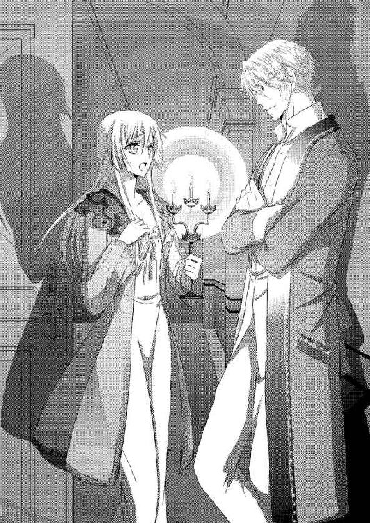
夜中であるにも関わらず、驚きのあまりに大声を出してしまいそうだった。
リネットは慌てて両手で口を押さえ、周囲を見回す。ひとまず、誰かが起き出してくる気配は感じられなかった。
「ああ、リネット。どうしたんだい、目が覚めてしまったのか？」
「聞きたいのはこちらの方です、ジェラルドさま！ どうしてこんな時間に、こんなところにいるんですか」
ジェラルドの前に歩み寄り、リネットはその手を取る。
屋敷の主人であるジェラルドを廊下に放っておくわけにもいかない。握った手はそんなに冷たくないが、このまま廊下に居続けたら身体が冷えてしまうのは確実だ。
リネットはジェラルドの手を取ったまま、自分の部屋に連れて行こうとする。
「ご用がおありでしたら、遠慮なくノックしてください」
「......待ちなさい、リネット。私をどこに連れて行くんだ？」
「お借りしている私の部屋です」
ジェラルドが、足を止める。リネットの手を柔らかく振りほどいて、ジェラルドは大きく息をついた。
「リネット。今の時間を考えたら私を招き入れるものではないよ」
「でもジェラルドさまは私にご用がおありなのでしょう？ 廊下でなんて、駄目です。ジェラルドさまのお身体が冷えます」
「私は男なのだけれど」
ひどく言いにくそうに──けれどもきっぱりとジェラルドは言ってきた。それが何を意味するのかに気づいて、リネットは顔を赤くする。......もしかしたら自分が今していることは、とてもはしたないことかもしれない。
それでも、ジェラルドが風邪をひくよりはましだ。
「......わかっています。でも、ジェラルドさまは本当に私にひどいことはしないってことも、わかっているんです」
ジェラルドが、困ったように笑う。
「信用してもらえているのは嬉しいが、少し、困るな......」
よく聞こえなくて、リネットは小首を傾げた。ジェラルドはそれ以上は何も言わず、リネットが勧めるままに室内に入り、ラグに座った。
「あ......お茶を」
隣に座りかけたときにそのことに気づいたリネットの腕を、ジェラルドが掴んで引き止める。
「いらない」
引き止められる仕草に、ドキリとする。こちらを見つめてくる瞳がやけに艶めいて見えた。
ジェラルドに促されるままに、リネットは再び腰を下ろす。毛足の長いラグはふかふかで、リネットたちの身体を包み込んでくれるようだ。
ソファよりもラグの方が距離感が近い。その分、鼓動も必然的に高まってしまうのだが、この甘い感覚は心地よくも感じられた。
しばらくどちらも何を言えばいいのかわからず、唇を閉ざす。けれど気まずさからは遠く、こうして一緒にいられるだけで心は満たされた。
用があるのはジェラルドの方だから、リネットは彼が口を開くまで待つつもりだった。不思議な心地よさを覚える沈黙のあと、ジェラルドが口を開いた。
「リネット、今夜はここにいさせてもらえないか？」
リネットはもう少しで口から心臓が飛び出してしまいそうなほどに、驚いてしまう。
年頃の男女がこんな遅い時間に二人きり。常識的に考えて気軽にしてはいけない状況だ。
だがジェラルドが不用意にこんなことをするわけがない。リネットはジェラルドの瞳を見返して、強く頷いた。
「わかりました。眠くなったらベッドを使ってくださいね」
「......嫌ではないのかい？」
リネットから拒絶されると思っていたらしいジェラルドは、驚きの表情で見返してくる。リネットは温かく微笑み返した。
「ジェラルドさまが、そんな不用意なことを意味なくするわけがありません。きっと、私や母さんのためにしなければならないことなのでしょう？ だから、いいんです」
ラグの上に、ジェラルドの手がある。触れたい衝動がやって来て、リネットはほんの少しだけ互いの手の距離を縮めてみた。
リネットの指が触れそうになるより早く、ジェラルドが触れてくる。きゅ......っ、と包み込むように握りしめられて、リネットの鼓動が跳ねた。
「君は、私に優しすぎる」
少し叱責してくるような声に、リネットは小さく笑った。
「優しいのはジェラルドさまです。いつも私や母さんのことを気遣ってくださって......こんなによくしてもらえて、申し訳ないくらいです」
「カレンさんや君は......私にとって、とても大切な人だから」
「でも私たちは、ただジェラルドさまが迷っていたときに道案内をして、休憩させてあげただけです。それだけの恩でこんなによくしていただくのは行き過ぎじゃないかって......」
ジェラルドの指が、リネットに絡んできた。指の間にジェラルドの指が入り込み、握り締められる。すぐには引き抜けないひどく親密な仕草に、リネットは顔を赤くした。
「......私がこの屋敷に引き取られたとき、彼はとても厳しく接してきた。オールブライト家の後継者としてはもちろん、貴族社会の様々なことを乗り切ることができるようにという彼なりの配慮だったのだと今では思えるが、当時の私にはそれはとてもつらいことだったんだ」
ジェラルドの声は低く、落ち着いている。だがリネットは心配そうにジェラルドを見返した。
ジェラルドは小さく笑う。
「彼はカレンさん以外の妻どころか、愛人も作らなかった。私が後継者として相応しくなければその座を奪い取ろうとしている者が、オールブライトの血筋には何人もいる。ソフィーもその一人だ。私がいなければ、アリシアが血統からして次の後継者になる。彼女は何度か私を亡き者にしようとしたが叶わず、今度は娘を婚約者にしてこの家を手に入れようとしているんだ」
世間話のようにジェラルドは淡々と言うが、リネットは知らされた事実に大きく目を見張った。
（今......命を狙われたって......）
「私の生家も貴族の中ではそこそこに高位だったから、わかっているつもりだった。だがまだ少年だった私には、それなりにつらいことではあったんだ」
「......っ」
リネットは思わず衝動的に手を伸ばし、ジェラルドの身体に抱きついている。高位の貴族として大変だということはわかっていたが、まさかそんなにひどい目に遭っていたとは知らなかった。リネットはジェラルドを庇うように抱きしめる。
（どんなに、辛かったのかしら）
想像しかできないが、リネットは悔しく悲しくなる。
そんなことをしてまで手に入れなければならないほど、権力や富というものは素晴らしいのだろうか。リネットにはわからない。
（私は、今の生活でいい。村のみんなと、母さんと、ジェラルドさまと......）
ジェラルドは少し驚いたのか、身を固くする。リネットはジェラルドに自分のぬくもりが伝わるように、さらに身を寄せた。
（今のジェラルドさまだけじゃなくて、過去のジェラルドさまも抱きしめられたらいいのに）
ジェラルドが躊躇いがちに手を伸ばし、リネットの身体を包み込むように抱きしめ返した。
「リネット......泣いているのか？」
「な、泣いてません！ 大丈夫です」
「......すまない。君につらい思いをさせるつもりはなかったんだ」
このままではきっとジェラルドは、すべてを話さないで終わってしまう。リネットは慌ててジェラルドから身体を少し離し、間近から顔を見返した。
「ジェラルドさまのこと、もっと知りたいです。だから今思っていること全部......話して、ください」
ジェラルドは、眩しげに瞳を細めて、リネットを見返す。
「......彼からカレンさんの話を聞いて、どんな人なのか興味を持った。あの厳格な彼が他の女性に目が向かないほどの人なのだから、と、自分で調べてみて君たちの家を訪れてみた。道に迷ったふりをしてカレンさんと君に、接触した。初めの出会いは、計画的だったんだ」
ジェラルドの声が少しだけ、恐れるように震える。リネットはジェラルドを安心させるように笑いかけた。
（そんなことで、ジェラルドさまを嫌ったりなんてしない）
きっとジェラルドは、寂しかったのだろう。
「君たちは温かく私を迎えてくれて、変わりなくこれまでも私に優しくし続けてくれた。リネットは私を兄か父のように慕ってくれるから、可愛くて仕方なかった」
ジェラルドがリネットの頰に手を伸ばして、優しく撫で下ろす。こちらを見つめてくる瞳に家族のものとは違う熱っぽさを感じ、リネットはジェラルドに視線を落とした。
（だってジェラルドさまはいつも私に優しくて、大切にしてくれて、私のためになることはちゃんと叱ってくれて）
そんなジェラルドだからこそ、家族以上の想いを抱いた。一人の男性として、好きになったのだ。
「私を慕ってくれる君が、私を必要としてくれていることが、とても心強かった。君に会えれば、ここでの嫌なことは忘れられた。君とカレンさんが不自由なく暮らせるように、オールブライト家を維持してきたようなものだ。君たちがいずれ戻りたくなったときのために。君のことを見守っていくつもりだったのに、君は年頃になってどんどん綺麗になって......君が、私以外の者と一緒にいる時間の方が長いことに、苛立っていた」
リネットの額に、ジェラルドが自分の額を押しつけてくる。あと少し顔を近づければくちづけも可能な近さに、ドキドキする。
「私は君の前ではもう......優しく分別のあるジェラルドを演じることが、難しくなってきている」
（それは、ジェラルドさまがわたしを）
ジェラルドの瞳が、じっとこちらを見つめてくる。ジェラルドの緑の瞳に自分の顔が映っているのがわかるほどだ。
「君が好きだ、リネット」
飾り気のない告白は、リネットの心を射抜く。堪えなければいけないと鎧をつけていたリネットの心を、打ち砕く。
（好きになったら、駄目な人だったのに）
「......すまない。オールブライト家に戻るつもりがない君に、こんなことを言っても迷惑にしかならないのに......」
リネットは慌てて首を振る。
「私、嬉しいんです。好きになったらいけないって、いつも思っていたから......」
ジェラルドの瞳が、軽く見開かれる。リネットはジェラルドに微笑みかけた。
「私も、ジェラルドさまが好きです。ずっと前から......好き、でした」
言わずに終わるだろうと思っていたことを口にできて、嬉しい。だが口にすると、急に恥ずかしくなる。リネットは真っ赤になって俯いた。
だがジェラルドの両手がリネットの頰を包み込み、自分の方を向かせてくる。
「や......ジェ、ジェラルド、さま......っ」
「駄目だ。顔を見せてくれ」
耳まで赤くなっている顔を見られたくないのに、ジェラルドは食い入るようにじっと見つめてくる。そんなふうに見られると、リネットも目を逸らせない。
「好きだ、リネット」
リネットはジェラルドの瞳に魅入られたようになりながら、返した。
「私もジェラルドさまのこと......好き、です......」
ジェラルドが堪らないというように眉根を寄せたあと、リネットの頰を引き寄せながら顔を近づけてくる。くちづけをされるとわかり、リネットは自然と目を閉じていた。
ジェラルドの吐息が、唇に触れる。その熱にふるりと震えた直後、リネットの唇を押し潰しそうな強さでジェラルドがくちづけてきた。
ジェラルドの唇の感触をゆっくりと実感する間もなく、唇を押し割られてしまう。そっと舌が押し入れられ、リネットの身体が小さく震えた。
前回のくちづけは突然すぎて驚いてしまった震えだったが、今のそれは触れられることへの期待による震えだ。想いを交わしたあとのくちづけは、蕩けそうなほどに気持ちがいい。
リネットの唇を柔らかく食み、ジェラルドは舌で口中をゆっくりと弄ってくる。歯列をなぞり、舌を搦め捕り、頬の内側を舐め、上顎のざらつきを舌先で擽ってきた。蕩ける感覚に小刻みに震えてしまい、自力で座っていられなくなってしまう。
「んぁ......は、あ......っ」
呼吸がうまくできずに、大きく口を開く。ジェラルドはそれに気づいて、時折唇を離してくれた。
その合間に空気を吸い込むが、くちづけが角度を変えて繰り返されるたびに、空気を吸える間隔が長くなる。
「......は、ぁ......ん......っ」
ジェラルドがリネットにくちづけながら身体に腕を回し、抱き上げて立ち上がった。すでにもう身体の力は抜けてしまっていて、リネットはジェラルドにされるがままになる。
リネットを運ぶジェラルドの足には、何の危うさもない。まるで人形のように軽々と抱き上げられて運ばれ、ふわりとベッドの上に降ろされる。
「あ......」
身体に感じた柔らかな感触が、これから先に何をするのかを教えてくれる。ジェラルドはリネットから唇を離し、顔を上げた。
「リネット。君が欲しい」
まっすぐに見つめてくる緑の瞳には、これまで以上の熱情がこもっている。ジェラルドはリネットの上に上体を被せながら、掠れた声で囁いた。
「君が欲しくて......堪らない......」
「ああ......」
その熱い囁きまでも、リネットの身を震わせる。リネットはジェラルドの頬を掌で包み込みながら頷いた。
「ジェラルドさまが、好きです。だから、あなたのものになりたい......」
「......リネット......っ！」
感極まったように名を呼んで、ジェラルドがリネットの唇に改めてくちづける。激しく情熱的なくちづけは、リネットの身体をさらに蕩けさせた。
ジェラルドはリネットにくちづけながらガウンを剥ぎ取るように脱がせ、ベッドの下に放り投げる。
「あ......んぁ......あ......っ、ジェラルド、さま......っ」
薄いネグリジェも、ジェラルドは引き裂きそうな強さで脱がせていく。縫い目のどこかが、引きつれた音を立てたほどだ。リネットがよく知る優しいジェラルドからは想像もつかないほど、乱暴な脱がし方だった。
「......リネット、リネット......」
一糸まとわぬ姿にする間、ジェラルドはリネットの頬や額、耳朶や首筋にくちづけながら名を呼んでくる。
切迫した呼び声は、ジェラルドの余裕のなさを教えてくれていた。リネットが欲しくて堪らないという思いが、伝わってくる。
（ああ......私、ジェラルドさまに求められてるんだわ......）
ジェラルドに生まれたままの姿を見られる恥ずかしさは、消えない。けれども求められる悦びが、リネットの肌をほんのり上気させる。
自分の身体の下で身を縮めるようにしながら裸身を晒すリネットを、ジェラルドはうっとりと見下ろした。
「......ああ......とても綺麗だ、リネット」
ジェラルドの大きな掌が、リネットの肌をゆっくりと這い回り始める。
「君の肌はとても滑らかで、吸いついてくるようだ」
「そ、んなこと......ありませ......」
褒めてくれるのは嬉しいが、アリシアのように丁寧な手入れをしている肌ではない。ジェラルドにふさわしくないのではないかと今更ながらに思ってしまい、リネットは慌てて身を捩る。
「駄目......あまり、見ては......！」
ジェラルドの視線から逃れようと、リネットはベッドにうつ伏せた。ジェラルドはそんなリネットの背中に覆い被さってくる。
ジェラルドの全身の重みを温かく背中に感じて、少しだけホッとする。これならば、ジェラルドに胸や顔を見られることはない。
ジェラルドはリネットの耳朶に舌を這わせてきた。生暖かく湿った感触に耳裏を舐められると、ぞくぞくしてしまう。
「自信を持っていい。君はとても綺麗だ」
「そ、んなことありません。私......何の手入れもしてませんし......あ......っ」
ジェラルドが唇でまろやかな肩口を啄ばみながら、脇の下から前に手を回してきた。
大きな掌が掬い上げるようにしてリネットの胸の膨らみを捉える。やわやわと強弱をつけて揉み解され、リネットは息を詰めた。
「んぅ......っ」
「さっきも言っただろう？ 君の肌は滑らかでしっとりと潤んでいて、私の指に吸いつくようだ......。ずっと触っていたくなるほどの肌だ。これで手入れをしていないのかい？」
リネットの身分でも手に入る程度の保湿用クリームくらいしか、つけていない。アリシアならば女性のたしなみとして、もっと手入れをしているだろう。リネットは恥ずかしく思いながらも、頷く。
「だとしたら、君の身体はもともとが素晴らしいということだ」
「あ......んぅ......っ」
ジェラルドの掌が、少し激しく胸を揉みしだく。不思議な心地よさと熱が胸から全身に広がり、下腹部に溜まっていくのがわかった。自分がとても淫らな感覚に支配されていくような感じがして、怖くなる。
「ジェ、ジェラルドさま......もうやめ......あっ？」
ジェラルドの指が、乳首を弄り始めた。指の腹で擦り立て、軽く摘むように押し揉んでくる。
小さくて柔らかな粒はジェラルドにそうされると、ゆっくりと確実にしこり立ってきた。
「固くなってきた......」
耳元で囁かれるジェラルドの低い声に、情欲が滲んでいる。その声で自分の身体が淫らに変化していくことを教えられて、リネットは首を振った。
「や......ジェラルド、さま......恥ずか、し......」
「君が女性として花開いていく予兆だ。見てごらん」
ジェラルドに促され、リネットは視線を自分の胸元に落とす。
ジェラルドの大きな手が乳房を包み込み、指がクリクリと乳首を押し摘んで捏ねている。卑猥な状況に、リネットは真っ赤になった。
「......ああ、そんな......」
目を逸らさなければいけないのに、それができない。ジェラルドの手が自分の胸を可愛がってくれていることが、嬉しいのだ。
「君の胸は柔らかい。私の愛撫に、すぐに反応してくれる。この可愛い蕾も......」
ジェラルドの指が、リネットの乳首を弾いた。少し強い刺激に、リネットは息を乱す。
「駄目......いけませ......っ、そんな弄り方......っ」
（恥ずかしいのに......気持ちががいい、なんて......！）
「恥ずかしがらないでいい、リネット。素直に感じてごらん」
「でも......でも......っ」
「君の乱れるさまが、私を昂らせる」
耳の中を舌先でぬちゅぬちゅと掻き回すように舐めながら、ジェラルドは指の動きを激しくする。リネットは身悶えた。
「......あっ、あっ、あぁっ！」
乳首を強く摘まれ、軽く引っ張られる。じんっ、とした痺れにも似た快感がやってきて、下肢が疼いた。秘められた場所が、しっとりと濡れてきているのがわかる。
「リネット......っ」
ジェラルドがリネットの胸を鷲掴みながら、力を込めてきた。
身を起こしたジェラルドが、リネットを胡座をかいた自分の膝の上に座らせる。ジェラルドはリネットの胸を持ち上げると、肩口から首を伸ばして俯き、舌で尖った乳首を舐め回し始めた。
「あ......あぁ......っ」
ジェラルドの厚い胸にもたれかかるようになったリネットの視界に、乳首を舐めるジェラルドの端正な顔が嫌でも入り込む。優しくて冷静で分別のある綺麗な顔が、今は飢えた獣のようにリネットの乳首を舐め、しゃぶり、吸ってきていた。
舌で弄られると、乳首はますます張り詰める。ジェラルドが舌先で押し込むと、弾力のあるそこはすぐに戻ってきた。
「ああ......可愛いよ、リネット......」
ジェラルドが大きく口を開き、じゅるり、と唾液をまぶすようにしながら吸い上げる。リネットは身を震わせた。
「......ああ......っ！」
後ろから羽交い締めにするように強く抱きしめた腕の片方を解いて、ジェラルドはリネットの胸の谷間を撫で、下腹部へと下っていく。細腰を撫でられたあと足の付け根を撫でられて、リネットは目を見張った。
「あ......ジェラルド、さま......」
胸の下でジェラルドの片腕にがっちりと抱きしめられているため、羞恥の逃げができない。ジェラルドはその指でリネットの淡い茂みをくすぐってきた。
「君のこの奥に......触れたい」
「......あ......でも......でも......っ」
戸惑いと羞恥で、ジェラルドの手首を掴んでしまう。だがジェラルドの力は強く、リネットは止められない。
「君が欲しいんだ」
リネットの秘所に、ジェラルドの指が潜り込んだ。
「......ん......っ」
「......ああ......濡れてくれている......可愛いよ、リネット」
ジェラルドの指が、花弁をそっと撫でる。くちづけと胸への愛撫でそこは蕩け始めていて、ジェラルドの指をするりと受け入れた。
まるで自ら彼の指を受け入れているような花弁の様子に、リネットは真っ赤になって腰を引こうとする。だが背後から抱きしめられていては逃げ出すこともできずに、ジェラルドとの密着度が強くなるだけだ。
耳元でジェラルドが嬉しげに笑う。
「君のここは......私を受け入れてくれているね」
「あ......っ」
ジェラルドに指が、先に進んだ。ぬぷ......っ、と入り込んだ指の異物感に身を震わせたのは、わずかなときだけだ。花弁がうねり、ジェラルドの指を奥に導くように自ら呑み込む。
ジェラルドの指が、リネットの蜜壺の中にゆっくりと入り込んだ。根元まで入ると、ジェラルドが嘆息する。
「ああ......君の中、絡みつくように蠢いている......」
そんなつもりはまったくないのにとてもいやらしいことをしてしまっているように思えてしまい、リネットはいやいやと首を振ってしまう。ジェラルドはリネットの柔らかな頰を舐め上げながら、指をゆっくりと動かした。
「動かすよ......大丈夫だ。私に身を任せて」
引き抜いて、押し入れる。蜜が絡んで指の動きは思う以上に滑らかだ。指の腹が蜜壺の中を探るように動き、リネットの身を震わせる。
「あ......あ、あ......っ」
指が動くたびに、ぬちゅ、くちゅ、と淫らな水音が生まれる。その音すらもリネットの快感を高め、煽っていく。
指は次にはもう一本増えて、蜜壺内の感じる場所を探ってあちこち動き始めた。リネットは声を殺そうとするもののそれもできず、ジェラルドの胸に背中を擦りつけるようにしながら身悶えてしまう。
ジェラルドがリネットの反応に嬉しげに笑って、指の動きを激しくする。いつもの彼からは想像もつかないような激しさに、リネットの身体はあっという間に追い上げられた。
（あ......な、に......何......!?）
ジェラルドの指が、ある部分を強く押す。強烈な快感が走り抜けてリネットの身がビクビクと反応した。
ジェラルドが耳を嬲るように舐めながら、低く笑う。
「君は、ここがいいのか」
「だ、駄目......っ」
リネットが反応した場所を、ジェラルドの指が擦り、突いてくる。リネットはさらに身体を跳ねさせてしまいながら、言った。
「ん......ん、んぁ......だ、駄目......っ。駄目、です......ジェラルドさま......っ」
ひどく淫らな喘ぎを上げてしまいそうで怖くなり、リネットはジェラルドの手首を掴む。だが力が上手く入らない状態では、抵抗にもならない。
ジェラルドはリネットの顔を後ろから覗き込むようにしながら、指をさらに悪戯に動かす。
「ひあ......っ!?」
ジェラルドのもう片方の手が伸びて、ぷっくりと膨らんだ花芽を撫でる。立ち上がった粒を愛蜜を纏わせた指でぬるぬると撫でられ、そっと皮を剥かれてしまう。
敏感になった粒を濡れた指で撫で回されると、今まで以上の快感が生まれて堪らない。
「は......は、あぁ......っ!! ああっ!!」
「リネット......いいんだ。イキなさい」
ジェラルドが欲望を滲ませて──けれども優しい声で促してくる。それでも羞恥が邪魔をして堪えてしまおうとするリネットだったが、花芽と蜜壺を同時に攻められては堪らない。
「ん......んあ、あああぁっ!!」
四肢を突っぱねるようにして、リネットは達する。
ジェラルドはひくつくリネットの身体を包み込むように抱きしめ、目元や頰に啄むくちづけを与えた。リネットはジェラルドの身体にぐったりともたれかかり、恥ずかしさと気持ちよさにポロポロと涙を零してしまった。
ジェラルドの唇はその涙も優しく吸い取ってくれる。
「わ、私......っ」
ジェラルドが指を引き抜くと、とろりと蜜が滴ってくる。まるで粗相をしてしまったようで、居た堪れない。
ジェラルドはリネットの蜜で濡れた指を満足げに上げて、じっくりと見つめる。
「私の指に感じてくれたようだ......よく、濡れてくれてる」
言ってジェラルドは、濡れた指を舐めた。リネットにはとても衝撃的な光景に、何を言えばいいのかわからない。
「き、汚......っ」
「汚くなんてない。君はどこも綺麗だ」
「で、でも、そんなもの......っ」
ジェラルドの瞳がそっと細められる。リネットの身体をベッドに仰向けに押し倒すと、自身の寝間着をはだけながら下腹部にくちづけた。
臍の窪みの近くにくちづけられ、膝を掴まれる。何をするのかと問いかけるより早く、ジェラルドは押し開いた足の間に身を割り込ませ、恥丘に吸いついた。
「な......や、ぁ......っ」
自分でもまともに触ったことのない場所に、かぶりつくように吸いつかれる。リネットは慌ててジェラルドの頭を押しのけようとするが、それよりも早く唇が動いてできない。
花弁をすっぽりと覆うように吸いつき、舌が秘められた入口を上下に舐める。舌先が震える花芽をつつくように押し舐めてくると、堪らない。
リネットは身体をビクビクと震わせ、それを抑えるために指先に触れたシーツを握りしめた。指先が白くなるほどきつく握りしめているのに、反応が止められない。
「......んぁ......あっ、あ......！」
ジェラルドの前歯が、軽く花芽に触れる。引っ掻くような愛撫にリネットの絶頂がやってきた。
「......んぁあああっ!!」
声を抑えることもできずに、悲鳴のような喘ぎを上げてしまう。達して身体も蜜壺もヒクつかせながら、リネットはジェラルドが溢れ出た愛蜜を舐めて啜るのを淫らな水音で確認した。
（ジェラルドさまが、私の、を......）
茫洋とした濡れた瞳を下肢に向けると、ジェラルドがちょうど顔を上げるところだった。
蜜で濡れた唇を舐める仕草には、男の色気があってゾクリとしてしまう。普段の彼からは想像できないような仕草に魅入られて、リネットは目を背けることができない。
（これも、ジェラルドさま......）
「......リネット」
ちゅ......っ、とジェラルドがリネットにくちづけてくる。どこかもどかしげに寝間着のズボンを脱ぎながら、ジェラルドはリネットの緩んだ両脚の間に下肢を割り込ませた。
「あ......っ」
熱い昂りが、蜜壺の入口に押しつけられる。そのまま軽く腰を揺さぶられると、張り詰めた亀頭がぬるんっ、とわずかに沈んだ。
「......あぁ......」
「リネット......君を、私にくれないか。君のすべてを......私のものにしたい」
求められる悦びが、淡い涙になって目尻から零れ落ちる。リネットはジェラルドに微笑みながら頷いた。
「ジェラルドさまのものに......して、ください」
「......ああ、リネット......っ」
感極まったように名を呼んで、ジェラルドが男根を押し込んでくる。
想像以上の圧迫感にリネットは唇を噛み締めた。身が真っ二つに引き裂かれそうな痛みだ。
「......んぁ......っ」
「......リネット......リネット、息をするんだ。ほら......口を開けて......」
ジェラルドの唇が柔らかなくちづけを与えてくれる。腰を押し進めながらも、ジェラルドの手は乳房を捕らえて揉み解し、乳首を指で弄った。覚えたての愛撫がリネットの強張りを緩める。
「......あ......んん......ぁ」
解れた瞬間を見逃さずに、ジェラルドがぐっと腰を押し進めた。何かを突き破られるような感覚とともに、ジェラルドの脈動が身体の一番深いところで感じられる。
「......は......はぁ、ん......っ」
「リネット......大丈夫かい......？」
瞳を覗き込むようにして、ジェラルドが問いかけてきた。そしてその両腕が、身体を労わるように優しく抱きしめてくれる。
すっぽりと包み込まれる安心感と幸福感に、リネットは微笑んだ。
「......私......ジェラルドさまのものに、なったんですね......？」
「ああ、そうだ。君の心も身体も、すべて私のものだ......」
「嬉しい......」
ジェラルドの唇が、リネットの目元に滲んだ涙を吸い取る。
「私も嬉しい。こんなときが来るとは、思っていなかったから......私の心の身体も、リネット、君のものになったんだよ」
「......そ、んな......」
ジェラルドほどの男のすべてを、自分が手にしている？ そんなこと、恐れ多い。リネットは恥じらいながらも目を伏せ、そんなことはないと伝えようとした。
だが、ジェラルドがその言葉を阻むように、腰をゆるりと動かし始める。
「......あっ、あっ、んぁっ！」
「つらいかい......？ すまない。だが......こうしないと、終われない......」

腰が引かれ、男根が蜜壺から出て行く。だが引き抜かれるかと思う瞬間に、ずぷりとまた押し入ってくる。
ぎちぎちと押し広げられる圧迫感と奥を突かれる疼痛は確かに辛いものがあったが、それよりも喜びの方が強い。
「君の中に入っただけでは......満たされないんだ......。は......っ、リネット......っ」
「あ......あっ、あっ、あぁっ」
じゅぷ、ぬぷっ、と、リネットの蜜壺をジェラルドは緩やかに突き始める。ジェラルドの端正な顔に男の欲情が滲むだけで、リネットは嬉しい。
（求め、られている......）
それが、リネットの身体の奥から蜜を溢れさせ、感じさせ、ジェラルドの男根を絡みつくようにして奥へと導く。
「......リネット......そんなにしては、いけない......私が、耐えられなくなる......」
「あ......あ、ジェラルドさま......いい、んです......ジェラルドさま、だから......ひどくしても、いいんです......」
「......リネット......！」
ジェラルドの手が、リネットの腰を掴んだ。胸元を密着させるように覆い被さりながら、腰を強く揺する。
「あっ、ああっ！ あっ!!」
激しさを増した律動に、リネットの喘ぎも高まる。ベッドが軋み、乳房が揺れ動くほどの激しさだ。それでもとても気持ち良いと感じるのは、ジェラルドと繋がっているからか。
「リネット......リネット、愛している......」
（愛して......）
ジェラルドの情熱的な告白に、胸がときめく。それは蜜壺に伝わって、男根をさらに締めつけた。
ジェラルドの息が軽く詰まったあと、嬉しそうに笑う。
「......愛している。リネット、君だけだ......」
「......あっ、あぁ......、ジェラルドさま......っ。私も......私も、ジェラルドさまが、好き......」
「......っ」
ジェラルドの律動が、さらに激しくなる。奥を突き破るかと思うほどに貫かれ、抉るように腰を動かされ、リネットは痛みと快楽の涙を散らした。
「......ああっ、あっ、あっ、は、げし......」
「......リネット、リネット......リネット......！」
飢えたように名を呼びながら、ジェラルドがリネットを揺さぶる。互いの絶頂が来るのをそれぞれに同時に感じ、どちらからともなく深く抱きしめ合った。
「......あ......あああぁっ!!」
視界が真っ白になるような強烈な快感がやってきて、リネットはジェラルドの腕の中で意識を失った。
優しく髪を撫でてくれる仕草が、ゆっくりと意識を浮上させる。短い眠りに落ちていたことに気づいて、リネットはそっと瞳を開いた。
「......リネット、大丈夫かい？」
すぐ隣にジェラルドがいて、リネットの顔をじっと見つめていた。自分を求めてくれていたときの激しい情欲は今はなりを潜めて、リネットを労わるように見つめている。
リネットはジェラルドの掌に頰を押しつけるように身を寄せながら、微笑んだ。
「大丈夫です」
「......そうか。無理をさせてしまったから......」
確かに身体はとても怠く、慣れない格好を強いられたためかあちこちが痛む。ジェラルドを受け入れた場所も、まだひりつくような疼痛があった。それでもそれらを凌駕するのは、ジェラルドに抱かれた喜びだ。
リネットは頰に触れるジェラルドの掌に、ちゅ......っ、と軽くくちづける。
「幸せだから、いいんです」
「......リネット......」
ジェラルドが甘く呼びかけてきて、唇にくちづけてきた。リネットはそれを目を閉じて受け止める。
とても幸せなくちづけだ。ジェラルドが自分のことを想っていることを教えてくれる。
くちづけを終わらせると、ジェラルドがリネットを深く包み込むように抱きしめてブランケットを引き上げた。
「まだ夜明けは遠い。眠りなさい」
「......はい」
ジェラルドの裸の胸に、リネットは素直に顔を寄せる。目を閉じるとジェラルドの鼓動が聞こえた。
（ジェラルドさまと結ばれて、こうして幸せを感じられて......夢のよう......）
でも、と、リネットは思う。自分がオールブライト家に戻らなければ、この幸せを続ける方法はないだろう。
「......ジェラルドさま？」
「何だい？」
「ジェラルドさまは、私とこうなって......後悔していませんか？」
「何を後悔するんだ？」
リネットの問いかけに、ジェラルドがひどく不思議そうに返してくる。リネットはジェラルドの顔を見られず、胸に額を埋めたままで続けた。
「私は......母さんのところに、帰るのに......」
「ああ......」
そのことか、とジェラルドは頷く。
「気にすることは何もない。君が君らしく生きれる方法を、君はただ選べばいいだけだ。そのために私は何でもしてやる。それだけだ」
「......じゃあ、ジェラルドさまはアリシアさまと......？」
オールブライト家を続けるために、ジェラルドは彼女と結婚して子を成すのか。それを嫌だと思うのは自分の我儘だとわかっているのに。
「私には君だけだ、リネット。君以外の妻は迎えない。彼と同じように、オールブライト家を存続できる力量を持つ者を、迎え入れるだけだ」
「......それは......」
「もういいだろう。眠りなさい」
リネットの頭を抱え込むようにして、ジェラルドが言葉を打ち切る。それ以上何も話すつもりがないことは、よくわかった。
リネットは反論できず、ジェラルドの心地よいぬくもりの中で目を閉じる。
（それで、いいの？）
きちんと考えなければ。今の状態では、自分は面倒ごとから逃げているだけではないだろうか。
ジェラルドに甘え、自分が今とは違う環境に飲み込まれることを拒んでいるだけではないのか。カレンのことを理由にして、本当は自分がしなければならないことをジェラルドにすべて任せてしまっているのではないか。彼の優しさと愛情をいいことに、目を背けているだけではないか。
湧き上がってくる疑問は、リネット自身の甘えのように思えてくる。身じろぎすると、ちゃり......っ、と銀鎖の音がかすかに上がった。
ペンダントのかたちにして肌身離さず持っている指輪だ。リネットは俯いて、胸の谷間に隠されている指輪を見下ろす。
（母さん......）
この指輪は、カレンとレイモンドの愛の証だ。
両親は互いのことを想うがゆえに離れ、関わらないことを選んだ。それが、二人の愛なのだろう。
でも、自分はどうなのだろう。
（ちゃんと、考えなくてはいけないわ）
自分はオールブライト家に来るべきなのか、そうでないのか。自分だけではなくジェラルドのことも、アリシアのことも──その他のこともきちんと考えなければいけないと、リネットは強く思う。
少し顔を上げれば、ジェラルドの寝顔がある。まだ眠ったとは思えないが、目を閉じたまま動かない。リネットにそれ以上のことを言わせないためか、それとも眠るように言い聞かせるためか。
リネットはジェラルドの目を閉じた顔を見つめて、呟く。
「......好きです、ジェラルドさま」
眠ったふりをしているためか、ジェラルドは何も答えない。けれど形のいい唇に、笑みが浮かぶ。
（ジェラルドさまのために、どうすればいいんだろう）
それを、きちんと考えなければ。
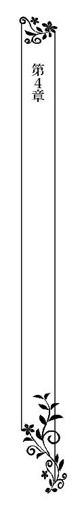
レイモンドがまだ帰ってこないために、ジェラルドも仕事をせずにはいられなくなってしまったらしい。朝食を終えると、ジェラルドはリネットの身体のことを心配しながらも、執務室に入ってしまった。
ジェラルドのおかげで、召使いたちはリネットの身支度のときにもベッドメイキングに関しても余計なことは一切言わなかった。ただグレイだけはリネットたちを見つめる瞳が、とても嬉しそうに細められていたような感じがする。
ジェラルドが執務室にこもってしまったためにリネットは特に何もすることがなく──ちょうど考え事をするにはいいとして、図書室に向かった。
ソフィーの具合はまだ治らないらしく、アリシアとともにまだこの館に留まっている。アリシアも今は母親の傍に付き添って刺繍をしているとのことだった。
公爵家の図書室というだけあって、広い室内を埋め尽くすようにして天井まで届く本棚がある。本棚にはきっちりと本が並べられていて、実に壮観だ。本好きというほどでもないが、この光景を見るとどんな知識が詰まっているのかとワクワクする。
特に本を読むつもりはないため、リネットは画集の一つを手に取って窓側に用意されているソファセットに腰を落ち着かせる。
とある童話の世界を場面ごとに描いたものだった。ファンタジックなイラストは、何も考えずにそれを見るだけならば、リネットの心を躍らせただろう。だがジェラルドと自分のこと、その他のことを考えながら眺めているため、あまり頭の中には入ってきていない。
（私は、これからどうしたらいいんだろう）
ジェラルドは、自分がしたいようにしていいと言ってくれる。だから何を選ぼうともどうしようとも、ジェラルドは何も言わずにそのための手助けをしてくれるのだろう。その包み込むような優しさにくるまれていれば、自分は間違いなく幸せになる。
（でもその幸せは、ジェラルドさまの犠牲の上に成り立っているのではないの？）
ジェラルドだけにその身を負わせるのは、卑怯だ。けれどジェラルドがここまできちんと繋いでくれていたオールブライト家に、自分という異分子が入り込んでしまって大丈夫だろうか。
気持ちだけでは、どうにもならないことがある。それをリネットは自分なりに理解しているつもりだった。
（でも、ジェラルドさまだけにお任せし続けるのだけは嫌だわ......！）
リネットは胸元を押さえる。
掌の下に感じることができる固い感触は、指輪のそれだ。リネットはそれを握りしめる。
（母さん......私、ジェラルドさまにだけ辛い想いをさせたくないの）
リネットは画集を閉じると、図書室を出た。時間的にそろそろジェラルドのために茶を用意する頃合いだった。
もちろんジェラルドから頼まれたわけではなく、ただジェラルドのために何かをしたいと思ってのことだった。
厨房に向かうと、料理長や召使たちがまたかという顔でリネットを見返す。チクチクと肌を刺してくる視線に何も感じないわけではなかったが、リネットはなるべく気にしないようにちゃんと断りを入れてから茶の用意を始めた。
一緒に朝のうちに作っておいたクッキーも皿に乗せた。多めに作っておいたのは、厨房を借りているお礼として召使いたちに渡すつもりだったのだ。
「あの......これ、よかったら皆さんで食べてください。厨房を使わせていただいたお礼です」
召使いたちはリネットの言葉に訝しげに眉根を寄せる。そんな気遣いをされる謂われはないというような冷たい態度だ。
ここではこうした気遣いも、何か裏があると思われてしまうのだろうか。
（こんなお屋敷では、駄目だわ。ジェラルドさまのお心が休まることなんて......ないわ......）
だがジェラルドの方は、そんなことをもう望みもしないだろう。
この屋敷くらいはジェラルドの心休まる空間であってほしい。......ジェラルドが自分とカレンと一緒にいるときのように。
ジェラルドがこの屋敷の当主の義理の息子なのだから、もっと自分に居心地のいい場所にすればいいのに、とリネットは思って──ハッとする。
（ジェラルドさまがご自分のことに興味がないのは......ここが、私の家だと思っているから......？）
自分の家ではなく、あくまでもリネットが継ぐべき家だと思っているから？
リネットは唇を強く引き結ぶ。ジェラルドの執務室の前にたどり着くと、リネットは思い悩んでいる顔を見せないよう、気持ちを切り替えるために軽く深呼吸する。
扉をノックするために軽く手を上げたとき、リネットの耳にジェラルドとグレイの声が聞こえた。
「......この書類は、私の方で......」
「......頼む。あと、これを......」
仕事の話に思えて、リネットはノックをするのをためらってしまう。このまま入ったら、邪魔をしてしまうのではないだろうか。
「──ジェラルドさま。こちらはリネットさまの......？」
「ああ。もし私と彼に何かあった場合、オールブライト家のすべてはリネットに渡るようにしてある。後見人も、私が信頼している者だ。心配はない」
（え......？）
思ってもいなかったことを聞いて、リネットは目を見開く。ジェラルドは万が一のことを考えてそこまで手はずを整えてくれているのか。
（私の、ために......？）
泣きたくなるような愛おしさを覚える。
こんなにも自分のためによくしてくれているジェラルドに、自分は甘えることしかできないのか。同じだけのことを、返すことはできないのか。
（愛は、与えられるだけじゃ駄目なんだわ）
与えられて、与えるもの。リネットの両親も、結果的には悲しい結末に終わったのかもしれないが、どちらも互いに迷惑をかけないようにしたが上の結末だ。
ならば自分は、ジェラルドに何を与えることができるのか。
（私は、ジェラルドさまのために何ができるんだろう）
ジェラルド一人にオールブライト家を任せていてはいけない。本来ならばそれは、自分が受け持たなければならないことなのだから。
（ねえ、母さん。私、やらなければならないことを見つけたわ）
リネットは溢れそうになる涙を飲み込んで、片手を上げる。そして改めて扉をノックした。
すぐにグレイが応えて、扉を開けてくれる。リネットの姿に少し驚いたあと、身を引いた。
「ジェラルドさま、お茶をお持ちしました。そろそろ一度休憩にされた方がいいような気がして」
「......リネット」
執務机の奥で、ジェラルドがすぐに立ち上がる。茶の一式を乗せたワゴンを押して、リネットはグレイに促されるまま室内に入る。ジェラルドがワゴンの上のクッキーを見て、微笑んだ。
「それ、君が作ってくれたのかい？」
「はい。ジェラルドさまがお好きなシナモンクッキーです」
ジェラルドがとても嬉しそうに笑う。その笑顔をいつでも見ていたいと思うから、リネットは決意を強くするのだった。
晩餐を終えたあと、リネットは少し躊躇いながらもジェラルドの部屋を訪ねてみた。
いくらジェラルドと心も身体も結ばれたとはいえ、こうして彼の部屋を訪れるのは不謹慎な気がしてならない。だが自分の決意をジェラルドに話すためにも彼とゆっくり二人きりになるには、今日はこのときが一番の機会だった。
一応誰にも見咎められないように、リネットはジェラルドの部屋を訪れる。館にはまだアリシアとソフィーが滞在している。特に何かがあるというわけでもないが、ソフィーなどに見られてしまったらジェラルドがひどく責められるだろう。
幸い誰にも見られることなく、リネットはジェラルドの部屋に辿り着くことができた。ノックをして来訪を伝えると、ジェラルドがひどく慌てた様子で扉を開けてくれた。
「何があった!?」
リネットのことをとても心配している表情に驚き、苦笑し、けれど嬉しくなる。リネットは安心させるように笑って、首を振った。
「いえ、何があったわけでもありません。ただ、ジェラルドさまとお話ししたいことがあって......あの、ご迷惑ではありませんか？」
「君ならいつでも大歓迎だ。おいで」
『恋人』になったからだろうか。ジェラルドの口調も視線も表情も、ドキドキするほどに甘くて優しい。自ら身を引いて招き入れてくれるジェラルドに今更ながらにときめいてしまいながらも、リネットは礼を言って室内に入った。
ジェラルドはまだ就寝の支度をしていなかったが、随分とくつろいだ格好になっていた。上はドレスシャツ一枚だけになり、胸元を寛がせている。その寛いだ場所から見える素肌に、リネットは慌てて目を逸らし、なるべくそちらを見ないようにする。
ジェラルドはリネットをソファに座らせ、自分もその隣に座った。
「改まって話とは、どうしたんだ？」
「......あ、あの......」
いざ話すとなると、どう切り出せばいいのかわからなくなる。今更オールブライト家の娘として名乗りをあげようとするなど、都合が良すぎると思われるかもしれない。リネットは両手を膝の上でぎゅっと握りしめたまま、すぐに話し出すことができなかった。
その手に、ジェラルドの手がそっと重なる。ジェラルドを見返すと、彼が優しい瞳でリネットを見つめていた。
「リネット、胸に溜め込むのだけはやめてくれ。どんなことでも、君のためならば力になる」
（ああ......私も、ジェラルドさまの力になりたいの）
リネットは勇気をもらって、口を開く。
「ジェラルドさま、私......オールブライト家の娘として、名乗りを挙げたいと思います」
「......リネット......!?」
ジェラルドにしてみれば、あまりにも意外な提案だったのだろう。すぐには次を続けることができず、茫然とリネットを見返している。
リネットはジェラルドの手を握り返した。
「お金のためではありません。権力のためでもないです。私はジェラルドさまのお力になりたくて......ジェラルドさまのお傍にいたいと、思いました。それにこのまま母さんのところに戻ってあの村で穏やかで優しい時間を過ごすことは、逃げてるだけなんじゃないかって思いました」
「リネット、そんなことは......」
「そうなんです。私はジェラルドさまに面倒なことや大変なことを押しつけてるだけなんです」
ジェラルドが首を振る。リネットは微笑みかけた。
「それは私が、好きでしていることだ」
「ありがとうございます。でもそれじゃ、いけないと思うんです。私はこの家の娘です。その事実から逃げていてはいけないんです」
ジェラルドの瞳を、まっすぐに見つめて言う。ジェラルドもリネットの目を逸らさずに見返した。
「君が思う以上に、貴族社会は大変なんだぞ」
「そうだと思います。でもそれは本当ならば私が受けなくてはいけないことです。それをジェラルドさまにばかり任せていてはいけないんです」
ジェラルドはリネットの言葉を黙って聞いている。戻る気はないと最初は言っていたのに今更こんなことを言ったから困っているのだろうか。
（でも、ジェラルドさまに全部任せきりにはしたくないの）
ジェラルドの片手が上がり、リネットの頰に触れる。優しく撫でながら、ジェラルドはため息をつくように言った。
「君はどうしてそう......面倒な道を選ぶんだ......。全部私が引き受けると言っているのに」
「ジェラルドさまの隣にいるのに、相応しい人になりたいからです」
リネットの答えにジェラルドは軽く目を見開いたあと、眩しげに瞳を細めた。そしてリネットの方に身を寄せながら呟く。
「君にはいつも、敵わない......」
ジェラルドの吐息が、唇に触れる。導かれるようにして目を閉じると、くちづけられた。
「ん......」
最初は優しく押しつけて啄むだけのくちづけだったが、リネットが幸せそうに微笑むといきなり激しくなる。
「ん......んあ、あん......んう......っ」
舌が口中をくまなく味わい、互いの熱くなった唾液を交わらせて飲み下す。まだこんなふうに深く激しいくちづけには慣れていないリネットは、すぐに顔を赤くし息を乱した。
ソファの上に崩れ落ちてしまいそうに身体を蕩けさせながら、リネットはジェラルドのくちづけを受け止める。ようやく唇が解放されると、リネットはたまらずにジェラルドの胸にぐったりともたれかかってしまった。
「あ......すみま、せん......」
「いや......私も、我を忘れた。まだ慣れてないのに、すまない」
そんなふうに謝ってくれるところが優しいと、リネットは改めて思う。リネットは微笑んだ。
「大丈夫です。私の方こそ慣れなくて......こ、こういうことをするのは、ジェラルドさまが初めてですから......」
慣れていないことが申し訳ないような気持ちにさせ、リネットは真っ赤になって俯いてしまう。ジェラルドはそんなリネットをじっと見下ろしたあと、何かを堪えるように息をついた。
「ジェラルドさま......？」
「あまり......可愛らしいことを言わないでくれ。我慢ができなくなる」
一体何を我慢して......と問いかけようとして、リネットはハッとした。ジェラルドが今、自分に男としての欲情を抱いていることに気づかされる。
リネットはさらに真っ赤になって、視線を彷徨わせてしまう。ジェラルドが苦笑し、リネットの前髪に優しくくちづけた。
「部屋まで送ろう。君をオールブライト家に迎え入れることについては、明日、ゆっくり話そう。......このまま一緒にいたら、私の理性が保ちそうにない」
声音はどこかおどけたものだったが、こちらを見つめる瞳には切迫した熱情が感じ取れる。自分を求めてくれていることがわかると、ふるりと快感に震えてしまった。
自分からこのまま一緒にいたいと伝えることは、はしたないだろうか。リネットは躊躇いがちにジェラルドの手に触れる。
「......リネット......？」
ジェラルドがもの問いたげに呼びかけてきた。リネットはそれ以上は何も言えず、俯きがちになりながらジェラルドの手をぎゅっと握りしめる。
数秒のあと、ジェラルドが言った。
「手を離しなさい、リネット。私の都合のいいように解釈するよ？」
（いいんです。そうして欲しい）
ジェラルドの手を握る力を強くする。ジェラルドが小さく息を詰めた直後、リネットの頰を両手で包み込みながら上向かせた。
唇を押し潰すようにくちづけながら、ソファに押し倒される。激しいくちづけに驚いて目を見開いたが、すぐに舌を搦め捕られて吸われ、目眩に似た感覚に呑み込まれてしまう。
ジェラルドは貪るようなくちづけを角度を変えて何度も繰り返しながら、もどかしげにリネットのワンピースの襟に手をかける。まるで生地を引き裂いてしまいそうな感じで、ジェラルドがリネットの服を脱がせていく。いつにない荒々しさにリネットは驚いた。
「ジェ、ジェラルドさま、待って......」
くちづけの隙間を見つけて、リネットはなんとか制止の声を上げる。熱い息をついて唇を少し離したジェラルドの瞳は、ギラついていた。
「待てない」
再びジェラルドの手が動き、リネットのコルセットの結び目を解いて緩める。押し下げて身体から脱がすと、今度はドロワーズも引き下ろしてしまった。
「ジェラルドさま、こ、ここ、で......？」
情事はジェラルドが初めてのリネットには、それをソファですることに戸惑ってしまう。ジェラルドはリネットの抗議を飲み込むように深くくちづけてから、言った。
「君がいいと言ってくれてるんだ。我慢できるわけがないだろう」
「で、でも、でも......」
「君が欲しくて堪らない」
ジェラルドの熱い言葉が、リネットの心を蕩けさせる。羞恥も一緒に溶けて、リネットはジェラルドの望むまま、ソファの上で一糸纏わぬ姿になった。
脱がされている間に感じる場所のすべてにくちづけられ、吸われて、舐められる。リネットの抵抗を溶かしていく愛撫に息が乱れ、秘密の場所がしっとりと濡れていく。
充分に蕩けた蜜壷に、ジェラルドの指が触れた。濡れ具合を確認してから花弁を広げ、張り詰めた男根を押しつける。
「あ......あっ」
熱く固く張り詰めているその感触に、リネットは身震いした。初めてのときとは違い、ジェラルドはリネットの細腰を両手でしっかり掴んで腰を押し進めてくる。
リネットが本能的に逃げようとしても捕らえる仕草だ。ずぷり、と入ってくる圧迫感に、リネットは仰け反る。
「......ああっ！」
ジェラルドへ捧げるように突き出された乳房に、むしゃぶりつかれてますます感じる。ジェラルドは舌を乳首に絡めてぬめぬめと舐め回しながら、腰を打ちつけた。
「ああっ！ あっ!!」
革張りのソファは、律動に激しく軋む。ジェラルドはリネットの蜜壷の最奥を突き破らんばかりの勢いで腰を振った。
「は、あ！ ああ、あっ！ んあっ!!」
あまりの激しさに、リネットの喘ぎが悲鳴のそれに近くなる。髪が乱れ、ソファから流れ落ちた。
「君の乱れる姿は、とても綺麗だ......」
ジェラルドが穿ちながらうっとりと呟く。恥ずかしいのに感じてしまい、リネットは蜜壷を締めつけた。
ジェラルドの息が詰まり、男根が質量を増す。
「あ......ん、ん......大き、い......っ!!」
「君が、そうさせてる......ああ、リネット......！」
「んあ、あっ、ああっ!!」
普段のジェラルドとは別人ではないかと思うほどに、律動は激しい。リネットはソファの肘置きに身体をずり上がらせてしまいそうになる。
ジェラルドがそれすらも許さないというようにリネットの背中に手を回し、強く引き寄せた。上体を起こされて、ジェラルドと向かい合う。
鼻先がもう少しでぶつかってしまうかと思ったほどに近い。自然とリネットはジェラルドの膝に跨るような格好になる。
「あ......っ！」
挿入角度が変わり、ジェラルドの脈動を今まで以上に強く感じる。リネットはジェラルドの肩口を強く掴んだ。
ジェラルドはリネットの細くしなやかな身体を抱きしめて、腰を揺すり上げ始めた。
力強いジェラルドの突き上げで身体が浮き、戻る。自重が加わり、子宮口に一気に亀頭が入り込んでくるのが堪らない。
「あ......ああっ、んあっ」
長い髪を乱し、律動に合わせて胸の膨らみを揺らして、リネットはついに快楽だけを追い求める。それはジェラルドも同じらしく、リネットにくちづけながら激しく突き上げてきた。
ぴったりと密着しての突き上げのため、リネットとジェラルドの胸が擦れ合う。逞しい胸板に乳首が擦られ、その気持ち良さも堪らない。
「あ......あ、あっ!!」
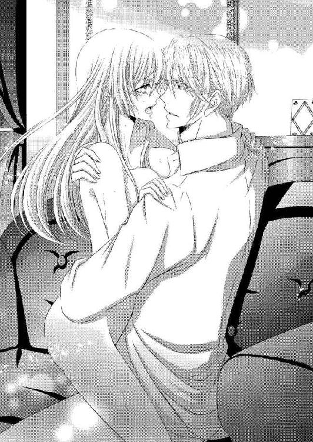
ジェラルドの動きがさらに速くなる。壊されてしまうのではないかと思った直後、同時に絶頂が来た。
「んあ......あああっ!!」
「......っ」
ジェラルドの腰を自然と両脚で挟み込みきつく締めつけながら、リネットは身を震わせる。ジェラルドもリネットの身体を息苦しくなるほどに強く抱きしめて、身震いした。
熱い精の衝動が、リネットの蜜壷を満たす。
「あ......はあ、は......っ」
その衝動は、リネットが驚くほどに続いた。ジェラルドはようやく大きく息をついて抱擁の力を緩める。
互いに激しく乱れた呼吸を繰り返しながら、どちらからともなく唇を重ねる。
「......すまない。こんなところで......」
「謝らないで、ください。私はジェラルドさまがこうして求めていただけることが、嬉しいんです」
ジェラルドが微笑み、リネットの目元にくちづけた。
「嬉しいのは私の方だ。君が、オールブライト家に戻る決意をしてくれたんだからな」
ジェラルドは情事で火照った身体を柔らかく包み込むように抱きしめてくれる。リネットは頼り甲斐のある広い肩口にそっと頰を押しつけた。
「義父が戻るにはまだ少し時間がかかる。その間にできることをしよう」
ジェラルドの手が、髪を撫でる。うっとりとしてしまいながら、リネットは問いかけた。
「できること......ですか？ 何ですか？」
「君を、立派なレディにすることだ」
ジェラルドはどこか楽しげな口調で続ける。リネットが不思議そうな顔で見返した。
「君に、公爵令嬢としての勉強を始めてもらう。カレンさんにも教わっていたようだが、もっとしっかり徹底的にやろう。マナー、ダンス、会話術......必要な教師をつけよう。もちろん、私自身も教える。頑張ってくれるかい？」
不安がないといえば、嘘になる。それでも自分で決めたことだ。リネットは決意を込めた顔で、力強く頷いた。
「頑張ります。よろしくお願いします」
律儀に頭を下げたリネットに、ジェラルドは嬉しげに笑う。こんなに感情豊かなジェラルドの笑顔を見るのは初めてで、リネットは思わず見惚れてしまった。
ジェラルドがリネットを改めて深く抱きしめる。
「愛している、リネット」
私もです、と答えようとしたリネットの言葉は、ジェラルドのくちづけに吸い取られてしまった。
オールブライト家に戻るための書類上の手続き準備は、ジェラルドが極秘に進めてくれることになった。このことは、部下の中でもグレイにしか知らせていない。アリシアとの婚約を最終的には解消することになることもあり、滞在中の彼女とソフィーにはまだ知らせないこととした。リネットを友人として優しく接してくれるアリシアにまだ話せないことはひどく心苦しかった。
アリシアにもマナーなどを教えてもらえないかと相談してみると満面の笑みと二つ返事で引き受けてもらえた。
「でも、急にどうしたの？」
「こ、この間のパーティに連れていってもらって、あまりにもみっともない感じがして......ジェラルドさまともしまたパーティに行けたときに、少しでも恥ずかしくない思いをしたいんです」
話した気持ちに、嘘はない。オールブライト家に戻るにしても、貴族令嬢としての最低限の教養を持たなければ、結局ジェラルドに迷惑をかけてしまう。
リネットの言葉に、アリシアは感動したようだ。リネットの手を両手で包み込み、励ますように握りしめる。
「わかったわ！ リネットが帰るまで、精一杯教えるわ！」
「ありがとうございます、アリシアさま」
「いいえ。私はあなたのジェラルドさまを想う気持ちに感動したの。あなたみたいな人だから、ジェラルドさまもとても大切にされるんだと思ったわ」
アリシアの飾らない褒め言葉に、リネットは顔を赤くしてしまう。そんなに自分はジェラルドばかりを見ているのだろうか。
「本当に......あなたとジェラルドさまが一緒になれればいいのに」
「何を馬鹿なことを言っているの」
鋭い針のような尖った声が、サロンの中に突然投げ込まれる。
ビクリと反射的に震えてしまいながら、リネットはアリシアとともに声を振り返った。先にリネットたちがいるにも関わらず、そんなことはまったく気にせずにソフィーが入ってくる。
扉の近くに控えていた召使いが一礼して扉を閉め、下がっていった。場を弁えて出て行ったというよりは面倒ごとに巻き込まれたくない感じがする。
ソフィーはつかつかとこちらに歩み寄り、アリシアの隣に座った。
「私の娘と何を勝手に仲良くしているの？」
「お母さま、そんな......！」
「娘は由緒正しきオールブライト家の血を継ぐ者よ。ジェラルドがいなければ血の濃さからいってもレイモンドの後継者はアリシアになるの。あなたのような村娘は、そもそもアリシアと出会うことすらできないのよ」
ソフィーの口調はとても高慢で、盲目的だった。確かにその通りなのだろうと、他者に思わせる。こんなことがなければアリシアと出会うこともなかったのだ。
何かを言い返したいのに、上手く言葉が出て来ず、リネットは緩く唇を噛み締めて俯いてしまう。
ここで自分はレイモンドの娘だと宣言するのも違う気がする。血はオールブライトのものでも、今の自分では公爵令嬢としての自信が何もない。
「お母さま、そういう言い方はやめて。リネットは......」
アリシアが母親の暴言を窘めようとしてくれている。リネットはアリシアのためにもと、笑みを浮かべた。
「出過ぎたまねをして申し訳ありません。アリシアさまがお優しくしてくださるので、甘えてしまいました」
「リネット、そんな言い方は悲しいわ」
俯くアリシアに、リネットは安心させるように笑いかける。ソフィーは自分の予想以上にリネットたちが友情を育んでいることに気分がよくないらしく、顔をしかめる。
「お母さま、私がリネットのためにしたくてしていることなの。どうかお許しになって」
「オールブライト家の次期公爵夫人がそんなことでどうするの。村娘とは生まれも育ちも違うのよ？ 一緒に考えてはいけません」
同じ人間とすら扱ってはいないようなソフィーの言葉に、リネットは怒りよりも寂しさに似た気持ちを覚えてしまう。その表情を見てアリシアは申し訳なさげな顔をしたが、ソフィーは当たり前だと傲慢な態度を崩さない。
ここで険悪な雰囲気になるわけにもいかず、リネットは気を取り直してソフィーに笑いかけた。
「あの、よろしければこちらのお菓子はいかがですか。私が作ったんです」
リネットはテーブルの上の菓子をすすめる。大皿の上にはクッキーやマドレーヌ、スコーン、プチタルトなどが載っていた。ジェラルドのために毎日のように作っていて、それをアリシアにもわけたものだ。
アリシアは菓子作りをしたことがないらしく、味も申し分ないそれらを驚きながらも美味しそうに食べてくれている。
「ぜひ食べてみて、お母さま。リネットの作るお菓子はとても美味しいのよ」
「まあ」
ソフィーは笑って皿に手を伸ばす。菓子のおかげで少しは和やかな雰囲気になるかと思えたが、リネットの予想は粉々に打ち砕かれてしまった。
ソフィーは皿を手に取ると、中身を床に滑り落とす。
「いけません、アリシア。どんなものが入っているかわからないわ」
「......お母さま！」
アリシアが慌てて窘めようとする。リネットは何をされたのかがすぐにはわからず、茫然と床に散らばってしまった菓子を見下ろした。
ソフィーが立ち上がる。
「そもそも貴族の令嬢が菓子作りなんてしません。根本的にこの子は貴族社会に住む人物ではないのよ」
「──当たり前です。彼女はそうした穢れから一切離れたところで暮らしていたのですからね」
ノックの音もなく、ジェラルドが姿を見せる。麗しの立ち姿を認めると、リネットは危うく泣いてしまいそうになった。
ジェラルドはよく手入れされたナイフのように鋭い瞳をソフィーに向ける。視線に射抜かれたソフィーは、一瞬身震いした。
「リネットは私たちとは違う。彼女は私たちよりももっと純粋で、美しい心を持っているんです」
考え過ぎかもしれないが、ジェラルドを睨むソフィーの瞳には殺意にも似た光が宿っていて、リネットの背筋を震わせた。
「随分とこの子が気に入っているようね」
ジェラルドは答えないが、微笑する。ソフィーは忌々しげにリネットを睨んだあと、サロンを出ていった。
妙に張り詰めた空気がなくなって、リネットは思わず大きく息をついてしまう。
「あ、ありがとうございます、ジェラルドさま......」
「謝るのは私の方だ。嫌な想いをさせてしまってすまない」
「ごめんなさい、リネット」
ひどく申し訳なさげに言ってから、アリシアが落ちた菓子を拾い始める。リネットもジェラルドとともに、拾い始めた。
気にならないわけでもなく、胸が痛まないわけでもない。それでもジェラルドとアリシアが気遣ってくれるのが嬉しいから、リネットは笑顔になれる。一人でもこんな風に優しくしてくれる人がいれば、気持ちも落ち着くものだ。
「ありがとうございます！ 私は大丈夫です！」
「リネット。今夜は一緒に眠ろう」
その日、夕食を終えて就寝の準備をしていた頃、ジェラルドがリネットの部屋を訪れて提案してきた。
リネットにとってはかなり衝撃的な提案だ。恋人として結ばれてはいるが、アリシアとソフィーが滞在している間に頻繁に睦み合うのははしたないような気がする。
「あ、あの、ジェラルドさま、それは......！」
「......すまない。嫌かい？」
「い、嫌じゃありません！ た、ただ、アリシアさまたちがお泊りになっているのに頻繁に夜、一緒にいるというのは、は、はしたなくないですか......？」
自分はどう言われても構わないが、ジェラルドが自分のせいで悪く言われるのは嫌だ。
ジェラルドは一瞬何を言われてもいるのか理解できていないように軽く目を見開いたあと──苦笑した。
「ああ......すまない。そういう意味ではなかったんだ。君のことが心配で」
「心配......？」
今度はリネットが小首を傾げてしまう。ジェラルドが頷いた。
「ソフィーのことが気になる。君に、何かしてこないかと思っているんだ」
ジェラルドの言葉に、リネットは目を見張った。ジェラルドは申し訳なさそうにリネットの頰に手を伸ばす。
「私が君に執着していることを、ソフィーはわかっている。アリシアを使ってオールブライトの利権の多くをもうすぐ手に入れられると思った矢先に、君が現れた。君がいなくなれば済むと思ったとしても、おかしくない」
いなくなれば──それは、殺されることもあり得るということか？ リネットはジェラルドが警告する可能性の一つに、身震いする。
（怖いわ。権力やお金が、そんなふうに人を変えてしまうなんて......）
だがここに残ると決めて、ジェラルドの傍にいたいと願ったのは、自分だ。リネットはジェラルドの掌に自分から頰を押しつける。
「大丈夫です、ジェラルドさま。ジェラルドさまと一緒にいたいと願ったのは、私もです。だから、ご自分が悪いとだけは思わないでくださいね」
リネットの言葉にジェラルドは嬉しげに笑って、柔らかいくちづけをくれた。激しくなる前にジェラルドは少し残念そうに唇を離す。
「駄目だな。これ以上したら、君が欲しくなってしまう」
ジェラルドの求めに応じたいが、恥じらいがリネットを口ごもらせる。ジェラルドはリネットをベッドへと促した。
「早く眠ろう。私が君を求めないうちに」
ベッドは二人で横たわっても充分な余裕のある広さだ。身を寄せなくても大丈夫なのだが、どちらからともなく腕を伸ばし、柔らかく抱きしめ合って横たわる。
ネグリジェは襟元が丸く深めのもので、リネットのペンダントになっている指輪が見える。ジェラルドは鎖から指輪を取った。
「この指輪が、君がオールブライトの令嬢として戻るための最大の証だ」
「はい。公爵さまから母さんに贈られたお揃いの指輪ですね。公爵さまと母さんの愛の証......」
指輪を持つジェラルドの手に、リネットも自分の手を重ねる。ジェラルドが頷いた。
「そうだ。この指輪は、君が持つに相応しい」
ジェラルドが鎖を外し、指輪を抜き取る。そしてリネットの左手を取ると、指輪を薬指にはめてくれた。
何だか儀式のようにも思えて、ドキドキする。ジェラルドはリネットの左手を引き寄せ、指輪にくちづけた。
「君を、愛している。君への愛を、この指輪に誓おう」
溢れそうな想いが込み上げてきて、リネットは思わずジェラルドに抱きついてしまう。ジェラルドが驚いたのか小さく身を震わせた。
「リネット？」
「私も......私もジェラルドさまのことを愛してます。この愛が、永遠です！」
心に降り積もるジェラルドへの想いをどう表したらいいのかわからなくてもどかしい。だから随分と大げさな物言いになっていても、恥ずかしくなかった。
ジェラルドの腕がリネットの身体に回り、息苦しいほどにきつく抱きしめてくる。リネットも夢中でジェラルドの背中に腕を回し、抱きついた。
二人で想いを交わすように抱き合っているだけでも、心が満たされる。リネットはジェラルドの胸に顔を埋めて、目を閉じた。
温かくて優しい眠りがやって来るのは、すぐだった。
ふと目が覚めたのは、喉の渇きのせいだった。リネットは瞳を開き、そっと上体を起こす。
すぐ隣にいるジェラルドを起こさないように無意識に気を遣いながら動いていたため、彼が目を覚ます様子はなかった。リネットはジェラルドの寝顔を見下ろし、その安らかな表情に微笑む。
まるで小さな子供のように無防備な表情で、ジェラルドは眠っている。以前にもリネットの家でうたた寝をしたときなどの寝顔を見たことはあったが、こんなに安らいでいる顔を見るのは初めてだった。ジェラルドにこの顔をさせることができたことに、リネットは堪らない愛おしさを覚える。
額に散っている淡い金の前髪を指で優しく払ってやり、リネットはそっとくちづける。ジェラルドにとってはとても居心地のいい眠りらしく、リネットの悪戯に目を覚ます様子がまったくなかった。
リネットはもう一度微笑むと、ベッドからそっと抜け出す。そして厨房に向かって歩き出した。
部屋を出る前に時計を確認しておいたが、大抵の者が眠りにつく時間だった。自然とリネットは足音と気配を殺して、厨房に向かう。屋敷が広すぎるせいか、何だか怖い。
床から天井まで届く大きな窓が並んでいる廊下を進むと、階段がある。緩やかな螺旋を描くそこを降りて使用人棟まで行けば、厨房はすぐだ。召使いを呼んで水を持って来させようとする考えは、リネットには始めからない。
（ジェラルドさまも喉が渇かれてるかも......水差しに入れてお部屋に持っていこう）
そんなことを思いながら、リネットは進む。
階段にさしかかったところで、リネットは前方に人影を見つけた。こんな時間に誰だろうと姿を確認して、ドキリとする。
寝間着の上にガウンを羽織っただけのソフィーが、佇んでいる。まるでリネットがこの辺りにやってくるのを待ち伏せていたかのようだ。
（そんなことがあるわけないわ......だとしたら、私のことをずっと監視していたってことじゃ......）
ぞくりと悪寒のようなものを感じて、リネットは身震いする。ジェラルドの警告が思い出された。
ソフィーが、オールブライト家の権力と財産を狙っていることを。
厨房には行かず、このまま部屋に戻った方がいい。とはいえソフィーのことを無視して立ち去れば、ジェラルドが何か言われてしまうかもしれない──リネットはガウンを軽く摘んで腰を落とす。アリシアの授業で教わった礼だった。
「ソフィーさま、こんばんは。どうかいたしましたか？」
淡い灯りを持ったまま、ソフィーはリネットをじっと見つめている。視線の強さに、リネットは息を詰まらせた。
「あの......失礼します」
返事が来ないならば無理に引き出すこともない。ソフィーの前からさっさと立ち去ればいいだけだ。リネットはそそくさと自室に戻ろうとして、ソフィーに呼び止められてしまった。
「今、宝石の輝きが見えたわ。指輪かしら？」
ギクリと身体が強張ってしまう。リネットはそれを悟られないよう気をつけながら、左手を胸に抱きしめた。
「いいえ、特に何も着けてはいませんが......」
我ながら何とも子供じみた誤魔化し方だ。だが今のリネットにはこの程度の策しか思いつけない。
ソフィーがリネットの方におもむろに歩み寄ってきた。
「私の目は誤魔化せないわよ。今、お前は指輪を隠したでしょう」
目敏さに驚きながらも、リネットは取り繕うように笑う。右手で左手を隠しつつ、指輪を引き抜こうとした。引き抜いて、ガウンのポケットにでも隠さなければいけないような気がする。
「申し訳ございません、ソフィーさま。何のことを仰っているのか私には......」
「指輪を渡しなさい！」
痺れを切らしたソフィーが、威圧的に言いながら手を伸ばしてきた。まだ指輪を引き抜くことができなかったリネットは、一歩退こうとしたものの、ソフィーに左手首を掴まれてしまう。
何かの執念が成す力なのか、万力のように強い力で、痛みを覚えるほどだ。リネットは顔を顰めてソフィーから離れようとするが、できない。
ソフィーはリネットの左手を眼前に引き寄せて指輪を確認する。
「ああ、間違いないわ......この指輪！ お前、カレンの娘ね!?」
ソフィーが確信を持ってリネットに言う。ソフィーの瞳は忌々しげにリネットを強く睨みつけていた。
「お前の顔を見たときに、感じたのよ。お前にはカレンの面影があったもの。違うとは言わせないわよ!?」
ソフィーの言葉の力にリネットの心は本能的な怯えを抱いて、後ずさってしまう。だがソフィーの手は離れない。それどころかますます強くなっていく。
「ソフィーさま......離してください......！」
「今さら指輪を持って出てくるとはどういうこと!? お前の母親からオールブライト家を手に入れろとでも言われたの!?」
「......っ!!」
怒りの衝撃が、リネットの心を撃つ。
自分のことをどうこう言うならばまだしも、母親を馬鹿にするような言い草は許せない。カレンはただ娘の今後のためにと指輪を託したのであって、オールブライト家を乗っ取るつもりなどまったくないのだ！
リネットはソフィーを強く見据える。
「母はそんなこと、わずかも考えていません。自分の今後のことを考えて、私のためにこの指輪を渡してくれたんです！」
リネットの真っ直ぐな瞳に射抜かれたようにソフィーは息を呑んだものの、言われたことで気がついたのか、目を見張った。
「カレンは死ぬの？」
「......っ」
リネットは答えない。その沈黙が、ソフィーに答えを教えていた。
ソフィーが直後、弾けるように笑う。
「そうなの、あの女、死ぬのね！ たかが男爵令嬢風情が、オールブライトに入れるなんておこがましいのよ。オールブライトにはオールブライトの血だけがあればいいの!!」
ソフィーの演説に、リネットは目眩を覚える。これではまるで、自分よりも身分の低い者は同じ人間ではないと言っているようなものだ。
（こんな......こんなのって......っ!!）
ソフィーに何か言い返したいのに、上手く言葉が出てこない。リネットが反論できないでいると、ソフィーはさらに手に力を込めた。
「指輪を渡しなさい。この指輪はお前には行き過ぎたものよ」
ソフィーの反対の手が伸びて、指輪を外そうとする。
『君を、愛している。君への愛を、この指輪に誓おう』──ジェラルドの気持ちが踏み躙られるような気がして、リネットは左手を握り込んで阻んだ。
ソフィーがぎらつく瞳で見返す。その狂気にも似た視線に怯んでしまいそうになりながらも、リネットは踵に力を入れてソフィーを真っ直ぐに見つめ返した。
「嫌です。この指輪は、母さんと公爵さまの思い出の品です。二人が想い合った証なんです。あなたにだけは、絶対に渡せません......！」
ソフィーの顔が、怒りに歪む。
「わかったわ。ならこの左手を切り落としてあげましょう。来なさい！」
ソフィーがリネットを引きずるようにして階段を降りようとする。厨房にでも行き、包丁で本当に切り落とすつもりなのだろう。
リネットは自分を守るために懸命に抵抗する。
「嫌です、離して......っ!!」
「いいから来なさい！」
二人でもみ合いになる。そこに、ジェラルドの鋭い声が投げ込まれた。
「何をしているんだ、ソフィー!!」
声を見返せば、必死の顔のジェラルドが駆けつけてくる。その後ろには、グレイが続いていた。彼が、ジェラルドにこの状況を伝えてくれたのだろう。
「ジェラルド......!?」
ここでジェラルドが駆けつけるとは思っていなかったのか、ソフィーが慌てる。もみ合っていたせいか、ソフィーの身体がリネットを突き飛ばすようにしてジェラルドに向き直った。
「ジェラルド、これは」
「リネット!!」
ジェラルドが叫ぶ。自分の身体が浮遊感に包まれ、身体が斜めに傾ぐのがわかった。
（落ち、る......っ!!）
周囲の景色がゆっくりと流れ落ちていく。その中で、青ざめたジェラルドが必死に手を伸ばしてきた。リネットも応えるように手を伸ばす。
（あ......駄目。ジェラルドさまを巻き込んでしまう......っ）
触れそうになった指を、リネットは握り締める。ジェラルドの瞳が大きく見開かれ、両手がリネットを抱き込んできた。
「......っ!!」
ジェラルドの胸に深く包み込まれた直後、衝撃が身体を突き抜ける。
息が詰まり、リネットは身を強張らせた。だが、思った以上の衝撃ではない。それに驚きながら恐る恐る目を開けて──リネットは声にならない悲鳴を上げた。
自分を抱きしめたジェラルドの身体が、下敷きになっている。階段から落ちたリネットに少しの痛みしかないのは、ジェラルドが庇ってくれたからか。
「ジェラルドさま!!」
ジェラルドはぐったりと横向きに倒れたまま、ぴくりとも動かない。リネットは思わず両手を伸ばしてジェラルドの身体を揺さぶろうとする。それを駆け降りてきたグレイが止めた。
「いけません、リネットさま！ 頭を打っているかもしれませんから、安静に!!」
ビクリと動きを止め、リネットは泣きそうな顔になる。
「グ、グレイさん......ジェラルドさまが......ジェラルドさまが！」
取り乱してしまって、何を言えばいいのかわからない。グレイはリネットを安心させるように頷くと、ジェラルドの傍に膝をつき、容体を確認した。
その頃には騒ぎに気づいた召使いたちが、何事かと駆けつけている。その中にはアリシアもいて、状況を認めると真っ青になって母親に詰め寄った。
「お母さま！ これはどういうことですか!?」
娘の声にハッとしたソフィーが、ツンと顎を逸らす。
「私は何もしていないわ。あの子たちが勝手に階段から落ちただけよ。私は何も悪くないわ」
リネットの胸に、強烈な怒りがやってくる。リネットは涙目でソフィーを睨みつけた。本当はソフィーを今すぐ断罪したいが、今は何よりもジェラルドのことが心配だ。
リネットは召使いたちとともにジェラルドを運ぶ。グレイが先に立ち、召使いたちに様々な指示を与えた。
アリシアはこのことに何かを感じたのか、母親の片腕をしっかりと掴んでくれている。リネットは運ばれていくジェラルドについていった。
自室に運ばれたジェラルドは、グレイが呼んですぐに駆けつけたオールブライト家の主治医の診察を受けて、大事には至らないと診断された。普段からの疲労もあるのだろうとも言われ、ゆっくり休ませるのが一番の治療だとも指示を受け、ひとまずホッとする。
グレイたちが交代で容体を見守ってくれたが、リネットもジェラルドの傍を離れなかった。死んだように眠るジェラルドの寝顔に時折どうしても不安になってしまったが、自分を励まして一晩を過ごす。
朝が来ていつもの朝食の時間になってもジェラルドが目覚める様子はなく、リネットはまた不安になってしまった。
「ジェラルドさま......」
そっと呼びかけながら、ジェラルドの頭を撫でる。結局まだ指輪を嵌めたままだったことに気づいたとき、ジェラルドの瞳が開いた。
夢と現を行き交った直後のように、ジェラルドの瞳はぼんやりしている。リネットが慌てて顔を覗き込むと、ジェラルドがその姿を認めて──小さく笑った。
「......ああ、おはよう、リネット」
ジェラルドの朝の挨拶は、いつも通りだ。特別なものではないからこそ、リネットは嬉しくなる。
「はい、おはようございます、ジェラルドさま......！」
ジェラルドが軽い頷きを返して、ベッドから身を起こした。リネットは慌てて止めようとするが、ジェラルドは首を振る。
「少しあちこちが痛むが、動けないわけじゃない」
「でも......！」
「私のことはいい。リネット、君はどこも怪我はしていないか？」
自分のことを優先してくれる優しさに、リネットは思わず泣いてしまう。一晩ジェラルドの容体を見守っていたときの不安から解放され、気が緩んでしまったらしい。
こんなふうに泣いたら、ジェラルドが心配する。リネットは慌てて涙を拭った。
「すみま、せ......」
「リネット」
ジェラルドがリネットを引き寄せる。床に膝をついて傍にいたリネットの涙に、ジェラルドは優しく唇を押しつけた。
押し当てられた唇は優しく、温かい。それがますますリネットの涙を溢れさせる。
ジェラルドが顔を覗き込んで言った。
「すまない。心配をかけてしまったな......」
「ジェラルドさまが無事ならいいんです。すみません、安心してしまって......」
ジェラルドが小さく笑い、リネットの頰や目元、額に柔らかいくちづけを与えてくれた。おかげで徐々に落ち着いてくる。
「朝食の時間になってます。何か食べられますか？」
「いや、その前に着替える」
てっきり今くらいはゆっくりするのかと思っていたリネットは、驚いてしまう。
「ジェラルドさま、まさかお仕事を......？」
「いや。ソフィーに話がある。リネット、君も着替えてくれ」
ジェラルドの言葉は凛としていて、厳しい。オールブライト家後継者としてのジェラルドだ。
リネットは小さく頷き、身支度を整えるために退室しようとした。その背中に、ジェラルドが言う。
「指輪は嵌めたままにしていてくれ」
「え......？」
いいのだろうか。この指輪を嵌めていることは、レイモンドの娘であるとソフィーたちに教えることになる。
ジェラルドはベッドから降りながら、強く頷いた。
「オールブライトの正統な後継者が誰なのかを、彼女にはっきり教えてやらなければならないんだ」
ジェラルドがリネットのために仕立ててくれたドレスの一着を着て、髪もきちんと整える。召使いたちの手を借りて身支度を終えた姿は、こうして見る限りでは公爵令嬢だ。何度鏡を見ても不思議な感じがする。
しかも何だか今日のドレスはこれまでのものよりも少し豪華に見える。身支度を終えたリネットは、召使いの案内でジェラルドが待っているという客間に向かった。
部屋に入ると、ソファセットにジェラルドが座っていた。二人がけの片方には、誰もいない。
ジェラルドの向かいのソファには、アリシアとソフィーがいる。二人とも昨夜の騒動のこともあり、アリシアは緊張した面持ちで、ソフィーは苛立ったような怒りの表情をしていた。
リネットの姿を見ると、ソフィーは鋭く睨みつけてくる。リネットに対する敵意を隠すつもりはまったくないようだった。
アリシアがリネットの姿を見て、感激の言葉をくれる。
「まあ、リネット。とても素敵なドレスね」
自然と氷のような空気になる場を和ませるために、アリシアなりに考えての会話だとわかる。リネットはその気持ちを裏切らないように、笑顔で答えようとした。だがそれよりも早く、威圧的な声でソフィーが言う。
「おやめなさい、アリシア。村娘なんかと仲良くしたら、あなたの血統が穢されてしまうわ」
「お母さま、そんなふうに言わないで」
（血統）
リネットは何とも言えない複雑な気持ちになる。
オールブライトの血筋の純粋さを言うならば、リネットの方がアリシアよりも上だ。だがどんなに美しいドレスで着飾っても、村娘と変わらないのだ。
（だったらそれでもいいじゃない）
リネットは、俯きそうになった顔を上げる。
（私は私を恥ずかしいとは思わない。母さんが大切に育ててくれて、ジェラルドさまが愛してくれたのは今、この私なんだもの）
リネットの怯まない立ち姿を見て、ソフィーがさらに顔を顰める。そしてジェラルドに言った。
「いつまでこの娘で遊んでいるの、ジェラルド。あなたにはアリシアという立派な婚約者がいるのよ。こんな娘との火遊びが公になったりしたら、アリシアの体面にも傷がつくわ。いい加減になさい」
「叔母上。アリシアとの婚約は今、解消します」
ソフィーが、驚きに絶句する。アリシアも瞳を見開いたものの、傷ついた様子は見られなかった。むしろどこかほっとしたような顔に見える。
いつかはそうすると聞いてはいたが、今このタイミングだとは思ってもいなかったリネットもまた、どういう反応をすればいいのかわからず、続ける言葉を失った。
ジェラルドはリネットへと片手を伸ばし、自分の席を譲った。この場において、一番立場が上の者が座る位置である。ジェラルドはリネットの隣に座って左手を恭しく取った。
ソフィーに向かって、左手の薬指に嵌めた指輪を見せる。
「この指輪の持ち主が、彼女だ。レイモンドが愛したカレンの娘が、彼女なんだよ。ソフィー、あなたももう否定はできないだろう？」
「......っ」
ジェラルドの言葉に、ソフィーは唇を戦慄かせる。すぐには言葉は出てこない。
アリシアが、新たな驚きに目を見張った。
「リネットがレイモンドさまの娘......じゃあ、正式なオールブライト家の後継者は、リネット......!?」
「認めないわ！」
アリシアの言葉に触発されたかのように、ソフィーが叫ぶ。
「認めないわ......！ オールブライトの血筋に、下賤の者の血が入るなんていけないことなのよ！ ジェラルド、考え直しなさい」
「ソフィー、あなたが高貴なる血に固執していることは知っている。だがレイモンドが愛したのは当時、ただの男爵令嬢だったカレンさんだ。レイモンドはカレンさんの身分でも血筋でもなく、人となりを愛したんだ。彼にとってはカレンさんの身分が高くても低くても、関係ない」
「馬鹿なことを言わないで！ じゃあどうして私は今の夫と結婚させられたの!!」
ソフィーが激昂して続ける。
「兄様があんな勝手をしたから、私は今の夫のところに嫁がされたのよ!? それもすべてオールブライト家のためよ！ そうやって守り続けている血統が、兄様のせいで穢されるなんてこと、あってはいけないのよ!!」
（もしかして、ソフィーさまのご結婚は本当は望まないものだったのかしら......!?）
リネットはその可能性に気づいて、息を詰める。......ならば彼女にとって父の行動は『自分勝手』にしかならない。
血を続けなくてはいけないのに、カレン以外は妻にできないとしてジェラルドを迎えた。それは、家のための結婚をしたソフィーにとっては自分勝手で我儘な行動にしか見えないだろう。
リネットは唇を噛みしめる。ソフィーがジェラルドにしたことはとても許せない。だが、その動機については同じ女として、同情してしまうのだ。二つの気持ちに揺れて、リネットは何も言えない。
「認めないわよ、ジェラルド。あなたはアリシアと結婚してオールブライトの高貴なる血を保つのよ!!」
「あなたが認めなくても、彼は認めている」
彼、というのが誰のことなのか、今更質問する必要性もない。ソフィーがさらに反論しようとしたところで、部屋の扉が静かに開いた。
「──私が認める。反論は許さない」
「......っ！」
ソフィーの身体が、硬く強張る。アリシアが慌ててソファから立ち上がり、ドレスを摘んで深く腰を落とした。ジェラルドも立ち上がり、貴族としての礼をする。
出遅れたもののリネットもアリシアに倣って礼をした。......はっきりとまだ顔を見ていないが、ここにこうして現れてこんなことを言える人物は一人しかいないだろう。
「お帰りなさいませ、レイモンドさま」
アリシアが言う。リネットの身が、小さく震えた。
（レイモンド・オールブライト。私の、父さん......）
顔を上げたい。けれど、それがなんだか怖い。リネットはどうしたらいいのかわからずに、頭を下げたままだ。
足音が、リネットに向かってくる。そして自分の前で止まると、衣擦れの音がした。
レイモンドが、膝をついてきた。
（え......）
公爵という立場の者が、リネットに膝をついている。そのことに驚いて、思わず顔を上げてしまう。互いの顔が、正面を向き合った。
（この方が、私の父さん......！）
深い威厳を持つ面立ちだった。リネット同じ薄いブルーの瞳と亜麻色の髪をしている。その顔は、カレンから聞かされていたものと同じであると本能的に理解できる。
カレンが、愛した人。
レイモンドはじっとリネットの顔を見つめている。リネット自身を見て、その面影の中に居るカレンの姿を見ている。まだ何も言葉を交わしていなくとも、見つめられる瞳で彼の想いが伝わってきた。
薄いブルーの瞳に、淡い涙が浮かぶ。レイモンドはリネットに手を伸ばし、頬を優しく撫でた。
「美しい娘に育った......カレンとよく似ているのに、だが違う。それは、私の血がお前の中に入っているからか......」
「......私......」
何を言えばいいのかわからずに、リネットは口ごもる。ただ、涙が溢れてきて困った。言葉にできない想いが、熱い雫になって溢れていく。
レイモンドの指先がリネットの涙を優しく拭う。
「申し訳......ありませ......」
「謝る必要はない。だが、私では止められないか」
クスリと温かく笑って、レイモンドはリネットを立ち上がらせる。そしてジェラルドに言った。
「お前に任せよう、ジェラルド」
ジェラルドがリネットの身体を抱き寄せて、包み込むように目元に優しいくちづけを与えてくれる。アリシアがハンカチを取り出し、リネットに差し出した。
アリシアも必然的にリネットの傍に寄り添うことになって、ソフィーはまるで味方を失ったかのように見える。レイモンドは妹と対峙した。
「お前には辛い想いをさせてしまったようだな」
「......何を言っているのかわからないわ、兄様」
「私が我儘を貫いたために、お前は意に添わぬ結婚をすることになった。お前の結婚に対する少女らしい理想を打ち砕くには充分だったんだろう。......すまなかった」
レイモンドが潔く頭を下げる。ソフィーはそんなレイモンドをじっと見つめたまま、動けない。
「だが、私にはカレンだけだった。彼女以外を妻に迎えることがどうしてもできなかったんだ」
「......じゃあ、あの娘を認知しないで」
「それもできない。ソフィー、お前がこの家を手に入れようとして色々と画策していたことは、知っている」
レイモンドが顔を上げる。その瞳は鋭い刃物のように底光りをしていた。
「ジェラルドがアリシアを受け入れないことに対して不満を抱き、彼を殺害しようとしていたようだな」
「......っ」
ソフィーとアリシアが息を飲む。ジェラルド自身から話を聞いていたとはいえ、こうしてレイモンドの口から断罪するように言われると、リネットの心も衝撃に揺れた。
ジェラルドを見やれば、彼は落ち着いた微笑を浮かべている。レイモンドの言っていることが正しいと、その表情が教えていた。
「私の一番の教え子だ。自力で今まで乗り越えてきたが、今回は私の娘にも被害が及んだと聞いた。ソフィー、そのことに関しては妹の君を罰しなければならない」
「......兄様！」
ソフィーが青ざめる。アリシアがリネットの手を強く握りしめて、瞳を伏せた。母親を庇いたくても、これではできないのだろう。
リネットはアリシアの複雑な胸中を想って、その手を握り返す。ソフィーが何をしたとしても、アリシアはリネットにとっては優しい友人だ。それは変わらない。
「グレイ」
廊下に控えていたグレイが、数人の召使いを連れて姿を見せた。グレイは召使たちに命じて、ソフィーの身体を取り囲ませる。
「何を......」
「ソフィー、君は今後、オールブライト家への出入りを禁ずる。親族の集いにも出ることを許さない。もしもこの私の命令を無視したときには、それなりの罰が与えられることになることを、よく理解しておくように」
「兄様！」
「アリシアは、今まで通りで構わない。これから私の娘の心の拠り所となってくるだろうからな。......よろしく頼む」
「お受けいたします」
レイモンドの威厳に打たれたのか、アリシアの言葉は少し震えている。そうしている間にソフィーは召使いとグレイによって部屋の外に連れ出されてしまった。
パタン、と扉が閉じたあと、レイモンドはアリシアに向かって続ける。今度は背筋に冷たい汗を感じてしまうほどに鋭い瞳だった。
「アリシア、ソフィーが私の娘に関わることがないよう、君が監視をしてくれ」
頼みごとの口調をしていながらも、そこに含まれるものは明確な命令だ。アリシアは身を竦ませたあと、深く頷く。
「お受けいたします。母に温情をおかけくださり、ありがとうございます」
「アリシアさま......」
リネットはアリシアの気持ちを気遣って、そっとその身体を抱きしめた。アリシアはリネットの身体を抱き返したあと、微笑む。
「大丈夫よ、リネット。お母さまがジェラルドさまにしていたことを考えたら、このくらいのこと、大したことはないと思うわ。......ジェラルドさま、申し訳ありませんでした」
アリシアが深く頭を下げる。ジェラルドはそっと首を振った。
「大丈夫だ」
（優しい人）
ソフィーに実質的な攻撃をされていても、ジェラルドはアリシアのことを心配し、気遣っていた。その心の強さを、リネットは改めて尊敬する。
「私も母と一緒に家に戻ります。レイモンドさま、また改めてご挨拶に参ります」
レイモンドが頷き、アリシアはリネットたちに優雅な礼をしてから立ち去っていく。部屋に残された三人は、それぞれにソファに座った。
「お帰りは、もう少しあとだと聞いていましたのに......」
リネットが質問すると、ジェラルドが答えてくれる。
「君がオールブライトに戻ると決めたときに、父上に早馬を出して状況を教えていたんだ。私が倒れたときも、グレイがすぐに連絡してくれて、戻ってきた方がいいと判断してくれたんだ」
そういうことだったのかと、リネットは頷く。ジェラルドはリネットに向かって優しく愛おしげな微笑を向けながら、続けた。
「さあ、リネット。父上とたくさん話をして欲しい。今までのことやこれからのこと、カレンさんのこと......君が戻ってくると決意したことを、父上はとても喜んでいたんだ」
初めて会う父親と、何を話せばいいのか戸惑ってしまう。それでもこちらを見つめてくる瞳がとても優しいから、リネットはまずは自己紹介をすることにした。
「......は、初めまして、父さん。リネットです」
ソファに座りながらも、頭を下げながら言ったリネットに、レイモンドは破顔する。
「初めまして、我が娘。私はレイモンド・オールブライトだ。お前のことを、たくさん話して欲しい」
柔らかな声音に、リネットも笑う。話すきっかけができてしまえば、止まることなく言葉が溢れてくる。
そんなリネットとレイモンドのやり取りを、ジェラルドは温かい瞳で見守ってくれていた。
どれほど話しても、互いにとっての空白だった時間を埋めるには全然足りない。夕食の後もリネットは談話室でジェラルドを交えてレイモンドと話をしていた。
レイモンドはカレンに会いにいくことを二つ返事で引き受けてくれた。リネットがオールブライト家に戻ることを機に、カレンをこちらに呼び寄せることも提案してくれた。カレンが自分の立場を気にして身を引こうとしても、もうそれを許さないとも言ってくれた。
これできっとカレンも元気になるだろう。
レイモンドとの話は尽きる気配がなかったが、ジェラルドが壁時計の刻む時間を見て苦笑した。
「父上。そろそろお休みにならないと。リネットも色々あって疲れているでしょうし」
「ああ......そうか。そうだな。リネット、明日も色々と話をしよう」
頰に就寝の挨拶のくちづけをして、レイモンドが言う。リネットはためらいがちに言った。
「でも、お仕事の方は......」
「お前がオールブライトに戻ると知らせを受けたときに手はずは整えてきた。それに、カレンを迎えにいかなければならないんだぞ？」
リネットは満面の笑みを浮かべて、父親に同じキスを返す。そしてジェラルドに自室まで送ってもらった。
部屋に入り、立ち去ろうとするジェラルドに、リネットは改めて頭を下げる。
「ジェラルドさま、本当に色々とありがとうございました」
「わざわざ礼を言ってもらえるようなことはしていないが」
「いいえ。本当に私と母さんのことを思ってくださっていることがわかって......私、ますますジェラルドさまのことを大切に思いました。ジェラルドさまが傍にいてくれるなら、ここでも頑張れるって思いました」
リネットは少し顔を赤らめながらも、笑顔で続ける。
「......私、ジェラルドさまがとても......好きです」
「......」
ジェラルドが、無言でリネットを見返してくる。そして少し不安げに問いかけてきた。
「君は、私を欲しがってくれるのかい？」
「......え......？」
「正統な後継者である君が戻ってきたのならば、私は用済みだ。君が立派な公爵令嬢になれば、私よりもいい男を手に入れることができる」
「私には、ジェラルドさまだけです」
リネットはきっぱりと答える。それ以外の返事はない。
ジェラルドが嬉しそうに笑い、リネットの方に身を屈めてきた。くちづけの予感にリネットは軽く上向いて、目を閉じる。
触れ合って、啄ばみ合って、自然とどちらからともなく舌を絡め合うくちづけを交わす。熱く蕩けるくちづけに膝が震えて崩れ落ちてしまいそうになると、ジェラルドが腰を抱いて支えてくれた。
「......リネット......」
呼びかけながら、耳朶に唇が押しつけられる。くちづけで湿った唇が耳の外郭をなぞるように動き、それにゾクゾクと身震いがした。
（......ジェラルドさまが、私を求めてくださってる......）
リネットは真っ赤になりながらもジェラルドの胸に身をすり寄せ、小さく頷いた。
「......一緒に、いたいです......」
「ああ、私もだ。君と、一時も離れていたくない」
ジェラルドがリネットの身体を抱きしめたまま、一歩進む。後ろ手に扉が締められた。
互いに互いが欲しくて堪らなくなっているためか、もどかしげにくちづけを重ね、ドレスを脱がされる。ジェラルドもリネットへの愛撫を片手で与えながら衣服を脱ぎ捨て、鍛えた裸身を押し重ねてきた。
熱を孕んだ肌が触れることが、とても心地いい。リネットはジェラルドの背中に腕を回して抱きつこうとして、けれども全身を舐め回してくるような舌の愛撫に蕩けてシーツに沈んでしまう。
「ああ......リネット。君の身体は、どこもかしこも柔らかくて甘い......君のすべてに、くちづけたくなる......」
ちゅっ、ちゅっ、とわざと音を立てるようにして、ジェラルドがリネットの身体のあちこちにくちづけてくる。悪戯な唇の感触に、リネットは小さく身を震わせた。
「ん......あ......！ あ......っ」
ジェラルドに触れられて愛される喜びを知った身体は、まだ未熟ながらも応えるようになっている。ジェラルドの大きな手がリネットのまろやかな乳房を包み込み、ゆっくりと揉みしだいてきた。
そうしながらも指先で、二つの尖りをくすぐるように弄ってくる。疼きに似た心地よさが、喘ぎを生んだ。
「あ......あっ、んぅ......っ」
リネットの恥ずかしげな喘ぎに煽られたかのように、ジェラルドの指の動きが激しく大胆になる。指の腹で擦り立てるように激しく弄られ、ぷっくりと立ち上がったそれを尖らせた舌先でねっとりと舐め回してきた。
「......あ......っ、ああっ！ んぅ！」
二つの膨らみを中央に強く押し寄せて、ジェラルドは頂の両方を一緒に舌で舐め回す。いつにない激しく卑猥な舌の動きに、リネットは息を乱した。
ジェラルドの切れ長の緑の瞳が、頂を愛撫しながらじっとこちらを見つめてくる。リネットの反応を、一人の男として食い入るように見つめてきていた。
焼けつくような視線にも感じてしまってリネットは目を逸らそうとするが、ジェラルドの情欲を隠さない表情に男の艶を見てしまい、できない。
「......リネット......」
ジェラルドがリネットの唇を求めて、首を伸ばしてくる。彼の気持ちに応えたくて、リネットは与えられるままにくちづけを受けた。
想いのままに舌を絡め合う深いくちづけを交わす。甘く熱いくちづけに蕩けていると、ジェラルドの指が淡い茂みをくすぐるように撫でてきた。
「......あ......！」
思わず唇を外して、リネットは小さく声を上げてしまう。ジェラルドはリネットをじっと強く見つめたままで、花弁を押し広げた。
「......んぅ......あ......見、ないで......」
愛蜜を纏った指先が、花弁を優しく撫でてくる。その優しい愛撫にも腰が震えてしまい、リネットは恥ずかしくてたまらなくなる。こんなに打てば響くように感じてしまっていたら、ジェラルドに淫乱な娘だと思われてしまわないだろうか。
衝動的にリネットは自分の腕で顔を覆うとする。だがそれをジェラルドは許さず、リネットの手首を片手でひとまとめに拘束し、枕に押しつけてしまった。
「駄目だ、見せてくれ。君が私を求めて感じている顔を......」
「い、や......はずか、し......あぁっ！」
ジェラルドの指が、つぷ......っ、と蜜壺の中に押し入れられた。
骨張った指の感触にまだ完全には慣れず身体を強張らせると、すぐさま親指で花芽をくすぐられる。弱い部分を丸く押し揉まれれば、リネットの身体は蕩けてしまう。
「......あっ、あっ、あ......っ」
指がリネットの感じる場所を探るようにしながら、出入りしてくる。恥丘の裏側を強く擦るように弄られると、堪らない。
「......あっ、あぁ......っ、あっ、駄目......そこ、は......駄目......っ！」
「素敵だ、リネット......もっと、もっと感じてくれ......」
「......い、や......恥ずかしい、です......！」
与えられる熱い愛撫に身悶えし、リネットは快楽の涙を散らしながら言う。ジェラルドは欲望をたたえた瞳でますます食い入るようにリネットを見下ろしたまま、指をさらに激しく動かした。
「恥ずかしがることはない。私は君のその顔も好きだ。その顔は......私だけが見ることができるものだろう？」
「......んぅ......！ あっ、あっ、あっ!!」
高見へ導くために指が激しく蠢く。リネットはみだりがましい喘ぎを抑えることもできず、ジェラルドの願いのまま、絶頂を迎えた。
「......あ、あー......っ!!」
意識が霞んでしまうほどの快楽が、全身を走り抜ける。震えはすぐには治まらず、リネットはジェラルドに見られたまま、ビクビクと震えていた。
「あ......あぁ......」
「......リネット」
甘い囁きとともに、ジェラルドのくちづけが与えられる。戒めの手も外されて、柔らかく包み込むように抱きしめられた。
「愛してる」
耳元で囁かれる飾り気のない言葉が、リネットの胸をきゅんっとときめかせる。リネットもジェラルドの肩口に頬を埋めて身を擦り寄せながら、頷いた。
「私も......愛しています、ジェラルドさま......」
「......君を......めちゃくちゃに愛したい」
少し掠れた声が、ジェラルドの欲望を教えてくれる。自分に優しく紳士的にしたいと思ってくれているのだろうが、その戒めを上回る欲情があると教えてくれている。
リネットはジェラルドを見上げると、気恥ずかしさに真っ赤になりながらもその薄い唇にそっとくちづけた。
初めてリネットからくちづけられて、ジェラルドが軽く驚いたように目を見開く。リネットは柔らかく微笑んだ。
（愛は、与えられるばかりではなく与えるものでもある）
「ジェラルドさまの好きにしてください......」
「......リネット......いいのかい......？」
リネットは頬を赤く染めながらも、小さく頷く。ジェラルドは次の瞬間、何かの枷が外れたかのようにリネットを強く抱きしめ、しなやかな足の間に腰を押し入れてきた。
性急とも思えるほどの仕草に驚く間もなく、熱い肉茎が押しつけられる。張り詰めた固さと熱は、リネットが思わず怯えてしまいそうなほどだ。
本能的にシーツに逃げるように腰を押しつけてしまったリネットに、ジェラルドは押し潰すように身を押しつけ──猛りを押し入れてくる。
「......あ......っ！」
リネットの臀部を掴んで軽く持ち上げながら、奥まで一気に入り込んでくる。みっしりと蜜壺を満たす質量におののく間も無く、ジェラルドは激しく腰を動かし始めた。
「あっ、あっ、あぁっ!!」
ジェラルドの力強い律動に合わせて、短く切れるような喘ぎが溢れる。ジェラルドはリネットの両手に指を絡めるようにして握りしめると、シーツに押しつけながら叩きつけるように腰を動かした。
「......あっ、ああっ！」
「リネット......リネット......っ」
繋がった場所から、ぐちゅぐちゅと淫らな水音が上がる。ジェラルドはリネットの唇にくちづけながら腰を振り、感じる場所を狙って穿ってくる。
「......は......っ、んぁ、あぁ......！」
一度達しているため、リネットが新たな絶頂を迎えるのはすぐだ。リネットは汗ばんだ逞しいジェラルドの背中に両手を回して強くしがみつきながら、達する。
男根を最奥へ導くようにきつく締めつけながら震えるリネットの身体を、ジェラルドは繋がったままで動かした。
「......あ......んぁ......っ」
俯せにされ、腰を高く引き上げられる。まるで獣のような格好にさせられて強い羞恥を覚える。だがそんな気持ちも、蜜壺を蠕動させる要素にしかならない。
膝立ちになったジェラルドが、再び腰を振ってくる。後ろからの貫きは挿入角度がこれまでとは違って、これもまた強く感じてしまう。
リネットは両手をシーツについて自分の身体を支えようとするが、すぐに力が失われて突っ伏してしまう。だがジェラルドがリネットの腰を引き上げたままなため、ひどく扇情的な体位で貫かれ続けてしまう。
「......あ......あっ......あう......っ」
ジェラルドがリネットの両腕を掴み、上体を起こさせた。胸を突き出すように貫かれ、律動に合わせて豊かな胸が揺れ動く。
「あ......あっ、ジェラルドさま......！ 激し......っ」
「......ああ......すまない、リネット。君が欲しくて、たまらない......！」
技巧も何もなく、互いを求める気持ちが先行する。腰をぴったりと重ねて深いくちづけを交わし、どこもかしこも離れているところなどないとでもいうように、繋がり合う。
ジェラルドがリネットの顎先に片手を回し、こちらを向かせてきた。それに応えて振り返ったリネットの唇に、ジェラルドがくちづけてくる。
「......ジェラルドさま......好きです......」
くちづけの合間に、リネットはジェラルドに囁く。ジェラルドも熱情的な表情でリネットを見返しながら、応えた。
「私も君が好きだ。愛している」
与えられる愛の言葉に、リネットは満面の笑みを浮かべた。直後、先ほどよりも勢いを増してジェラルドの腰が激しく動く。
与えられる快楽に身を委ね、リネットはジェラルドが放つ熱い飛沫を奧深くで受け止めた。
ジェラルドの激しさのせいで、少し意識が飛んでしまったらしい。ふと目が覚めると、リネットは彼の胸の中に包み込まれるようにしてベッドに眠っていた。
ジェラルドはリネットの眠りを邪魔しないように髪を優しく撫でてくれている。目覚めたことに気づくと、優しく微笑みながら目元にくちづけてきた。
「とても素敵だったよ、リネット」
自分がジェラルドを満足させられたことを嬉しく思うが、同時にとても恥ずかしい。リネットは真っ赤になって、ジェラルドの胸に顔を埋めてしまう。ジェラルドが、クスクスと笑った。
「......本当にいいんだね」
ジェラルドの確認するような言葉に、リネットは強く頷く。
もう決めた。今までジェラルドに守られてばかりだった自分では、いけないのだ。それに、レイモンドも離れていてもいつも自分たちを思ってくれていた。皆の優しさに甘えるだけの日々は、もう終わりだ。
「いいんです。私が自分で決めたことです。だからジェラルドさま、ずっと見守っていてくれますか？」
「ああ、もちろんだ。その役目は誰にも渡せない」
ジェラルドがリネットを改めて深く抱きしめる。そのぬくもりに包まれ、リネットは新たな力を分け与えられたような気がした。
「素敵よ、リネット！」
アリシアの言葉にリネットは笑顔を返したものの、完全に安心はできない。鏡の中の自分の姿を、何度も何度も確認してしまう。
何しろ今日のパーティは、リネットにとってはとても重要なものだ。今夜、リネットは正式に社交界に対してレイモンドの娘として名乗りをあげる。
今日のドレスは、白を基調としたものだった。背中が大きく抉れてはいたが、肌を見せるものではなく繊細なレースで覆われている。張りのあるサテンの生地はタックをあちこちに取っていて、リネットの身体のラインにぴったりとフィットしたものだ。袖はないが長手袋が用意され、それが二の腕まで覆っている。手首には銀鎖と真珠が連なるブレスレットが着けられ、揃いのネックレスも細い首にかかっていた。
スカートの後ろ部分は割れていて、その下に幾重にも重なっているレースが見えている。だが正面から見ると、ドレスのかたちを強調するシンプルなものだ。髪は纏めてティアラに似た髪飾りを着けている。こうして見てみるとちょっとした王女然とした格好で、だからこそリネットは落ち着かない。
アリシアがリネットの周囲を一周し、髪飾りの位置を少し直した。そして満面の笑みを浮かべる。
「本当に素敵よ、リネット。自信を持って」
「......ありがとう、アリシア。でも......」
「あなたはもうどこから見ても立派な公爵令嬢よ。私だけじゃなくて他の教師たちもそう言っているでしょう？」
あれから半年、リネットはジェラルドやアリシアたちを教師として、令嬢教育を頑張った。カレンから基礎的なものを教わっていたとはいえ、母親は当時はただの男爵令嬢だ。身分の違いからもっと覚えなくてはいけないことがあり、これまでの生活感と価値観とはまったく違う新しいものたちに、何度もくじけそうになった。
それでもリネットは泣き言を一切言わず、自分ができることを精一杯頑張った。その姿勢と態度は教師たちに伝わり、だからこそ令嬢教育に熱もこもったのである。
（だって、これは私が選んだ道だもの。ジェラルドさまにばかり頼ることをしないって決めたんだもの）
リネットの熱意は教師たちが頃合いを見定めていた時期よりも、随分と早かったらしい。そしてもういいだろうとレイモンドが言ってくれて、今夜のパーティを催してくれたのである。
レイモンドの名によって招待されたのは、この国の主だった貴族たちだ。彼らの前でついにリネットはオールブライトの娘として名乗る。
「アリシアの言う通りよ、リネット。今夜のあなたは今までで一番素敵で綺麗だわ。ねえ、あなた」
「ああ、そうだな。さすが私たちの娘だ。私も鼻が高い」
穏やかな微笑で励ましてくれるカレンの隣にはレイモンドが寄り添い、同意の頷きをくれる。オールブライト家に呼び寄せられたカレンはレイモンドとの日々を過ごしているためか、病状もかなり良くなり、今夜のパーティにはレイモンドの妻として参加する。
（ジェラルドさまは、どうかしら......）
両親やアリシアに褒めてもらうのもとても嬉しいが、やはりジェラルドに言ってもらえないと安心できない。今夜のリネットのパートナーを務めるジェラルドは、もう一つ大事な役目も担っているためか、支度に余念がなかった。
早くジェラルドに自分の姿を見てもらって、何らかの反応をして欲しい。そんなに悪くはないと思うのだが、もしもジェラルドの期待を外してしまっていたら、どうしよう。
まだ憂い顔になってしまっているリネットを見て、アリシアが苦笑した。そしてリネットの方に内緒話をするように身を寄せてくる。
「リネット、そのドレス、ジェラルドさまがデザインを監修されたのよね？」
「え、ええ......」
オールブライト家に出入りしている仕立て屋に、ジェラルドが発注したものだ。令嬢教育で忙しいリネットのために、ジェラルドは自らそれを申し出て色々と手配をしてくれた。自分で決めるとなると今のリネットでは選んだデザインに自信が持てないだろうと、気遣ってくれてのことだ。
「デビュタントをコンセプトにして決めて下さったようなの。このパーティが私の社交界デビューみたいなものだからって」
「ふふ、そうよね。私もそう聞いているわ。でも......」
アリシアが耳元に唇を寄せてそっと囁く。
「......まるで、ウェディングドレスみたいじゃない？ ベールを被ったら、そうとしか見えないわ」
「......っ!!」
確かにそう言われればそうかもしれない。リネットは耳まで真っ赤になって身を縮めてしまう。からかわれているのだとわかったが、どう反応すればいいのかわからない。
アリシアが身を離すと、ジェラルドがノックとともに姿を見せてきた。
「リネット、準備は......」
言いながらリネットの姿を認めたジェラルドが、ハッと息を呑む。そしてとても嬉しそうに笑って、瞳を細めた。
「とても綺麗だ」
褒めてもらえて、ようやく安心する。はにかむように笑い返したリネットの右手を取ると、ジェラルドが少し心配そうに続けた。
「顔が赤い。どうした？」
「......え......あ、あの......」
アリシアの言葉を教えることもできず、リネットは俯いてしまう。ジェラルドがさらに心配して、リネットの顔を覗き込んできた。
「具合が悪いならば、今夜のパーティは見送ろう。私一人でも対応はできる」
「あ......いえ！ そ、それは......」
見かねたカレンが、苦笑しながら言った。
「今日のリネットのドレスが、まるでウェディングドレスのように見えたって話をしていたのよ」
「......っ！」
リネットはさらに赤くなって俯く。ジェラルドも軽く目を見張ったあと──軽く咳払いした。
「......それは、周囲が思うように想像してもらって構わないだろう。いずれ私たちは結婚するのだし」
その目元が少し赤く染まっているように見えるのは気のせいだろうか。リネットがじっと見つめると、ジェラルドは視線に気づいたのか笑いかけてくる。それが蕩けるほどに甘い微笑だったため、リネットの鼓動が跳ねた。
「さあ、リネット、ジェラルド。そろそろ行かないといけないな」
レイモンドが促し、ジェラルドがリネットの手を取る。
「君を今夜、私の妻になる人だと公言できることがとても嬉しいよ」
リネットのエスコート役とは違うもう一つの役目は、これだ。今夜、リネットはジェラルドとの婚約を一緒に発表するのだ。
「私も、とても嬉しいです。ジェラルドさまを、私の夫になる方だと言えて......ジェラルドさま、これからよろしくお願いいたします」
これから、これまでとはまったく違う、優しさなどはすぐには見つけられないかもしれない貴族社会で生きていくことになる。不安も戦きもあるが、立ち止まるつもりはまったくなかった。
（だって、ジェラルドさまと一緒に生きていくためだもの）
そして何よりも、このオールブライト家だけでもジェラルドが心休める世界にしたい。
リネットの気張った表情に気づいたのか、ジェラルドが軽く身を屈めて目元にくちづけた。アリシアが恥ずかしげに横を向き、カレンがあらあらと言うように笑い、レイモンドが苦笑する。
「リネット、忘れてはいけないよ。君の傍には常に私がいる。何かあったとしても、決して一人ではないんだ」
（この幸せは、ジェラルドさまがくれたもの）
だから自分も、ジェラルドのために彼が幸せになれるよう頑張りたい。そう思いながら、笑顔を返す。
「ありがとうございます、ジェラルドさま。そのこと、絶対に忘れません」
ジェラルドがリネットの手を導いて、歩き出した。
「さあ、行こう、リネット。君の、新たな人生の始まりだ」
グレイが扉を開けて待っている。リネットはジェラルドの傍に寄り添い、リネット・オールブライトとしての新たな一歩を踏み出した。
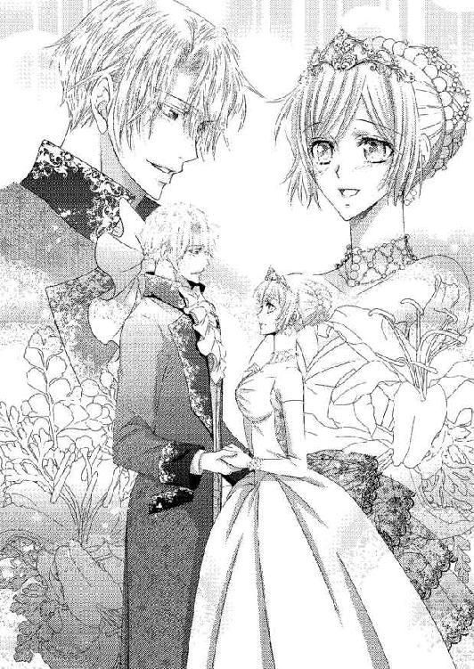
あとがき
初めましての方も、また会えて嬉しいの方も、こんにちは！ 舞姫美です。
このたびもお目にかかれて嬉しいです。これもお手に取って下さる方々と、作品に携わって下さるすべての方々のおかげだと、毎度同じ謝辞ですが作品を出させて頂くたびに強く思います。ありがとうございます。
今回のお話は担当さまから「純愛！」をテーマにいただいて、それを考えながら作り上げていきました。書きながら今更のように「純愛って何!?」などと......いやだって私の心は穢れきってい......コホンコホン（咳払い）。紳士でとても理性的、理知的であるジェラルドは頭の中を覗けばリネットのために、という方ですし（苦笑）。私の書くヒーローってどんなにスペック高くてもちょっと（かなり）残念な感じがしてなりません......。ですがこのとき考える私の「純愛！」を全力で込めさせていただきました。少しでも楽しんで心がぽわっとしていただければとても嬉しいです！
そしてそんな私のキャラたちにとても魅力的で華やかな艶を与えてくださった水綺鏡夜先生。ありがとうございました！ 目力のあるキャラたちが生き生きと今作品にも新たな息吹を加えて下さって、大感謝です！
関わって下さった方、読んで下さった方に少しでも作品で恩返しができるよう、今後も努力していきたいと思います。お読み下さり、ありがとうございました！
またどこかでお会いできることを祈って。
彼のささやかなおねだり
お披露目パーティの締めは、招待客たちを玄関ホールで見送ることだった。オールブライト家にそれだけのことをさせられるのは王族になるが、リネット自身ができればそうしたいと願い、ジェラルドが未来の妻の意見に同意してくれたのだ。招待客たちはそんなリネットの態度に探るような挨拶をして帰っていったものの、気分を害した感じはなかった。
リネットは緊張による疲労で俯いてしまいたくなる気持ちを奮い立たせ、最後の一人を笑顔で見送る。そのせいか扉が閉まり、最後の馬車が走り出す音が聞こえなくなると、へなへなと崩れ落ちてしまいそうになってしまった。
「......リネット......！」
すぐさまジェラルドが腰に腕を回し、支えてくれる。逞しく頼り甲斐のある胸に凭れかかることになり、リネットは慌てて身を起こそうとした。
「す、すみません、ジェラルドさま。ジェラルドさまもお疲れなのに......」
「疲れてなどいないよ。むしろ浮かれている。今夜は君が私の婚約者だと公にできた日だ。これ以上嬉しいことはないよ」
破顔して、ジェラルドがリネットの身体を抱き上げた。その様子を見て、一緒にいたレイモンドが苦笑する。
「今夜はもう部屋に戻りなさい。二人とも、ゆっくり休むように」
「す、すみません......」
不甲斐ないところを見せてしまったように思えて、リネットは思わず謝ってしまう。だがジェラルドとレイモンドは揃って微笑んだ。
「大丈夫だ。君はとても頑張った」
二人から褒めてもらえて、ホッとする。ジェラルドはリネットを宝物を抱えるように自室に運んで、ソファに降ろしてくれた。
今夜は婚約者としてのお披露目だったが、すでに国王への結婚許可証の申請は行われている。滅多なことがない限り許可が下りないことはなく、すぐに結婚式ができるようにジェラルドは動き始めている。そのため、二人の部屋はもう同室となっていた。
リネットを座らせるとジェラルドは足元に跪く。そして優しい仕草で靴を脱がせてくれた。
「ジェラルドさま、そんなこと自分で......！」
「疲れているんだろう？ 私がしたいんだ。させてくれ」
傅かれる仕草は、まるで自分が王女にでもなったようだ。リネットは気恥ずかしさと申し訳なさで頰を赤くする。
靴を脱がせたジェラルドはリネットの隣に座り、肩を抱き寄せた。リネットの髪飾りを丁寧に外しながら、ジェラルドは言う。
「これから少し忙しくなるな。今日のお披露目で君と友人になりたい貴婦人たちから、茶会や夜会の誘いが次々来るようになるだろう」
緩やかに流れ落ちる髪を、ジェラルドが優しく弄ぶ。リネットはされるがままになりながら、頷いた。
「そうですね、少し忙しくなると思います。でもジェラルドさまほどではないと思いますよ」
リネットの少し冗談めかした物言いに、ジェラルドは小さく笑った。
このお披露目パーティの間に、ジェラルドは随分笑うようになった。次期オールブライト公爵家の主としての厳しさは薄れることはなかったが、それでもリネットやアリシアやグレイのように親しい者たちと一緒にいるときは、こうやって心のままに笑うようになった。
カレンを迎えたことで、レイモンドの印象も随分柔らかく変化したと召使いたちから聞いている。その召使いたちも、以前のように必要以上に関わらないようにする淡白な態度が徐々に薄れていた。
まだ、リネットが望むような温かい家庭のような館には至らない。けれど少しずつ変化が見えている。きっとそう遠くない未来に、願いは叶うだろう。
「今度機会を見て、陛下にもお会いしてもらう」
「国王陛下に......!?」
「オールブライト公爵夫人になるんだ。王妃殿下との関わりも持つようになる」
まだまだリネットが想像していないことが起きそうだ。だが、不安はない。
（だって、ジェラルドさまがいてくれるもの）
ジェラルドが髪を弄るだけでは足らなくなったのか、リネットを抱き寄せて頰や額に甘くくちづけてきた。
「ああ......でもどんなに忙しくなっても、一日一度は君が淹れてくれるお茶を飲ませてくれないか」
あまりにもささやかすぎるおねだりに、リネットは苦笑する。
「そんなことくらい、いくらでもします。ジェラルドさまはもっと私に我が儘を言ってくださっていいんですよ。これまで私の方がたくさん甘やかしてもらったんですから」
ジェラルドが嬉しげに笑う。そしてリネットの頰を片掌で捕らえて、視線を固定させた。
宝石のように美しいエメラルド色の瞳が、リネットを甘やかに見つめてくる。
「では、もう一つ我が儘を聞いてもらってもいいかい？ ......君に、くちづけたい」
リネットはジェラルドの首に腕を伸ばしてそっと身を寄せる。ジェラルドもリネットの身体に両腕を回して、優しく抱き寄せていた。
ちゅ......っ、と、互いの唇のぬくもりを確かめ合うような柔らかなくちづけを交わしたあと──どちらからともなく深く舌を絡め合うくちづけに変わっていく。想いを伝え合うような濃厚なくちづけは、リネットの身体をとろけさせるものだった。
互いに満足するまでたっぷりとくちづけを味わい合ったあと、ジェラルドがリネットを抱き上げてベッドに向かう。
「疲れているかもしれないが......一度だけ」
リネットは笑って頷いた。ジェラルドが甘えてくれて、嬉しかった。
おしまい♥
愛の証 ～隠された公爵令嬢と思い出の指輪～
電子第１版発行 ２０１６年２月29日
著 者 舞 姫美
発行所 株式会社ジュリアンパブリッシング
東京都千代田区九段北１‐５‐９‐３Ｆ
０３‐３２６１‐２７３５
ＨＰ http://www.julian-pb.com/
※本電子書籍は左記の作品に基づき製作されました。
発行 株式会社ジュリアンパブリッシング
ロイヤルキス文庫『愛の証 ～隠された公爵令嬢と思い出の指輪～』
(初版発行 ２０１５年11月30日)
(c)Himemi Mai 2016
※本書の一部、あるいは全部を無断で複製複写（コピー）、転載、上演、放送することは法律で認められた場合を除き、著作権の侵害となるため、禁止します。